DISTINCTIO III — MENSURATION OF FIELDS, HERON’S PROOF & CIRCLE BOUNDS¶
Scalene Altitudes, the Euclidean Incenter Proof of Heron’s Formula, Quadrilaterals, and the 96-gon Circle Measurement
Source Text: fibonacci:pg-3 (Boncompagni Vol. II, pp. 30–110 · fol. 18v–67v) · Latin (1220 / Boncompagni 1862) · Summary · GEOMETOR Notes
Triangles by Cathetus and Casus¶
Latin Locus: De Mensuratione Trigonorum (pp. 30–39) · Commentary: Notes on (13, 14, 15) & Rational Trigonometry
Here begins the third distinction, on the measurement of all fields.
I have therefore decided to divide this distinction into five parts. In the first of these we shall measure triangles; in the second, quadrilaterals; in the third, multilaterals, which consist of straight lines; in the fourth, circles and their portions, and moreover oblique figures, and those mixed of straight and curved lines; and in the fifth we shall measure fields themselves that lie on the ascent of mountains.
Here begins the first part of the third distinction, on the measurement of triangles.
Fields which are triangular or three-sided are called some orthogonia, that is right-angled; others oxigonia, that is acute-angled; others ampligonii are also called, and they receive these names from their angles. Indeed an orthogonium triangle is one that has one of its three angles right, while the remaining two angles are equal to one right angle. Also an oxigonium triangle is one that has all three angles acute. An ampligonium triangle is one that has one of its three angles greater than a right angle. Triangles also receive names from their sides, of which some are ysopleuri, that is equilateral; some ysocheli, that is isosceles; and some diuersilateri, which are called scalene. Equilateral indeed are those whose all three sides are equal to one another. Isosceles are those which have two sides equal to one another. Scalene indeed are those which have all three sides unequal. And it is to be noted that in every triangle three catheti, that is perpendiculars, can be drawn; of which each falls from any of the angles upon the side subtending or receiving that angle.
Now in right-angled triangles one of the perpendiculars falls within the triangle, and it is that which is produced from the right angle upon the side subtending that angle; while the remaining perpendiculars are the two sides containing the right angle. Now in acute-angled triangles all three perpendiculars fall inside. For in obtuse-angled triangles two fall outside and the other inside. Indeed the area, that is the surface, of all triangles is gathered
f. 0038 · p. 31

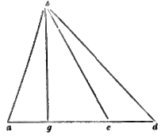

from the multiplication of half the cathetus into the whole base, or from the multiplication of half the base into the whole perpendicular; which I shall take care to show with demonstrations. If in a triangle from an angle that is not less than any of the remaining angles a cathetus is erected upon the side subtending that angle, it will fall within the triangle. If in triangle .abg. angle .bag. is not less than angle .abg. or .bga., I say that if from point .a. upon straight line .bg. a cathetus is erected, it will fall within triangle .abg.
Not so; rather if it is possible, let it fall outside the triangle from side .b.; and let .gb. therefore be produced in a straight line indefinitely onto point .e.; and let straight cathetus .az. be drawn upon .ge.; and .azb. will be a right-angled triangle having the angle at .azb. right: and since in triangle .azb. one side has been drawn out outside the triangle, namely .zb. to .bg., indeed the exterior angle at .abg. is greater than the interior opposite angle at .azb.: right indeed is the one at .azb.; therefore greater than a right angle is the one at .abg. But the angle at .bag. is not less than that at .abg.; for greater than a right angle is the one at .abg. Likewise also the angle at .bag. is greater than a right angle. In triangle .abg. indeed there are two angles greater than two right angles; which is impossible, since all three angles of any triangle are equal to two right angles, as Euclid says in the thirty-second of the first: therefore the cathetus drawn from .a. upon side .bg. does not fall outside the triangle on side .b. Similarly it will be shown neither outside on side .g.; for it will fall inside, which was to be shown. From this indeed it is understood that in an acute-angled triangle from the greater angle existing in it, and in a right-angled triangle from the right angle, and in an obtuse-angled triangle from the obtuse angle, if a cathetus is erected upon the sides subtending those angles, it will fall within the triangles themselves. Let us therefore demonstrate how in a right-angled triangle the sides containing the right angle are catheti in it. Let there lie indeed a right-angled triangle .bgd., having the angle at .bgd. right. I say that straight line .bg. is perpendicular upon straight line .gd., and .dg. upon .bg.: let straight line .gd. be produced in a straight line to point .a.; and since upon straight line .ad. stands straight line .bg., it makes around itself two angles either right or equal to two right angles. Right indeed is the angle at .bgd., and right remains the one at .bga. Wherefore .bg. is the cathetus upon .ad. Similarly if straight line .bg. is produced, it will be shown that straight line .dg. is the cathetus upon .bg. I say again: from point .b. another cathetus cannot fall upon straight line .ad. besides cathetus .bg. But if it is possible, let .ba. be a cathetus upon .ad., then in triangle .bag. there will be two right angles, which is absurd. Similarly if we make it fall between .g. and .d. upon point .e., there will be in triangle .abe. two right angles, at .bge. and at .geb., which is impossible: therefore upon straight line .ad. no cathetus falls besides .bg. Similarly it will be shown that neither from point .d. upon .bg. can a cathetus fall besides .dg.; which was to be shown. If in an acute-angled triangle from a smaller angle existing in it a cathetus is drawn upon the side subtending that angle, it will fall within the triangle. For the sake of example: let there be an acute-angled triangle .abg. having a smaller angle at .bag. I say: if from .a. a cathetus is erected upon straight line .bg., it will fall within the triangle. Not so; rather if it is possible, let it fall outside upon point .d. And since straight line .ad. is a cathetus upon straight line .dbg., the angle at .adb. is right. But the angle at .abg., which is outside triangle .adb., is greater than the interior opposite angle at .adb. But that at .adb. is right; wherefore the angle at .abg. is greater than a right angle; which is absurd, since triangle .abg. is acute-angled: therefore the cathetus from .a. does not fall outside triangle .abg.: for it falls inside; which was to be shown.
f. 0039 · p. 32
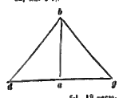


In an obtuse-angled triangle, if a cathetus is drawn from an acute angle upon the side subtending that angle, it will fall outside the triangle. Let there be an obtuse-angled triangle .bdg., having an obtuse angle at .bdg. I say that if from angle .dbg. a cathetus is drawn upon straight line .gd., it will fall outside triangle .bdg. Not so; rather if it is possible, let it fall between .dg. at point .a. And since .ba. is the cathetus upon straight line .gd., the angle at .bad. is indeed right. For the angle at .bda. is greater than a right angle. Wherefore in triangle .bda. there are two angles greater than two right angles; which is impossible. Therefore from point .b. a cathetus upon .gd. does not fall within triangle .bdg. Similarly it will be shown that neither from point .g. upon line .bd. can a cathetus fall within triangle .bgd.: for they fall outside; which was to be shown. If upon two lines containing an angle a straight line falls, and in the middle of it a point is taken, and from the point to the angle a straight line is drawn, if that straight line is equal to the line lying from the said point up to one of the lines containing the angle, then that angle will be right. For example: let there be two lines .ab. and .bg. containing angle .abg.; and upon them falls straight line .de.; in the middle of which let point .z. be taken, and let .zb. be drawn. I say that if straight line .zb. is equal to straight line .zd. or .ze., then angle .abg. is right. Since the three lines .zb., .zd., and .ze. are equal to one another, if from point .z. with the interval of one of them a circle is described, namely passing through points .d.b.e., within which circle a certain straight line .de. is fitted, upon which is the center of the circle, therefore straight line .de. is the diameter of that circle, by which diameter the arc .d.b.e. is comprehended: therefore .d.b.e. is a semicircle, within which is angle .dbe. Indeed an angle which is in a semicircle is right, as Euclid shows in his third book. From this indeed it is manifest that if straight line .zb. were greater than straight line .zd. or .ze., angle .dbe. would be acute; but if .zb. were less than .zd. or .ze., angle .abg. would be obtuse. Indeed in a right-angled triangle, the square of the side subtending the right angle is equal to the two squares of the sides containing the right angle. Let there be a right-angled triangle .abg. having a right angle at .agb. I say indeed that the square of line .ab. is equal to the two squares of lines .ag. and .gb.: I shall draw upon straight line .ab. from point .g. the cathetus .gd.; and triangle .abg. will be divided into two right-angled triangles, which are .gdb. and .gda.; and they are similar to one another and to the whole, as Euclid demonstrated in the sixth book. And since triangle .gdb. is similar to triangle .agb., about the common angle .b. they have proportional sides. For as .db. from triangle .dbg. is to .bg., so .gb. from triangle .bag. is to line .ab. Wherefore the multiplication of .db. into .ba. is equal to the square of line .bg. Again, since triangle .gda. is similar to triangle .agb., about their common angle .a. they have proportional sides. Therefore as straight line .da. is to .ag. from triangle .gda., so straight line .ga. from triangle .agb. is to straight line .ab. Wherefore .ad. into .ab. is equal to the square of line .ag. Indeed it has been demonstrated that .db. into .ba. is equal to the square of line .gb. Wherefore the multiplication of .db. into .ba. together with the multiplication of line .ad. into .ab. is equal to the two squares of lines .bg. and .ga. But the multiplication of .db. into .ab. together with .da. into .ab. is equal to the square of line .ab.; therefore the square of line .ab. is equal to the two squares of lines .bg. and .ga.; which was to be shown. With these things thus demonstrated, how triangles are measured we demonstrate. But it is first to be noted that of right-angled and obtuse-angled triangles some
f. 0040 · p. 33
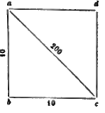

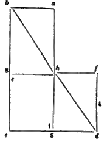
are isosceles, others scalene. Of acute-angled triangles indeed some are equilateral, others isosceles, and others scalene. Wherefore, that we may have perfectly the doctrine of measuring all kinds of triangles, we divide this part, namely the first of this third distinction, into three differences. In the first of these we shall measure right-angled triangles; in the second, acute-angled; in the third, obtuse-angled.
Here begins the first difference.
The area of all right-angled triangles is gathered from the multiplication of one side into half of the other containing the right angle. For the sake of example: let there be a right-angled and isosceles triangle .abc., having in each of the sides .ab. and .bc. 10 perticas; and let side .ac. be the root of 200 perticas; you shall multiply half of side .ab. into the whole side .bc., or conversely, namely 5 by 10; and so it will yield 50 superficial perticas for the area of the whole triangle .abc.: and this will be proved if from point .a. upon line .ba., according to a right angle, you draw line .ad. equal to line .bc., and join line .dc., which will be equal to line .ab. Therefore, because quadrilateral .abcd. is equilateral and right-angled, from which triangle .abc. contains half as is clearly shown in the written figure: therefore the whole square .abcd. is 100 perticas, which are gathered from the multiplication of 10 into 10, namely of one side into itself: wherefore triangle .abc., since it is half of that square, must contain 50 perticas. Likewise there is a scalene right-angled triangle .bcd., whose side .bc. is 6 perticas; and side .cd. is 8 perticas; and side .bd. is 10 perticas; and the angle at .c. is right. Wherefore you shall multiply half of .bc. by the whole .cd., that is 4 by 6; or half of .cd. into the whole .cb., namely 3 by 8, and you will have 24 perticas for the area of triangle .bcd.; which is known to be true by the doctrine of the above-written triangle: or otherwise let .bc. be divided into two equal parts upon point .e.; and from point .e. let line .ef. be drawn equidistant and equal to line .cd.; and let .df. be joined. And since line .cd. is equidistant and equal to line .df., line .fd. will be equal and equidistant to line .ce., as is clearly shown in geometry. Wherefore line .df. is 4 perticas, and is equal to line .eb.; and .bh. is equal to .hd.; and angle .ebh. is equal to angle .hdf.: whence straight line .eh. is equal to straight line .hf. Wherefore triangle .hfd. is equal to triangle .beh.: therefore the whole triangle .bcd. is equal to the right-angled quadrilateral .ecfd., which is contained from the multiplication of line .ec. into line .cd., namely of 4 into 6. Wherefore triangle .bcd. is contained from the multiplication of half .bc., namely of .ec. into .cd., as we said before. Similarly it will be shown if from point .i., namely the midpoint of .cd., a line .ia. is drawn equidistant and equal to line .cb., and straight line .ba. is joined; and triangle .abh. will be equal to triangle .hid.: if quadrilateral .bcih. is added in common, the whole quadrilateral .abci. will be equal to triangle .bcd.; whose area of the quadrilateral is had from .ic. into .cb., that is from 3 into 8, as we said above. For if you wish to find side .bd. through the remaining sides, multiply side .bc. into itself, namely 8, which will be 64; to which add the multiplication of side .cd. into itself, namely 36, which will be 100; the root of which, which is 10, is the length of the hypotenuse .bd. Let the hypotenuse .bd. be 10 perticas, and the base .cd. 6 perticas; and let the length of the cathetus .bc. be sought; you shall multiply the hypotenuse into itself, namely 10 by 10, which will be 100; from which take away the multiplication of the base into itself, namely 36, there remain 64; whose root, namely 8, is the length of the cathetus .bc. Likewise let the hypotenuse be 10, and the cathetus be 8;
f. 0041 · p. 34
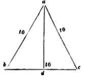


and let the base .cd. be unknown. From the square of .bd., namely from 100., extract the square of .bc., namely 64., there remain 36.; whose root, namely 6., is side .cd.
Here begins the second difference.
The area of all acute-angled triangles is gathered from the multiplication of the cathetus into half the base, or from the multiplication of the base into half the cathetus. For the clarity of which, let there be an acute-angled and equilateral triangle .abc. having in each side 10 perticas: let cathetus .ad. be drawn upon straight line .bc.; since .ad. is a cathetus upon straight line .bc., each of the angles at .d. is equal: therefore triangles .adb. and .adc. are right-angled: and since line .ab. is equal to line .ac., and line .ad. is common to both triangles, therefore base .bd. will be equal to base .bc.; and triangle .adb. will be equal to triangle .adc. And since triangle .adb. is right-angled, its area is gathered from the multiplication of cathetus .ad. into half of base .bd., namely into 2 1/2. Similarly since triangle .adc. is right-angled, its area is gathered from the multiplication of cathetus .ad. into half of base .dc.; wherefore the area of the whole triangle .abc. is gathered from the multiplication of cathetus .ad. into half of base .bc., as we said above. With the same things disposed, it will be shown that the area of triangle .abc. is gathered from the multiplication of the whole base .bc. into half of cathetus .ad. For if you wish to know the length of cathetus .ad., extract the square of line .bd., that is its multiplication, or power, from the power of the whole line .ab., namely .25., from .100., there will remain .75.; the root of which number, namely a little less than 8 2/3 perticas, is the length of cathetus .ad.: which 8 2/3 perticas multiplied by half of base .bc., namely by .5., yield a little less than 43 1/3 perticas for the area of the whole triangle .abc. Similarly the multiplication of the whole base, namely .10., into half the cathetus, which is a little less than 4 1/3 perticas, makes nearly 43 1/3 perticas; or multiply .bd. by .ad., that is .5. by the root of .75., and you will have the root of .1875. for the area of triangle .abc.; whose root is by approximation 43 1/3, less 1/26. And if you wish to find the area of the above-written triangle otherwise from the square of one of the sides, namely of .100., take the third and tenth part; and what results will be the area by approximation. For the ratio of the area of any equilateral triangle to the square of its side is a little less than the ratio which .13. has to .30. Likewise let there be an isosceles and acute-angled triangle .def., having sides .de. and .df. equal; each of which let be 10 perticas; and let side .ef. be 12 perticas: between its equal legs, namely upon base .ef., the cathetus must be drawn; for the reason that it falls upon half of .ef.; and you should study to find the length of the drawn cathetus .dg.: namely extract the power of .eg. from the power of side .de., that is .36. from .100., there remain .64.; which number is the power of cathetus .dg.: wherefore .dg. is 8 perticas, namely the root of .64.: similarly by multiplying .8. by half of base .ef., namely into .6.; or the whole base into half the cathetus, namely .12. by .4., there come 48 perticas for the area of the whole triangle .def. For when the cathetus is multiplied into half the base, then from that triangle there is constituted an oblong quadrilateral, having in length 8 perticas, namely the quantity of the cathetus, and in breadth 6 perticas, namely half the base. For the sake of example: let triangle .def. be described again; and from point .d. let line .dh. be drawn equidistant and equal to line .gf., that is equal to line .ge.; and let straight line .hf. be joined, which will be equal to cathetus .dg.
Wherefore quadrilateral .dgfh. is equal to triangle .def. For quadrilateral .dgfh.
f. 0042 · p. 35
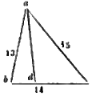

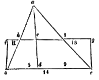
consists of the multiplication of cathetus .dg. into .gf., namely into half of .ef. Likewise let there be a scalene and acute-angled triangle .abc.; whose side .ab. let be 13 perticas; side .ac. let be 15 perticas; let base .bc. be 14 perticas. For in this triangle the cathetus cannot be found until first the casus upon the base, on which the perpendicular, namely the cathetus, falls, is found; which casus can be found in three ways. The first way indeed is that you join the power of one side with the power of the base; and from their sum extract the power of the other side; and divide half of the remainder by the length of the base; and what comes from the division will be the casus on that side from which the power of the side is joined with the power of the base. As in the above-written triangle, the power of whose base, namely of .14. into itself, is .196.; which added with the power of side .ab., namely with the multiplication of .13. into itself, which is .169., makes .365.: from which having extracted the power of side .ac., namely .225., there remain .140.; half of which, namely .70., divided by the base, namely by .14., there come .5., which are the casus on side .ab., namely the quantity .bd.: the remainder indeed .dc. will be 9 perticas, namely the difference which is from .5. up to .14.
Likewise the power of side .ac., namely .225., added with the power of base .cb., namely with .196., makes .421.; from which having extracted the power of side .ab., namely .169., there remain .252.; half of which, namely .126., divided by the base, yields .9. for the casus .cd. Another way is that you add the perticas of both hypotenuses, as in this triangle .13. with .15. will be .28.; divide which by .2., they will be .14.; multiply which by the difference which is from one of the hypotenuses up to that .14., namely by .1., they will be .14.; divide which by half of the base, namely by .7., there will come .2.; add which upon half of the base, there will be .9.; which are the greater casus on the side of the greater hypotenuse .ac. Similarly having extracted that .2. from that .7., there will remain the lesser casus .bd. of 5 perticas, as was found by the first way. The third way is that you extract the power of the lesser hypotenuse from the power of the greater, namely .169. from .225.; and the remainder indeed, namely .56., divide by the base, namely by .14., there will come .4., which add with the base, there will be .18., half of which, namely .9., is the greater casus: or extract .4. from the base, there remain .10.; half of which, namely .5., is the lesser casus. And this seems to me more fitting than the rest. Therefore having found the casus, if you wish to find the perpendicular .ad., extract the power of the lesser casus, namely .25., from the power of side .ab., namely from .169., there will remain .144.; whose root, namely .12., is the cathetus .ad.: or extract the power of the greater casus, namely the multiplication of .9. into itself, which is .81., from the power of .ac., namely from .225., there will remain similarly .144. for the power of cathetus .ad.: wherefore cathetus .ad. is .12., as we said before. Indeed the multiplication of the cathetus into half the base, or conversely, yields 84 perticas for the area of the whole triangle .abc. In the above-written isosceles triangle indeed we showed it to be equal to that right-angled quadrilateral which has in length the quantity of the cathetus of the same triangle, and in breadth the quantity of half its base. In this indeed we wish to demonstrate how triangles are equated to those right-angled quadrilaterals which have in length the quantity of the whole base of the triangles, and in breadth the quantity of half the cathetus: let cathetus .ad. be divided into two equal parts upon point .e., as is seen in this other figure; and through point .e. let line .fg. be drawn, which is equal and equidistant to line .bc.; and let straight lines .fb. and .gc. be joined, which will be equal and equidistant to one another; on account of which straight line .fg. is equidistant and equal to line .bc.: and since cathetus .ad. is divided into two equal parts according to point .e.; and through point
f. 0043 · p. 36
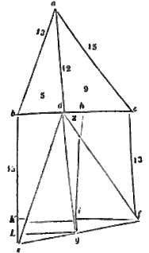
.e. is drawn the base .bc. equidistant to straight line .fg., which cuts straight lines .ab. and .ac. into two equal parts at points .h. and .I., according to what is declared in geometry; and the angles at .e. will be right, just as are the angles at .d.: wherefore angles .f. and .g. are right: therefore if straight line .ae. is cut from .a. at .e., and straight line .eh. from .e. at .h.; and triangle .aeh. is placed upon triangle .bfh., straight line .ae. will fall upon straight line .fb.: because straight line .fb. is equal to straight line .ed., which is equal to straight line .ea.; and straight line .eh. upon straight line .hf.; and straight line .ah. upon straight line .hb.; and angle .f. will be equal to angle .aef. Wherefore angle .f. is right: for the same reason the angle at .g. is right, and triangle .cig. is equal to triangle .aei.: therefore the whole triangle .abc. is equal to quadrilateral .fbcg., which has on one side the quantity of the base, and on the other the quantity of half the cathetus, as was to be shown. Nor is it to be omitted that in quadrilateral .fbcg. the angle at .bcg. is equal to the angle at .f.; because they are opposite: wherefore also angle .fbc. is equal to the angle at .g.; all which things are clearly declared in the book of Euclid, where it is shown that all figures which have opposite sides equal will likewise have equal angles: wherefore angles .fbc. and .bcg. are right: therefore quadrilateral .fbcg. is right-angled, as it ought to be. In the second book of Euclid it is indeed demonstrated whence proceeds the first finding of the casus of the perpendicular in an acute-angled triangle.
And we wish to demonstrate by geometric figures whence proceeds the finding of the same casus according to the second and third way. Let the above-written triangle .abc. be described again; and let cathetus .ad. be drawn in it; and through points .bc. at right angles let straight lines .eb. and .fc. be drawn; and let straight line .eb. be equal to straight line .ac., namely 15; and straight line .fc. equal to straight line .ab., namely 13; and let .fe. and .fd. and .de. be joined; and let straight line .ef. be divided into two equal parts upon point .g.; and from point .g. equidistant to both straight lines .fc. and .eb. let straight line .gh. be drawn; and through point .f. straight and equidistant to .bc. let straight line .fik. be drawn.
Again through point .g. equidistant to straight lines .cb. and .fik. let straight line .gl. be drawn; and since triangles .adc. and .adb. are right-angled having right angles at .adc. and .adb., the power of side .ac. is equal to the two powers of lines .ad. and .dc., and the power of line .ab. is equal to the two powers of lines .ad. and .db. Wherefore if the power of line .ad. is taken away in common, the power of the greater casus .dc. plus the power of the lesser .db. can equal as much as the power of line .ac. plus the power of line .ab. Wherefore the powers of lines .ab. and .dc. are equal to the powers of lines .ac. and .db. But straight line .fc. is equal to straight line .ab., and straight line .eb. to straight line .ac. Wherefore the power of lines .fc. and .cd. is equal to the power of lines .eb. and .bd. But the powers of lines .fc. and .cd. are equal to the power of line .fd. since angle .fcd. is right. In a similar manner also the power of line .de. is equal to the power of lines .eb. and .bd.: wherefore lines .fd. and .de. are equal to one another. Therefore triangle .fde. is isosceles. And since base .ef. is divided into two equal parts upon point .g.; line .dg. is indeed a cathetus upon line .ef.: wherefore each of the angles at .dge. and .dgf. is right. Again, since straight line .gh. is equidistant to straight line .fc.; and upon them falls straight line .cb.; also the angles at .fch. and .ghc. are equal to two right angles. But that at .fch. is right; wherefore that at .ghc. is right; the exterior angle at .ghd. is right, because it is equal to the interior and opposite one at .fch.: therefore line .gh. is a cathetus upon straight line .bc. Likewise since through point .f. is drawn line .fik. equidistant to line .cb.; and line .be.
f. 0044 · p. 37
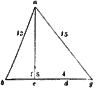
is equidistant to line .fc.; therefore quadrilateral .kbcf. is a parallelogram. Wherefore opposite sides are equal to one another: therefore straight line .fk. is equal to straight line .bc., and straight line .bk. to straight line .cf. Therefore .bk. is 13, there remains .ke. 2. For straight line .ih. is equal to both straight lines .fc. and .kb.
For quadrilaterals .kbhi. and .ihcf. are parallelograms. Therefore straight line .hi. is 13. Likewise since upon equidistant lines .eb. and .gh. straight line .ef. falls, the exterior angle at .fgi. is equal to the interior opposite angle at .gel. And the angle indeed at .fig. is equal to that at .el., namely at .gle.: for each is right. The remaining one at .gfi. is equal to the remaining one at .egl.; and straight line .fg. is equal to straight line .ge. Wherefore the remaining sides will be equal to the remaining sides, because they subtend equal angles: indeed side .gi. is equal to side .el.; and side .fi. is likewise equal to side .gl. But straight line .gl. is equal to straight line .ik.; because quadrilateral .lkig. is a parallelogram. Therefore straight line .fi. is equal to straight line .ik.; wherefore straight line .ch. is equal to straight line .hb.: therefore base .bc. is divided into two equal parts upon point .h.; wherefore .ch. is 7. Likewise because quadrilateral .lkig. is a parallelogram, straight line .lk. is equal to straight line .ig. But straight line .ig. has been demonstrated to be equal to straight line .le.; wherefore also .kl. is equal to straight line .le. But the whole .ke. is .2.; therefore each of the straight lines .kl. and .le. and .ig. is .1.: whence the whole .hg. is 14. Again since angle .dgf. is right, the two angles which are .dgh. and .hgf. are equal to one right angle. Similarly since triangle .gif. is right-angled, having a right angle at .gif., the remaining two angles at .igf. and .gfi. are equal to one right angle; therefore angles .dgh. and .hgf. are equal to angles .hgf. and .gfi. Wherefore if angle .hgf. is taken away in common, angle .dgh. will remain equal to angle .gfi. For angle .gif. is equal to angle .ghd. The remaining .igf. is equal to the remaining .hdg. Therefore triangle .fig. is similar to triangle .ghd.; wherefore as .fi. is to .ig., namely as .7. is to one, so .gh., namely .14., is to .hd. Wherefore the multiplication of .gi. into .gh. divided by .fi. yields .hd.; and this is what we did in the second way. Namely we added side .ab. with side .ac., that is .fc. with .eb., and we had .28.; half of which, namely .14., was line .gh.; which we multiplied by .ig., which is that by which straight line .gh. exceeded straight line .fc., that is .ab., or .gi. is that by which .ac., namely .eb., exceeded line .gh.; and from that multiplication we had .14.; which we divided by half of base .bc., namely by .ch., that is by .fi.; each of which is .7., and we had .2. for the quantity .hd.; which we added to half the base, namely .ch., which is .7., and we had .9. for straight line .cd., which is the greater casus; or we extracted .hd. from .hb., namely .2. from .7., there remained to us .5. for the lesser casus .db.; which was to be shown.
The third way.
Let the above-said triangle .abg. lie again, whose side .ab. let be .13.; side .ag. also let be .15.; base indeed .bg. let be .14.; and let cathetus .ac. be drawn upon .bg., and since side .ag. is greater than .ab., the casus .gc. is greater than .cb.: wherefore from .cg. let .cd. be taken away, which is equal to straight line .cb., and straight line .bd. will be divided into two equal parts upon point .c.; to which straight line .bd. in a straight line is added .dg. Wherefore the multiplication of .dg. into .bg. with the square of line .cd., or .cb., is equal to the square of line .cg. Wherefore the square of line .cg., namely of the greater casus, exceeds the square of line .bc., namely of the lesser casus,
f. 0045 · p. 38
in the quantity of the multiplication of line .dg. into line .bg. But it was shown above in another figure, that the excess of the square of casus .cg. over the square of casus .cb. is as the excess of the square of side .ag. over the square of side .ab. Wherefore the excess of the square of side .ag. over the square of side .ab. is as the multiplication of straight line .dg. into straight line .bg. But the square of side .ag., namely .225., exceeds the power of side .ab., namely .169., by .56.; wherefore the multiplication of .dg. into .bg. rises to .56. But .bg. is .14.; which divided into .56. yields .4. for the quantity of line .dg.; which .4. extracted from base .bg., namely from .14., there remains line .bd. 10.; half of which, namely .5., will be in the lesser casus .bc.; which was to be shown.
Here begins the third difference.
But if the triangle is obtuse-angled and isosceles, you shall draw the cathetus in it upon the greater side; and you shall work according to what we said above in the acute-angled and isosceles triangle. But if the obtuse-angled triangle is scalene, as triangle .abg., whose side .ab. let be 13 perticas; and side .bg. 4 perticas; side also .ag. 15 perticas.; if from the obtuse angle .b. you wish to draw a cathetus upon the greater side, namely upon .ag., it will fall within the triangle. Therefore you will find the casus or cathetus, and also the area of it, according to what we taught in the scalene acute-angled triangle. But if from angle .a. or from angle .g. you wish to draw the catheti, they will fall outside the triangle.
Wherefore how their casus are found outside the bases, it is necessary to indicate. From the power of the greater side, which is .225., extract the power of the remaining two sides; of which the power of .ab. is .169., and the power of .bg. is .16., there will remain .40.; half of which, namely .20., if you divide by base .bg., namely by .4., there will come .5. for the quantity of casus .bd., upon which cathetus .ad. is erected. And if you divide that same .20. by base .ab., namely by .13., you will have 1 7/13 perticas for casus .be., upon which cathetus .ge. is raised. Then if you extract the power of .db., which is .25., from the power of .ab., which is .169.; or take away the power of .dg., which is .81., from the power of .ag., there will remain for the power of cathetus .ad. 144.; whose root, namely .12., is the length of cathetus .ad.: which if you multiply into half of its base, namely into .2., they will yield 24 perticas for the area of triangle .abg.: for example: triangle .adg. is right-angled; and its area is gathered from the multiplication of half of cathetus .ad., namely of .6., into the whole base .dg., namely into .9.: wherefore the area of triangle .adg. is 54 perticas; from which if you extract the area of the right-angled triangle .adb., which is .30., which is gathered from the multiplication of the same half of cathetus .ad. into base .db., there will remain for the area of triangle .abg. 24 perticas; which are gathered again from the multiplication of half of cathetus .ad. into base .bg., or from the multiplication of cathetus .ad. into half of base .bg., as we said before. Similarly if you multiply cathetus .ge. into half of base .ba., you will have the same area. For you will find cathetus .ge. if you extract the power of line .eb. from the power of line .bg., or the power of line .ea. from the power of line .ag. And cathetus .ge. is 3 9/13 perticas; half of which, namely 1 11/13, if we multiply by base .ab., namely by 13, we arrive at the same 24 perticas for the area of triangle .abg.
For in the second book of Euclid it is clearly demonstrated whence proceeds the above-said method in finding the casus of perpendiculars which fall outside an obtuse angle in obtuse-angled triangles. Indeed we can by two other ways find those same casus,
f. 0046 · p. 39
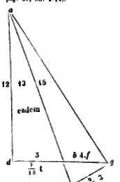

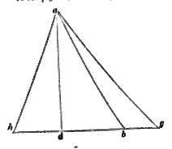

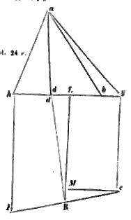
namely by those which we demonstrated above with demonstrations. And this is the first way: add .13. with .15., namely side .ab. with side .ag., they will be .28.; half of which, namely .14., multiply by the difference, which is from those .14. up to one of the aforesaid sides, namely by .1., they will be .14.; which if you divide by .2., namely by half of the base, there will come .7.; from which having taken away .2., namely .bf., there will remain .5. for casus .bd.: upon which .7., if we add line .fg., we shall have .9. for the whole line .dg. Another way indeed is that you extract the power of line .ab. from the power of line .ag., namely .169. from .225.; and the remainder, namely .56., divide by base .bg., namely by .4.; and what came from that division, .4., extract from the base, there will remain .10.; half of which, namely .5., is casus .bd. Which things will be most clearly shown if we draw out line .gd. to point .h.; and let line .dh. be equal to line .db.; and let .ah. be joined, as is seen in this other figure. For in triangle .ahg. also cathetus .ad. is drawn within the triangle; and since straight line .hd. is equal to straight line .db., and in them is cathetus .ad., straight line .ah. is equal to straight line .ab.: therefore straight line .ah. is 13, and straight line .ag. is 15, and straight line .bg. is 4, and straight line .bh. is unknown; and it is divided into two equal parts upon point .d., which lies in a straight line with .bg.; and line .dg. is the greater casus; line also .dh. is the lesser in triangle .ahg. Wherefore the power of line .dg. exceeds the power of line .dh. in the quantity in which the power of line .ag. exceeds the power of line .ah., namely by .56. But the power of line .dg. exceeds the power of line .dh. in the multiplication of .bg. into line .gh. Wherefore .bg. multiplied into .gh. makes .56.: wherefore .56. divided by .bg. will yield 14 for the whole line .hg.; from which having taken away line .bg., namely .4., surely 10. will remain for line .bh.; half of which, namely .5., is casus .bd., as was found above. For if upon straight line .hg. at right angles we draw lines .gc. and .hi., of which let .gc. be equal to both lines .ab. and .ah., and let line .hi. be equated to line .ag.; and let .ci. be joined; and let the figure be completed, according to what we did in the acute-angled triangle. You will find line .kl. to be half of sides .ah. and .ag.; and .hl. to be half of base .hg. Wherefore .dl. is .2., and .lg. remains unknown; and .mk. is .1., namely the difference, which is from line .kl. to either of lines .cg. or .hi.; and triangle .dlk. is similar to triangle .kmc. Wherefore as .dl. is to .lk., so .km. is to .mc. Wherefore you shall divide the multiplication of .kl. into .km. by .2., namely by .dl., there will come .7. for line .mc., namely for .lg.; to which having added .2., namely .ld., you will have .9. for line .gd.; from which having extracted .gb., namely .4., there will remain .5. for casus .bd., as is fitting. Otherwise let there lie again an obtuse-angled triangle .acb. having an obtuse angle at .acb.; and let .ac. be .13., and .ab. .20., and .bc. .11.; and let cathetus .ag. be drawn outside it upon line .bg.; and from points .c. and .b. at right angles let .bd. and .cf. be drawn, of which .bd. is equal to line .ac. and .cf. to line .ab., .bd. will be 13, and .cf. 20; and let .df. and .fg. and .dg. be joined; and from point .e., namely from the middle of line .df., let cathetus .eh. be drawn upon line .gb.; and let straight line .eg. be joined; and through point .d. let .dk. be drawn equidistant to line .bh.: and since triangles .agc. and .agb. are right-angled, the power of line .ac. is equal to the two powers of lines .ag. and .gc.; and the power of line .ab. to the powers of lines .ag. and .gb. Wherefore the power of lines .ac. and .gb. is equal to the power of lines .ab. and .gc., that is, the power of lines .fc. and .gc. is equal to the squares of lines .db. and .bg.: wherefore straight lines .dg. and .gf. are equal to one another; and straight line .ge. is the cathetus upon .df.; and by the rest aforesaid it will be shown that .hk. is .13., namely
f. 0047 · p. 40
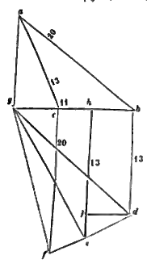

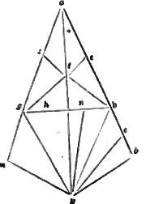
equal to line .db. and .ke. to be the excess of line .he. over .bd.; and triangle .ghe. to be similar to triangle .ekd. Wherefore as .dk. is to .ek., so .eh. is to .hg. Wherefore if the multiplication of .ek. into .eh. is divided by .dk., namely by .bh., which is half of line .bc., there will come line .hg. 10 1/2: from which having extracted line .ch., namely 5 1/2, there will remain casus .cg. 5., as was to be shown. Wherefore cathetus .ag. will be .12.; half of which, if we multiply by base .cg., namely .6. by .11., surely will yield 66 perticas for the area of triangle .acb.
Heron’s Semiperimeter Rule & Fibonacci’s Incenter Proof¶
Latin Locus: Regula et Demonstratio Campi Trigonij (pp. 40–41) · Commentary: Notes on Heron & the Banū Mūsā Transmission
For that the doctrine of measuring may be perfectly contained in this book, we shall indicate how any triangle can be measured without investigating the cathetus. Join the sides of the triangle into one, and take half of their sum; from which extract in order the sides of the triangle; and multiply the remainder of one side by the remainder of the other; and multiply the sum by the remainder of the other side; multiply the whole by half of the three sides; and take the root you find, which will be the area of the whole triangle. For the sake of example: having added into one the sides of the above-written triangle, namely .13. and .11. and .20., they make .44.; whose half is .22., from which the greater side is distant by .2. perticas; the second by .9. perticas; the third by .11. perticas: the multiplication indeed of the remainder of the first side, namely .2., into the remainder of the second side, namely into .9., makes .18.; multiplied by the remainder of the third side, namely by .11., makes .198.; which number multiplied again by half of the sides, namely by .22., makes .4356.; which is the power of the area of the triangle, whose root is .66., as we found above for its area. For the demonstration of which thing let there lie triangle .abg.; and let the angles at .abg. and .agb. be divided into two equal parts by straight lines .bt. and .tg.; and from point .t. let catheti .th. .te. and .tz. be drawn; and let .at. be joined: and since right is the angle at .thg., and that at .tzg., equal is the angle at .thg. to the angle at .tzg., and also the angle at .tgh. is equal to the angle at .tgz. Wherefore the remaining angle at .gth. is equal to the remaining angle at .gtz.: for triangles .thg. and .tgz. are equiangular: and since side .gt. is common to them, the remaining sides indeed, which subtend equal angles, will have equality; side also .th. is equated to side .tz., and .hg. to side .gz. Similarly it will be shown that straight line .hb. is equal to straight line .be., and straight line .th. to straight line .te.; and triangle .thb. is equal to triangle .teb.: and since each of the straight lines .te. and .tz. is equal to straight line .th., they are equal to one another; therefore straight line .te. is equal to straight line .tz.: let straight line .ta. lie common to them; therefore the two, which are .et. and .ta., are equal to the two, which are .at. and .tz.; and the angle at .aet. is equal to the angle at .azt.; and side .at. is common. Wherefore triangle .aet. is equiangular and equilateral to triangle .azt. Wherefore side .az. is equal to side .ae. And since straight line .az. is equal to straight line .ae., if straight line .eb. lies in common with them, straight line .ab. will indeed be equal to the two straight lines which are .az. and .eb., that is .az. and .bh. Again since straight line .zg. is equal to straight line .gh., indeed the two straight lines which are .ag. and .hb. will be equal to the two straight lines .ab. and .gh.; therefore .ag. and .hb., namely .eb., are half of the sides of triangle .abg. Wherefore it will be shown that straight line .ae. is that in which half of the sides of triangle .abg. exceeds side .ag. Similarly it will be shown that straight line .eb. is that in which half of the sides of triangle .abg. exceeds side .bg.; and .hg., or .gz., to be the excess over side .ab. Wherefore straight lines .ab. and .hg. are half of the sides of triangle .abg. Similarly also straight lines .ag. and .hb. are half of the sides of the same triangle: let straight lines .ab. and .ag. therefore be drawn in a straight line to points .L.M.; and let .bl. be equal to straight line .hg., and .gm. equal to straight line .hb.; each of
f. 0048 · p. 41

the straight lines .al. and .am. will therefore be as half of the sides of triangle .abg. Then let .at. be produced to point .k.; and let straight lines .lk. and .km. be joined; and let that at .alk. be right. Wherefore that at .amk. will be right; because the two straight lines .al. and .ak. are equal to straight lines .ak. and .am.; and the angle at .lak. is equal to the angle at .kam.: wherefore also side .lk. is equal to side .mk.; and the remaining angles will be equal to the remaining angles, which are subtended by equal straight lines: the angle at .akl. indeed to that at .akm., and that at .alk. to that at .amk.; but that at .alk. is right; therefore that at .amk. is right, as we said before. And let there be cut from line .bg. a line equal to line .bl.; and let it be .bn.; and let .nk. and .kg. and .kb. be joined: and since .gh. is the excess of half the sides of triangle .abg. over side .ab., it is equal to line .bl., that is .bn. Wherefore .ng. is equal to .gm.; since it is the excess of half the sides over side .ag. And since triangles .gmk. and .klb. are right-angled, the power of line .gk. is equal to the two powers of lines .gm. and .mk., that is .gn. and .mk.; and the power of line .bk. is equal to the two powers of lines .kl. and .bl., that is .kl. and .bn. But the powers of line .lk. are equal to the power of line .km. Wherefore by how much the power of line .kg. exceeds the power of line .kb., by so much does the power of .ng. exceed the power of .nb. Wherefore line .kn. is a cathetus upon line .bg., and is equal to line .kl. And because angles .knb. and .blk. are right, angles .nbl. and .lkn. remain equal to two right angles. But angles .ebn. and .nbl. are likewise equal to two right angles. Wherefore angle .ebn. is equal to angle .lkn.; and angle .lkb. is half of angle .lkn.; it will therefore be equal to angle .ebt., which is half of angle .ebh.; and the angle at .l. is equal to that at .e., since both are right; and the remaining angle .etb. is equal to angle .kbl.: therefore triangle .kbl. is similar to triangle .ebt.: therefore the ratio of .kl. to .lb. is as the ratio of .be. to .et.: therefore the product of .kl. into .et. is as the product of .lb. into .be. But the ratio of the square of .et. to the product of .et. into .lk. is as the ratio of .et. to .lk.; and the ratio of .et. to .lk. is as .ae. to .al.; since .et. is equidistant to line .lk.: therefore the ratio of .ae. to .al. is as the ratio of the square of .et. to the product of .eb. into .bl.: therefore the ratio of .ae. to .al. is as the ratio of the square of .et. to the product of .eb. into .bl.: therefore the product of the square of .et. into .al. is as the product of .ae. into the product of .eb. into .bl. And the product of the square of .et. into the square of .al. is as the product of the product of .ae. into the product of .eb. into .bl., and multiplied into .al. But the product of the square of .et. into the square of .al. is as the square of the surface of triangle .abg.; which we shall demonstrate in what follows. Wherefore the multiplication of .ae., which is the excess of half the sides of triangle .abg. over side .ag., into .eb., which is the excess over side .bg., multiplied into .bl., which is the excess over side .ab., and multiplied into .al., namely into half of the sides of triangle .abg., yields the square of the area of triangle .abg., as was to be shown. But it is to be shown how the product of the square of .et. into the square of .al. is as the square of the area of triangle .abg. Since triangle .abg. is resolved into three triangles from point .t., which are .atb. and .btg. and .gta.; and the catheti of each one are equal to one another, and they are .te. and .th. and .tz.; therefore the product of .et. into half of base .ab. yields the area of triangle .atb.: similarly the product of .th., namely .te., into half of .bg. yields the area of triangle .btg.: for the same reason also the product of .tz., that is .te., into half of .ag. yields the area of triangle .atg.
Wherefore the product of .et. into .al., namely into half of the sides of triangle .abg., yields the area of triangle .abg.: wherefore the product of the square of .et. into the square of .al. is as the square of the area of
f. 0049 · p. 42


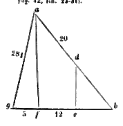

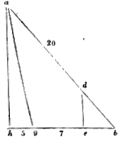
triangle .abg., as was to be shown. And if in any triangle only two sides are proposed as known, and you wish through them to have knowledge of the area and of the other side, as in triangle .abg., whose sides .ab. and .bg. are known, it must first be considered whether the angle contained by the known sides, namely angle .abg., is right, or less, or greater than a right angle. First let it be right; wherefore straight line .ab. is a cathetus upon straight line .bg. Therefore from the product of .ab. into half of .bg. comes the area of triangle .abg.; and if we take together into one the squares of the known lines .ab. and .bg., there will come the known square of line .ag., whose root will be had for line .ag. But if the angle at .abg. is less than a right angle, then you will take on line .ab. some point, which let be .d.; from which upon line .bg. let cathetus .de. be drawn and let the sides of triangle .deb. be measured; and if the ratio .be. to .bg. is equal to the ratio .bd. to .ba., the angle at .g. will be right; because line .ed. is equidistant to side .ag.: wherefore if from the square of side .ab. the square of side .bg. is taken away, the square of side .ag. will remain known: or because line .de. is equidistant to line .ag., it will be proportionally as .bd. to .ba., so .ed. to .ga.: wherefore if we multiply side .ba. into .ed., and divide the sum by .db., surely side .ag. will come forth known. For the sake of example: let side .ab. be .20., and .bg. .12.; and let angle .abg. be less than a right angle; and let .bd. be 5 perticas, and .de. be .4., and .eb. three: therefore as .bd. is to .ba., namely as .5. to .20., so .3. to .12., that is .be. to .bg.: wherefore straight line .de. is equidistant to straight line .ag.; wherefore the angle at .agb. is right, since the angle at .deb. is right: wherefore if from the square of side .ab. the square of side .bg. is taken away, namely .144. from .400., there will remain .256. for the square of side .ag.; whose root, namely .16., is the length of side .ag.: or if we multiply .ba. into .ed., namely .20. by .4., and divide the sum by .db., namely by .5., surely there will come .16. for side .ag.; half of which multiplied by .gb., namely .8. by .12., there will come .96. for the area of the triangle. And if the ratio .be. to .bg. is less than the ratio .bd. to .ba., as is seen in this other triangle, then the angle at .agb. will be less than a right angle: wherefore triangle .abg. will be acute-angled; and from point .a. the cathetus will fall between .bg.; whence we may have its casus, as .bd. to .ba., so .be. to .bf.; and let .af. be joined, because it will be the cathetus upon straight line .bg. For the sake of example: let again .ab. be .20., and .bg. .17., and .bf. will be .12.; since as .bd. is to .ba., so .be. is to .bf.: wherefore through those things that have been said, you will find cathetus .af. to be .16.; whose square, namely .256., if we add with the square of line .fg., namely with .25., there will be had .281. for the square of line .ag.: and if we multiply half of cathetus .af. into the whole .gb., there will come .136. for the area of triangle .abg. And if the ratio .be. to .bg. is greater than the ratio .bd. to .ba., the angle at .agb. will be greater than a right angle; whence the cathetus from point .a. will fall outside triangle .abg. Wherefore let line .bg. be produced to point .h.; and let .be. be to .bh. as .bd. to .ba.; and let .ah. be joined, which will be the cathetus upon line .hb. For the sake of example: let side .ab. be .20., and .bg. let be .7., and .bd. .5., and let .be. be .3., and .de. be .4.; wherefore .bh. will be .12.: which you will find if you divide the multiplication from .be. into .ba. by .db.; since .be. is to .bh. as .bd. is to .ba.: and again .ed. will be to .ah. as .bd. is to .ba. Wherefore having divided the multiplication of .de. into .ba. by .db., there will come .16. for cathetus .ah.: and if from .bh., namely from 12, .bg., namely 7, is taken away, there will remain 5 for casus .gh.; whose square, namely .25., if it is added to the square of line .ah., there will be had .281. for the square of line .ag.: wherefore side .ag. is the root of .281.; and from the product of half of .ah. into .gb. there will come .56. for the area of triangle
f. 0050 · p. 43
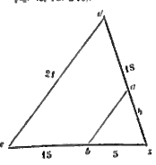

.abg. And if only one side of some triangle is proposed as known, and you wish through it to have knowledge of the remaining sides and of its area, as of triangle .dez., whose side .dz. let be known, I shall take on straight line .dz. some part, which let be .az.; and from point .a. upon straight line .az. I shall draw line .ab. equidistant to line .de.; and I shall measure lines .ab. and .bz., so that the sides of triangle .abz. are known: and because straight line .ab. is equidistant to straight line .de., proportionally as .za. is to .zd., so straight line .zb. is to .ze., and also straight line .ab. to .de. But the ratio .za. to .zd. is known; wherefore sides .de. and .ez. will be known. For the sake of example: let .dz. be .18., and .az. .6., and .ab. be .7., and .bz. be .5.; and thus .zd. is triple of .za.; wherefore .de. will be triple of .ab., and .ez. of .bz. likewise triple: therefore side .de. is .21., and side .ez. is .15.; and since the sides of triangle .dez. are known, its area will be known through those things which were said above. Or let the area of triangle .abz. be had by the aforesaid way, namely let half of its sides be taken, which is .9.; and let us take the difference of the sides, which is up to .9., namely .2., and .3., and .4.; and let us multiply .2. by .3.; the whole of which by .4.; the whole of which by .9., they will be .216.; whose root is the area of triangle .abz.
And since triangle .abz. is similar to triangle .dez., the area of triangle .abz. will be to triangle .dez. as the square of side .za. to the square of side .zd., as Euclid shows: and because side .dz. is triple of .az., the square of line .dz. will be ninefold of the square of line .az.; wherefore the area of triangle .dez. is ninefold of triangle .abz. Wherefore if we multiply .216. by the square of nine, namely by .81., you will have .17496. for the square of the area of triangle .dez.; whose root, which is a little more than 132 1/4, will be had for its area. We said, moreover, that triangle .abz. is similar to triangle .dez., since they have angles equal to one another: for straight line .ab. is equidistant to straight line .de.; wherefore angle .zab. is equal to angle .zde., the exterior to the interior: for the same reason also angle .zba. is equal to angle .zed.; and they also have the angle at .dze. in common; wherefore triangle .abz. is equiangular to triangle .dez.; and thus the triangles themselves are similar.
The common way which surveyors ought to use, and it is sufficient in the measurement of all triangles.
Let the surveyor stand over the greater angle of the triangle, and let him look toward the greater side, where from that angle the cathetus ought to fall; and if he cannot perfectly grasp this by eye, let him have a cord of thread, and fix one end at the angle itself; and let him stretch that thread toward the parts in which the cathetus seems to him to fall; and let him produce it a little beyond the greater side of the triangle; and then let him move that cord around, until on each side with his hand it touches the greater side itself; and let him mark both points of contact, and divide the space between the two into two equal parts, and there will be the fall of the cathetus: then let him measure the cathetus with a rod, and multiply it by the length of half the base, namely by half of the greater side; and he will have the area of the triangle. For the evidence of which let there be triangle .abc. having side .bc. greater than .ab., or than .ac. Wherefore from angle .a. the cathetus is to be directed upon side .bc.; and if side .ab. is equal to side .ac., the cathetus will fall in the middle of side .bc.; if smaller, it will fall toward .b.; and if greater, it will fall toward .c. Hence the surveyor will stand at point .a., and will observe where from that very point .a. it ought to fall upon line .bc.; which done, he will fix the cord at point .a., and will stretch it beyond line .bc. toward side .ab., since it is smaller than side .ac.: and let that cord be .ad.;
f. 0051 · p. 44

he will hold the cord with his hand at point .d., namely a little outside the triangle he will lead that cord toward .c., until point .d. touches line .bc.; and let its point of contact be .e.; wherefore cord .ae. will be cord .ad.: then he will lead the cord toward .b., until point .d. touches line .bc., wherever chance may grant; and let its point of contact be .f., that is, when cord .af. is cord .ad.; and let him divide line .ef. into two equal parts upon point .h.; and from point .a. to point .h. he will draw line .ah. I say that .ah. is a cathetus upon line .bc.; for the reason that line .af. is equal to line .ae., and line .fh. to line .he.; wherefore he will measure with a rod cathetus .ah., and also side .bc.; and he will multiply half of the cathetus by the whole base .bc., or conversely, and he will have the area of triangle .abc. For if the above-written triangle .abc. should be so large, or the cord which he has should become smaller than the cathetus, or the area of the triangle should be planted with vines, or with trees, or full of crops, so that the cathetus cannot be had in the above-written manner; then as many perticas as are in side .ab., so many feet let there be in line .ai.: likewise also as many perticas as are in side .ac., so many feet let there be in line .ak.; and let line .ik. be joined, and let him find the cathetus with the cord, in the above-written way, in triangle .aik.; and let it be .al., and he will produce cathetus .al. in a straight line upon point .m.; indeed line .am. is the cathetus of triangle .abc., as is clearly declared in geometry.
On the proportions and accidents which occur in triangles through the drawing of lines in them.
When two sides of a triangle are known, and in them a straight line is drawn equidistant to the remaining side, and the segments of one side are known, then the segments of the other will be known, and the drawn line will be known. Let there be triangle .abg., and in it let line .de. be drawn equidistant to base .bg., and cutting sides .ab. and .ag.; and let .ad. be 4, and .bd. 9, and .ag. 15, and .bg. 14. I say that the segments .ae. and .eg. will be known.
Since line .de. is equidistant to line .bg., the sides of the triangle are cut proportionally, as Euclid shows in the sixth book. For as .ad. is to .db., so .ae. is to .eg. Therefore as .4. is to .9., so .ae. is to .eg. Likewise they will be proportional compoundedly, as .ad. is to .ab., so .ae. is to .ag., namely as .4. is to .13., so .ae. is to .ag., namely to .15. Wherefore the multiplication of .4. into .15. is as the multiplication of .13. into line .ae.: therefore having divided .60. by .13., there come 4 8/13 for line .ae.; which having been subtracted from .ag., namely from .15., there remain 10 5/13 for line .eg. Or otherwise, because alternately it is as .ab., namely .13., to .db., namely .9., so .ag., namely .15., is to .eg. Wherefore if we divide nine times .15., namely .135., by .13., surely we shall arrive at the same 10 5/13 for line .eg.; or because as .4. is to .9., so .ae. is to .eg.: line .ag. is to be divided into .4. and .9., namely into .13. parts, and there will be for line .ae. 4/13 of the whole .ag.; and for line .eg. there will be 9/13 likewise of .ag.: wherefore having taken 4/13 and 9/13 of .15., we shall have the above-said 4 8/13 and 10 5/13. But let .ad. be 4, and .db. 9, and .ae. 4 8/13; and let .eg. be unknown. Since as .4. is to .9., so 4 8/13 are to .eg.: therefore you will multiply .9. by 4 8/13; and you will divide by .4., there will come out 10 5/13 for line .eg.: and if we do not know line .ae. only, .4. will have to be multiplied by 10 5/13, and divided by .9.; because as .bd. is to .da., so .ge. is to .ea. Likewise we shall demonstrate that line .de. is known; since it is equidistant to line .bg., triangle .ade. will be similar to that which is .abg. Wherefore about equal angles the sides are proportional: therefore as .ad. is to .de., so .ab. is to .bg. Wherefore if the multiplication of .ad. into .bg., namely of .4. into .14., is divided by .ab., there will come out 4 4/13 for line .de., which was to be shown.
f. 0052 · p. 45
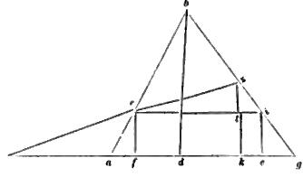
We wish to find the quantity of a line drawn and terminated at known endpoints of two sides of a triangle, which is not equidistant to the remaining side. Let there be the same triangle .bag.; and let line .ez. be drawn. And let .eb. be two thirds of line .ba., and let .z. be in the middle of .bg.: therefore .be. is 8 2/3, there remains .ea. 4 1/3: we wish therefore to know the quantity of .ez.: let cathetus .bd. be drawn, which above we demonstrated to be .12.; and the lesser casus .ad. is 5; the greater also .dg. is .9.; and through point .e. equidistant to base .ag. let .ei. be drawn; and through point .z. equidistant to cathetus .bd. let .ztk. be drawn. And since line .zk. is equidistant to line .bd., as .zg. is to .gb., so .gk. is to .gd., and .zk. to .bd.: but .gz. is half of .gb. Wherefore .gk. is half of .gd. and .zk. is half of .bd.
Therefore .gk. is 4 1/2, and .kd. remains as much, and .zk. is .6. Again let .ef. be drawn equidistant to cathetus .bd.; and it will be as .ae. is to .ab., so .af. is to .ad., and .ef. to .bd. Wherefore .af. is 1 2/3, there remains .fd. 3 1/3, and .ef. is .4., namely the third part of .bd. And since lines .ef. and .tk. are equidistant to cathetus .bd., they are also equidistant to one another, and they join the equidistant lines .et. and .fk.; wherefore .tk. is equal to .ef., and .et. to line .fk. But .fk. is equal to the two, which are .kd. and .df., that is 4 1/2 and 3 1/3. Wherefore the whole .kf. is 7 5/6. Therefore .te. is 7 5/6. Likewise .tk. is 4, since it is equal to .ef., there remains .tz. 2. And since upon the two equidistant lines .ei. and .ag. straight line .zk. falls; the exterior angle .zte. is equal to the opposite and interior one .zkf. But .zkf. is right, since that which is at .bdk. is right, therefore right also is that which is at .zte. Therefore triangle .zte. is right-angled; and two sides are known, namely those which contain the right angle. Wherefore the third side, namely .ez., will be known, as we said before; since its square is equal to the two squares of lines .zt. and .te. For the square of .zt. is .4., and of .te. is .61., and a third, and a thirty-sixth part of one; which added with .4. will yield 65 13/36 for the square of line .ez.; whose root, which is a little more than 8 1/12, is the quantity of line .ez.; which was to be shown. We can however arrive in another way at the knowledge of lines .zt. and .te. For triangle .zti. is similar to triangle .bdg. on account of straight line .ti., which is equidistant to line .dg., and .zt. to line .bd.: for side .zi. is similar to side .bg.; and .it. to side .gd.; the remaining .zt. is similar to the remaining .bd.: therefore as .zi. is to .bg., so .it. is to .gd., and .zt. to .bd.: for .gi. is the third part of .gb.; and .gz. is half of .gb. Wherefore .iz. is the sixth part of .gb., namely 1/6. Therefore .zt. is the sixth of .bd., namely .2.; and .it. is the sixth of .gd., namely 1 1/2; which extracted from .ie., which is 9 1/3, there remains .te. 7 5/6, as we said before.
Otherwise let .ic. be drawn equidistant to line .bd.; and triangle .icg. will be similar to triangles
f. 0053 · p. 46
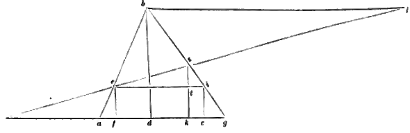
.bdg. and .zti.: therefore as .gi. is to .gb., so .gc. is to .gd., and .ic. to .bd. For .gi. is the third part of .gb.; and .gc. is the third of .gd.; and .ic. is likewise the third of .bd.: therefore .gi. is 5, and .gc. 3, and .ic. 4. And since triangle .zti. is similar to triangle .icg., as .zi. is to .ig., so .ti. is to .cg.: for .gi. is half of .ig.; wherefore .it. is half of .gc. and .zt. is half of .ic.; which was to be shown.
But if we produce lines .ze. and .ga. outside the triangle to point .h., and wish to know the quantity of lines .ah. and .eh., we shall multiply line .te. into .ef., and divide the product by .zt., and we shall have line .fh.; and this we shall do because triangle .zte. is similar to triangle .efh.: for .te. is equidistant to straight line .gh.; and upon them falls straight line .zh. the exterior angle which is at .zet. is equal to the interior and opposite one which is at .ehf.; and angle .zte. is equal to the angle which is at .efh., since both are right. Moreover the remaining one which is at .tze. is equal to the remaining one which is at .feh. Wherefore as .zt. is to .te., so .ef. is to .fh. Wherefore the multiplication of .te. into .ef. divided by .zt. yields line .fh. Or because alternately it is as .zt. to .ef., so .te. is to .fh. For .zt. is half of .ef.; wherefore .te. is half of .fh., that is, .fh. is double .te. But .te. is 7 5/6; wherefore .fh. is 15 2/3; from which having subtracted .fa., there remains .ah. 14. Again, as .zt. is to .ef., so .ze. is to .eh. Wherefore it is double .ez. But because .ez. is surd, we shall take the proportion in their squares, namely as the square of line .zt. is to the square of line .ef., that is, as 4 is to 16, so the square of line .ze. is to the square of line .eh. Wherefore the square of line .eh. is quadruple the square of line .ez. Or add into one the squares of lines .ef. and .fh.; and there will come the square of line .eh. Otherwise let line .hz. be drawn outside the triangle until it meets line .bl. at point .l.; and let .bl. be equidistant to line .hg. And since upon the equidistant lines .bl. and .hg. line .hl. falls, the angle at .elb. is equal to that at .zhg.; and the angle at .lbz. is equal to that at .zgh.; the remaining ones at .z. are equal to one another, which are vertical. Therefore triangle .lbz. is similar to triangle .hgz. Wherefore as .gz. is to .zb., so .hg. is to .bl.: for .gz. is equal to .zb.; and .hg. is equal to .bl. Again, since triangles .leb. and .eha. are similar, indeed as .ae. is to .eb., so .ah. is to .bl., that is, to .hg.: for .ae. is the third part of .ab. Wherefore .ae. is half of .eb.; and .ha. will be half of .bl., that is, of .hg.; there remains .ag. half of .hg. Wherefore .ha. is equal to .ag. But .ag. is .14.; wherefore .ah. will likewise be .14.; and each of the straight lines .hg. and .bl. will be .28. For if we wish to have the union of lines .ze. and .eh.; because as .zt. is to .ef., so .ze. is to .eh. But .zt. is to .ef. as half of .zt. is to half of .ef., that is, as .1. is to .2. Let a certain straight line .mno. lie adjacent;
f. 0054 · p. 47
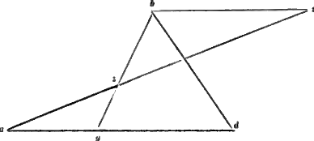

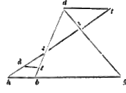
and let .mn. be .1., and let .no. be .2. And because as .mn. is to .no., so .ze. is to .eh., compoundedly they will also be proportional; and it will be as .mn. is to .mo., so .ez. is to .zh. Wherefore as the square of line .mn. is to the square of line .mo., that is, as .1. is to .9., so the square of line .ze. is to the square of line .zh. Wherefore the square of line .zh. will be ninefold the square of line .ze. Wherefore if we multiply by .9. 65 13/36, which are the square of line .ze., we shall have 588 1/4 for the square of line .zh.
Otherwise, because triangle .zkh. is right-angled having the angle at .k. [right], let the squares of lines .zk. and .kh. be joined together, and we shall have the square of line .zh. For .kd. was found above to be 4 1/2, and .da. 5, and .ah. 14: wherefore the whole .kh. is 23 1/2; whose square is 552 1/4; and the square of line .zk. is .36.; and thus we have for the square of line .zh. 588 1/4, as we said before. Again let there be triangle .bgd., whose side .bg., as we said, let be .13., .gd. 14, and .bd. 15; and let .gd. be sent out to point .a., and let .ga. be 10; and upon .gb. let point .z. be taken, and let .gz. be 5, there will remain .zb. 8. It is asked: if .az. is drawn and sent out as far as .e., how great will be the quantity of the segments .de. and .eb.? Let there be drawn through point .b. line .bi. equidistant to line .gd.; and let line .ae. be sent out to point .i., and there will be two triangles .bzi. and .azg. similar to one another. Wherefore as .ag. is to .gz., so .ib. is to .bz. But .ag. is double .gz.; wherefore .ib. will be .16., namely double .bz. Again, because triangle .aed. is similar to triangle .eib., as .ad. is to .bi., so .de. is to .eb. For .ad. to .bi. is as the eighth part of .ad. to the eighth part of .bi.: for .3. is the eighth of .ad., and .2. is the eighth of .bi.; therefore as .3. is to .2., so .de. is to .eb.; and compoundedly they will be proportional.
Wherefore as .3. is to .5., so .de. is to .db. Wherefore .de. is 3/5 of .db., namely .9., and .eb. .6.; which was to be shown. Let therefore the portions .bz., and .zg., and .be., and .ed. be known; and let them be as above-written, and let the triangle be the same; and let .ag. and .bi. be unknown: first indeed because as .de. is to .eb., namely as .3. is to .2., so .ad. is to .bi. Therefore .ad. is once .bi., and half of it. Again, because as .gz. is to .zb., namely as .5. is to .8., so .ag. is to .bi. Therefore .ag. is 5/8 of .bi.: indeed the whole .ad. was found to be twelve eighths of .bi.; since the whole .ad. is once .bi., and half of it. Wherefore having subtracted 5/8 from 12/8, there remains .gd. 7/8 of .bi. Therefore as .7. is to .8., so .gd. is to .bi. Wherefore having multiplied .8. by .14., namely by .gd., and divided the product by .7., Or multiply the seventh of .14., namely .2., by .8., there will come out .16. for line .bi.; from which .16. having taken 5/8, there will come out .10. for line .ag. Again let there be the same triangle .abg.; and outside it let point .d. be taken, which is not in a straight line with line .bg.; and through point .d. let line .de. be drawn
f. 0055 · p. 48


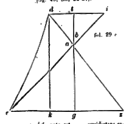

equidistant to base .bg.; and let .de. and .bg. be known, there will remain .ea. known; since the whole .ab. is known. And let a known point .z. be taken in .ab.; and let .dz. be joined; and let it be sent out to point .i. I say that the proportion of .gi. to .ia. will be known; let the figure be completed. And since triangle .dze. is similar to triangle .zat., as .ez. is to .za.; whose proportion is known, so known .de. is to .at. Wherefore .at. will be known. Again, since triangles .hzb. and .zat. are similar, as .az. is to .zb., which are known, so known .at. is to .bh. Wherefore .bh. will be known, and .bg. is given; therefore the whole .hg. is known. And since triangles .hig. and .iat. are similar, as known .hg. is to known .at., so .gi. is to .ia.: therefore the proportion of .gi. to .ia. is known, as was to be shown. Again let there be a known triangle .gab., whose cathetus let be .gd.; and let a known point .e. be taken in it; and through points .ae. let line .aez. be drawn. I say indeed that the proportion of .bz. to .zg. will be known: let therefore line .gi. be drawn equidistant to line .ab.; and let .az. be produced to .i., and triangles .aed. and .ieg. will be similar to one another. Wherefore as .de. is to .eg., so .ad. is to .gi.; therefore .gi. will be known, since .ad. is known; to which .gi. straight line .ab. has the proportion, as .bz. to .zg.: therefore the proportion of .bz. to .zg. is known; which was to be shown.
And if the point through which the line from the angle passes is by no means on the cathetus, as in triangle .dez., in which point .a. is given on line .dg., which is not a cathetus, through which point passes line .eab.; and let the proportion of .ga. to .ad. be known, and also let .ge. be known. I say indeed that the proportion of .zb. to .bd. is known: with the same things arranged. Let the figure be completed; and since as known .ga. is to known .ad., so known .eg. is to .di. Wherefore .di. will be known; and as known .ez. is to known .di., so .zb. is to .bd.: therefore the proportion of .zb. to .bd. is known, as was to be shown. And if the proportion of the segments of a line passing through the given point .a., which is equidistant to the cathetus, should be known, which line is terminated on one side upon the base at point .g., and on the other upon line .di. at point .t., as in this other figure is seen. I say again that the proportion of .zb. to .bd. is known. Since triangle .eag. is similar to that which is .ait., as .ga. is to .at., so .eg. is to .ti.: let cathetus .dk. be drawn in triangle .dez., and .dt. will be equal to .gk., because quadrilateral .dg. is a parallelogram. Wherefore if to line .ti. there is added the equal of line .gk., namely .td., the whole .di. will be known: and since as .ez. is to .di., so .zb. is to .bd., wherefore the proportion of .zb. to .bd. is known, as we said before. And if the given point within the triangle is between the cathetus and the angle, from which through the point a line is extended to the side subtending that angle, likewise the segments of that side will be known. And let there be in triangle .abg., whose cathetus is .ad., a given point .e.; and from point .b. through .e. line .bez. is drawn.
I say again, the segments .gz. and .za. will be known: let line .it. be drawn through point .a. equidistant to line .bg.; and let line .bt. be completed, and through point .e. equidistant to cathetus .ad. let .hi. be drawn; and let the proportion of .he. to .ei. be known; and let the sides of triangle .abg. be known, and also let line .bh. be known: and since the sides of triangle .abg. are known, the casus .bd. will also be known; from which if known .bh. is subtracted, the remaining .hd. will be known. Wherefore .ia. is also known, since it is equal to .hd. on account of parallelogram .id.; and because triangles .beh. and .eit. are similar, as .he. is to .ei., so .bh. is to .it.; therefore .it. will be known; from which if .ia. is taken away, .at. will remain known. And since as .bg. is to .at., so .gz. is to .za., therefore the segments .gz. to .za. will be known, as we said before. Likewise if through a given point within the triangle from a given point on one of the sides of the triangle a line is drawn as far as one
f. 0056 · p. 49
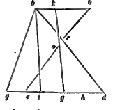


of the sides of the triangle, the proportion of the division of that side will be found. For the sake of example: in triangle .bdg. let there be a given point, a known point .e. on base .gd.; and within the triangle let there be a given point .a., likewise known on line .zk., which is equidistant to cathetus .bi.; and through points .ea. let line .et. be drawn. I say that the proportion of .dt. to .tb. is known: let the figure be completed. And since line .zk. is equidistant to cathetus .bi., and .bk. is equidistant to .iz.; therefore .bk. is equal to straight line .iz. and .zk. to cathetus .bi.: since that is known, .zk. will also be known, and .za. is known, there remains .ak. known: and since as .za. is to .ak., so .ez. is to .kh., therefore .kh. is known: to which if .kb., namely .zi., which is posited to be known, is added, .bh. will be known. And since triangles .etd. and .tbh. are similar, as .ed. is to .bh., so .dt. is to .tb.; which was to be shown. Again let there be triangle .abg., whose .ab. let be .13., and .bg. 14, and .ag. 15; whose cathetus .ad. is .12.; and let point .d. be taken outside the triangle, from which let straight line .az. be drawn equidistant to cathetus .ad.; and let .ez. be 2, and .zb. 1; wherefore .zd. will be .4.: and let point .i. again be taken within the triangle; and let .it. be 3; and let it be equidistant to cathetus .ad.; and let .tz. be 9; and through points .ei. let line .eik. be drawn. I say that the proportion of .gk. to .ka. is known: let line .al. be drawn equidistant to base .bg.; and let .ek. be sent out to point .l., and .i. to points .h. and .m.; and let .tm. be equal to .ez.; and let .em. be joined; and since straight lines .ez. and .it. are equidistant to cathetus .ad., straight line .tm. will be equidistant to straight line .ze., and they are equal to one another, straight line .em. will be equal and equidistant to straight line .zt.: therefore .em. is .9.; and it is equidistant to straight line .al.; and .th. is .12., since it is equal to .ad.: therefore the whole .mh. is .14.: for .mi. is 5, there remains .ih. 9; therefore as .mi. is to .ih., so .em. is to .hl.; that is, as .5. is to .9., so .9. is to .hl.; therefore .hl. is 16 1/5. Wherefore the whole .al. is 21 1/5. Again, because .ez. is equidistant to straight line .ti., triangles .enz. and .int. are similar. Wherefore as .ti. is to .ez., so .tn. is to .nz. Wherefore .tn. is 5 2/5. Or otherwise: because triangles .nit. and .lih. are similar to one another, as .ti. is to .ih., that is, as .3. is to .9., so .nt. is to .hl.; therefore .nt. is a third of .hl., namely 5 2/5: to which if .tg. is added, .ng. will be 9 2/5; and as .ng. is to .al., so .gk. is to .ka.: for .al. is 21 1/5, which are .106. fifths, and in .gn. there are .47. fifths; therefore as .47. is to the sum of .47. and .106., namely to .153., so .gk. is to .ga., namely to .15.: wherefore as .47. is to the third of .153., namely to .51., so .gk. is to the third of .15., namely to .5. Wherefore if we multiply .5. by .47., and divide the product by .51., there will come out 4 31/51 for line .gk. Indeed the remainder up to .15., namely 10 20/51, will remain for .ka. Otherwise let lines .em. and .ag. be sent out to .o., it will be as .eo. is to .al., so .ek. is to .ka.: by this proportion indeed we shall find .ak., and then we shall have .kg.; which was to be shown.
For the knowledge of .go. and of .oe. will be had from the premise; because triangle .agd. is similar to triangle .afo. Again, if we wish to have knowledge of point .c., through which line .el. cuts cathetus .ad., because triangle .ncd. is similar to triangle .lca., as .nd. is to .al., namely as two fifths are to themselves, and to .106. fifths, namely as 2 are to .106., so .dc. is to .da. Wherefore .dc. is 2/9 of one whole, there remains .ca. 11 7/9. Or if we draw cathetus .nx., it will be as .ex. is to .xn., so .nd. is to .dc.: for .ef. is equal to .dz., and .dn. is equal to .fx. Wherefore .ex. is known.
Again let .ge. be in place of .ez. in this other figure, and let it be 2; indeed the sides of the triangle and the cathetus, and also line .ti., let be where we said before; and let angle .egt. be right. Wherefore it will be equidistant to straight lines .it. and .ad.: and let line .ef. be drawn through points .ei. We wish therefore
f. 0057 · p. 50
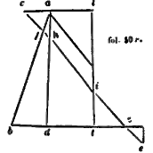

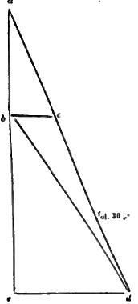
to know the segments of lines .gb. and .ad., and also .ab. Let line .ef. indeed be sent out to point .c., and line .ti. to point .l.; and let .cal. be joined; and let it be equidistant to line .bg.; and it will be as .eg. is to .ti., so .gz. is to .zt. Wherefore as .eg. and .ti. are to .ti., that is, as .5. is to .3., so .gt. is to .zt.: therefore .zt. will be 2 2/5, since .gt. is .4. Again, as .ti. is to .il., so .zt. is to .tc. Wherefore .lc. is 7 1/5; from which having subtracted .la., there remains .ac. 2 1/5. Again, as .td. is to itself and to .ac., so .dh. is to .da. Wherefore .dh. is 9 1/4, there remains .ha. 2 3/4. Again, because as .zb. is to itself and to .ac., so .bf. is to .ba.; therefore .bf. will be 11 3/73; the remaining .fa. 1 70/73.
In a right-angled triangle of known sides, let the side subtending the right angle be drawn outside the triangle through a known length; and from the end of that line to the right angle let a straight line be produced, that line also will be known. For example: let there be a right-angled triangle .abc. of known sides, having angle .abc. right; and let side .ac. be sent out beyond the triangle to point .d.; and let the whole .ad. be known; and from point .d. to point .b. let straight line .bd. be drawn. I say that line .db. is known; which is proved thus. I shall produce straight line .ab. in a straight direction indefinitely through point .e.; and through point .d. I shall draw straight line .de. equidistant to line .bc.; and angle .aed. will be right; since it is equal to angle .abc.: because when a straight line falls upon two equidistant straight lines, the interior angle will be equal to the exterior and opposite one. For upon the equidistant lines .bc. and .ed. straight line .ae. falls; wherefore angle .aed. is equal to angle .abc. On account of the same things therefore also angle .ade. is equal to angle .acb.; and the angle at .a. is common. Wherefore triangles .abc. and .aed. are equiangular, and similar to one another.
Indeed similar triangles have proportional sides about equal angles. Wherefore as .ac. is to .cb., so .ad. is to .de.: alternately therefore as known .ad. is to known .ac., so .ed. is to known .bc. Wherefore straight line .ed. will be known. Likewise as .ad. is to .ac., so .ae. is to known .ab. Wherefore straight line .ae. will be known: from which if known straight line .ab. is taken away, straight line .be. will remain known; whose square if added with the square of line .de., there will come out the square of line .bd. known: and thus it is shown that line .bd. is known, as I said before. From this figure indeed issues the solution of the under-written question proposed to me by a certain Veronese, who proposed that a certain tree stood erect near the bank of a certain river; and the length of the tree was .40. feet: which length I set as line .bg.; and the space that was from the foot of the tree as far as the river, he posited to be .5. feet; which space I set as line .bc.; and in the tree .bg. a certain point .a. was taken; and .ba. was .10. feet; and at point .a. the tree was cut, and the upper part .ag. fell, which was .30. feet, upon line .ad. touching point .c.; and line .ad. was 30: he asked how great was the quantity of line .db. going out from the point of the top of the tree as far as the point of its foot. Hence when I wished to solve this question, I understood the above-written figure; and I added together the squares of lines .ba. and .bc., that is .100. and .25., and had .125. for the square of line .ac.: and because as .ad. was to .ac., so .ed. to .bc., it was as the square of line .ad. to the square of line .ac., that is, as .900. to .125., so the square of line .ed. to the square of line .bc., which is .25. But the proportion of .900. to .125. in smallest numbers is as .36. to .5.; therefore as .36. is to .5., so the square of line .ed. to .25.: alternately therefore .36. was to the square of line .ed., as .5. to .25. But .5. is the fifth part of .25.; wherefore .36. was 1/5 of the square of line .ed. Wherefore I multiplied .36. by .5., and had .180. for the square of line .ed.: which square I subtracted from the square of line .ad., namely from
f. 0058 · p. 51
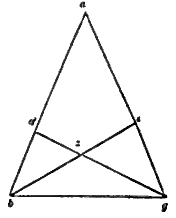
.900., there remained .720. for the square of line .ae.: or otherwise, because as .ad. is to .ac., so .ae. is to .ab.: therefore as .36. was to .5., so the square of line .ea. is to the square of line .ba., that is, to .100.: wherefore alternately as .5. is to .100., so .36. is to the square of line .ae. Wherefore .36. is to be multiplied by .20., because .5. is 1/20 of .100.; and likewise .720. is had for the square of line .ae.; therefore .ae. was the root of .720.: from which I subtracted line .ab., which is .10., there remained to me the root of .720. minus .10. for line .eb.: which I multiplied into itself, and had .820. minus the root of .288000. for the square of line .eb.; to which I added the square of line .ed., which is .180., and had .1000. minus the root of .288000. for the square of line .bd. Wherefore .bd. is the root of .1000. minus the root of .288000. And in order to reduce this to a rational number, I took the root of .288000., which I found to be 536 2/3 minus 1/90; which also I subtracted from .1000., there remained 463 31/90: of which also I took the root, and I had 21 1/2, and one fortieth of one foot for the quantity of line .bd. Nor also is it to be omitted to demonstrate the way of having the square of line .eb., which is called a recisum, or abscission, or remainder; since it is the difference which is between two lines commensurable in power only, namely between straight lines .ae. and .ab.; of which .ae. is the root of a rational number, namely of .720., and .ab., which is .10., is a number. And since straight line .ae. is divided into two at point .b., the squares of lines .ae. and .ab. are equal to double the multiplication of .ab. into .ae., and the square of line .eb., as was demonstrated above: therefore if from the squares of lines .ae. and .ab., namely from .720. and from .100., that is, from .820., there is taken away double the multiplication of .ab. into .ae., which double is equal to .20. roots of .720., which are also equal to one root of the number coming from the multiplication of the square of .20., that is of .400., into .720.; and which number is .288000., there will remain .820. minus the root of .288000., as I demonstrated above. Again, if in triangle .abg. from angles .g. and .b. straight lines .be. and .gd. go out intersecting one another upon point .z., and the proportion of .ge. to .ea. is known, and of .bd. to .da., then the proportions .bz. to .ze. and .gz. to .zd. will surely be known. But before we can demonstrate these things, it behooves us to treat of the composition of proportions from two, or more proportions. For that proportion is called compounded which comes from the multiplication of all the antecedents to the product of all the consequents of two or more proportions. For example: from the proportion which .2. has to .3., and from that which .4. has to 5, is compounded the proportion of .8. to .15.; since from the multiplication of .2. into .4. comes .8., and from .3. into .5. comes .15. Again from the proportion which .2. has to .3. and .4. to .5. and .6. to .7. is compounded the proportion which .48. has to .105.: since from the product of all the antecedents comes .48., namely from .2. into .4. multiplied into .6.; and from the product of the consequents, namely from .3. into .5. led into .7., comes .105.; but the proportion of .48. to .105. is in smallest numbers that which .16. has to .35. And the understanding of such composition is that between .16. and .35. fall three numbers in the above-written proportions, namely as .2. to .3., so .16. to .24.; and as .4. to .5., so .24. to .30.; and as .6. to .7., so .30. to .35. From these indeed proceeds the composition of the proportion of two quantities or two numbers: when between those quantities some quantity is cast, the proportion of the first quantity to the second will then be compounded of the proportion which the first quantity has to the cast one, and of that which the cast quantity has to the second. Whose example let us set in numbers: let .7. be cast between .3. and .10. I say that the proportion of .3. to .10. is compounded of that which .3. has to .7., and that which
f. 0059 · p. 52
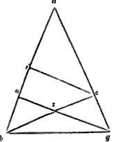
.7. has to .10. For the multiplication of the antecedents to the product of the consequents becomes as .3. to .10.; for if we multiply together the antecedents, namely .3. by .7., there will come .21.: and if we multiply together the consequents, namely .7. by .10., there will come .70.: indeed the proportion of .21. to .70. is the proportion of the seventh part of .21. to the seventh part of .70.; and it is that which .3. has to .10., as we said. Likewise between two quantities two or more quantities can be cast; and the proportion of those two quantities will be compounded of those proportions: as if between .3. and .10. are cast .5., and .6., and .7., the proportion of .3. to .10. will be compounded of the proportion which .3. has to .5., and of those which .5. has to .6., and .6. to .7., and .7. to .10.
With these things very well understood, it behooves us also to demonstrate how from a given proportion some proportion may also be extracted: as if from the proportion which .7. has to .8. you wish to extract the proportion which .6. has to .5.; you will multiply the antecedent of the proportion from which the proportion is to be extracted by the consequent of the proportion to be extracted, namely .7. by .5., there will come .35. for the antecedent of the remaining proportion: and you will multiply the antecedent of the proportion to be extracted by the consequent from which the proportion is extracted, namely .6. by .8., they will be for the consequent of the remaining question: therefore if from the proportion which .7. has to .8. the proportion of .6. to .5. is taken away, there will surely remain the proportion of .35. to .48. Hence if we add the proportions which 6 has to 5, and 35 to 48, there will come the proportion which .210. has to .240.; and it is the very same which the thirtieth part of one has to the thirtieth part of the other, namely .7. to .8. With these things therefore understood, it behooves us to show, before we return to what was proposed, how the proportion which in the above-written triangle .abg. straight line .ga. has to .ea. is compounded of the proportion which the whole reflex line .gd. has to its part .zd., and of the proportion which .bz. has to .be.; and this is the demonstration which is called cata coniunctum: from point .e. indeed let straight line .ei. be drawn equidistant to line .gd., as is shown in this other figure; and triangle .aie. will be similar to triangle .adg. Wherefore it will be as .ga. is to .ae., so .gd. is to .ei.: let therefore straight line .zd. be cast between .gd. and .ei.; and through those things which we said above, the proportion of .gd. to .ei. will be compounded of the proportion of .gd. to .dz. and of .dz. to .ei. But the proportion of .zd. to .ei. is as the proportion of .bz. to .be., since triangle .bzd. is similar to triangle .bei., since .zd. is equidistant to straight line .ei.: therefore the proportion of .gd. to .ei. is compounded of the proportion of .gd. to .dz. and .bz. to .be. But the proportion of .gd. to .ei. is as the proportion of .ga. to .ae.; therefore the proportion of .ga. to .ae. is compounded, as we said, of the proportion of .gd. to .dz. and of the proportion of .bz. to .be. I say again that the proportion of .ga. to .ae. is compounded of the proportion of reflex line .gd. to reflex line .be., and of that which .bz. has to .zd.; since the proportion of .gd. to .ei. is equal to the proportion of .ga. to .ae. If between the proportion which .gd. has to .ei. straight line .be. is cast, the proportion of straight line .ga. to .ae. will be compounded of the proportion which .gd. has to .be., and .be. to .ei. But the proportion of .be. to .ei. is as the proportion of .bz. to .zd.; therefore the proportion of .ga. to .ae. is compounded of the proportion of .gd. to .be., and of .bz. to .zd.; which was to be shown.
For it always happens that, when some proportion is compounded of two proportions, that very same proportion will also be compounded of the proportion of the antecedents to the permuted consequents. For example: the proportion of .8. to .15. is compounded of the proportion which .2. has to .3., and .4. to .5.; the proportion of .8. to .15. will also be compounded of the permuted proportions, namely of that which .2. has to .5., and of that which
f. 0060 · p. 53

.4. has to .3.; because the multiplication of .3. into .5. is equal to the multiplication of .5. into .3.; and .3. and .5. are consequents in each composition, and .2. and .4. are antecedents. In a similar way also it will be shown that the proportion of .ba. to .ad. is compounded of the proportion of .be. to .ez., and of that which .gz. has to .gd., if we draw within the triangle from point .d. a line equidistant to line .be.; and thus from the proportion which .ga. has to .ae. one combination of compounded proportions has been shown. Again I say that the proportion of .bd. to .da. is compounded of the proportion of .bz. to .ze., and of the proportion of .ge. to .ga.; which is proved thus: from point .a. indeed let straight line .at. be drawn equidistant to line .be., as is seen in this other figure, which is called cata disiunctum; and let straight line .gd. be sent out as far as point .t.; and because straight lines .at. and .zb. are equidistant, and upon them falls straight line .ab., the angle at .tad. is equal to the angle at .dbz.: on account of the same things also the angle at .atd. is equal to the angle at .dzb.; and the angles at .d., since they are vertical, are equal to one another: therefore triangles .atd. and .dbz. are equiangular, and about equal angles they have proportional sides: wherefore it will be as .db. is to .bz., so .da. is to .at.: alternately therefore as .bd. is to .da., so .bz. is to .at.: let us therefore cast straight line .ze. between .zb. and .at.; then the proportion of .bz. to .at., that is the proportion of .bd. to .da., will be compounded of the proportion which .bz. has to .ze., and of that which .ze. has to .at., that is, .ge. to .ga.; since triangle .gez. is similar to triangle .gat.: therefore the proportion of .bd. to .da. is compounded of the proportion of .bz. to .ze., and .ge. to .ga. Or the proportion of .bd. to .da. is compounded of the proportion of .bz. to .ga., and of the proportion of .ge. to .ez.; which is shown thus: between .bz. and .at. let straight line .ga. be cast, indeed the proportion of .bz. to .at. will be compounded of the proportion of .bz. to .ga., and of the proportion of .ga. to .at. But the proportion of .ga. to .at. is as the proportion of .ge. to .ez.; therefore the proportion of .bz. to .at., that is the proportion of .bd. to .db., is compounded of the proportion of .bz. to .ga., and of the proportion of .ge. to .ez.; which was to be shown. And thus one combination of the composition of the proportion of .bd. to .da. has been shown. Likewise it will be shown that the proportion of .ge. to .ea. is compounded of the proportion of .gz. to .zd., and of the proportion of .bd. to .ba.: if we draw from point .a. a line equidistant to line .gd., and join it with line .be. Now let us return to what was proposed; and I shall show that if the proportions .ge. to .ea., and .bd. to .da. are known, then surely the proportions .bz. to .ze. and .gz. to .zd. will be known. Since therefore the known proportion which .ge. has to .ea. is compounded of the proportion which .gz. has to .zd., and of the proportion which .bd. has to .ba., if from the proportion which .ge. has to .ea. the proportion .bd. to .ba. is taken away, which is known, the proportion .gz. to .zd. will remain known. Likewise if from the proportion which .bd. has to .da. the proportion .ge. to .ga. is taken away, the proportion .bz. to .ze. will remain known: so that all these things may be seen more clearly, let us set line .ag. to be 16, and line .ab. to be .15.; and let .ge. be the third part of .ea.; and let .bd. be half of .da.; therefore the proportion of .ge. to .ea. will be as 1 to 3: from which if the proportion of .bd. to .ba. is extracted, namely that which 1 has to 3, there will remain the proportion .gz. to .zd., as .3. to .3.; wherefore straight line .gz. is equal to straight line .zd.; and thus the proportion of .gz. to .zd. is found to be known. Likewise if from the proportion which .1. has to .2., namely .bd. to .da., we extract the proportion which .1. has to .4., namely .ge. to .ga., there will remain the proportion which .2. has to .1., in the proportion .bz. to .ze. And although the proportions of the segments of the reflex lines are known, yet we cannot have the lengths of the reflex lines themselves except through knowledge of the base; which let us set to be the root of .97.; and let us strive upon side
f. 0061 · p. 54
.ag. to find the casus of the perpendicular falling upon it from angle .b.; and we shall find it to be, through those things which were demonstrated in the finding of casus, point .e.; wherefore straight line .be. is a cathetus upon straight line .ag. Therefore triangles .beg. and .eba. are right-angled: wherefore if the square of side .eg., which is .16., is taken away from the square of line .bg., namely from .97., there will remain .81. for the square of line .be.; wherefore straight line .be. is .9.: and because .bz. to .ze. is as .2. to .1., if we compound the proportion .bz. to .ze., we shall find it as .3. to .1. Wherefore straight line .be. is triple straight line .ze.: wherefore since .be. is .9., .ze. will be 3, and .zb. will be .6. Again, that we may find the length of straight line .gd., we shall make a cathetus fall from point .g. upon line .ab., which let be line .gk.; and the casus .bk. will be known through those things which we demonstrated in the finding of casus: wherefore .kd. will remain known, and it will be 2 4/5: whence if from the square of line .gb. we subtract the square of line .bk., which [line] is 2 1/5, there will remain for the square of line .gk. 92 4/25; to which if we add the square of line .dk., namely .8. minus 4/25, there will come .100. for the square of line .gd.; therefore line .gd. is .10.: wherefore each of the straight lines .gz. and .zd. is .5., since both have been found equal to one another. Again without the base let the figure of the above-said triangle be repeated, I say that the proportion of .gd. to .dz. is compounded of the two proportions of lines .ga. to .ae., and .be. to .zb.; which is proved thus. At point .z. indeed I shall draw line .zi. equidistant to line .ga.; and triangle .dzi. will be similar to triangle .dga.; wherefore proportionally as .gd. is to .dz., so .ga. is to .zi.: and let .ae. be cast between .ga. and .zi.; and the proportion of .ga. to .zi. will be compounded of the proportion of .ga. to .ae., and of .ae. to .iz. But the proportion of .ea. to .zi. is as the proportion of .eb. to .bz., since triangle .bzi. is similar to triangle .bea.; therefore the proportion of .ga. to .zi., that is the proportion of .gd. to .dz., is compounded of the proportion of .ga. to .ae., and of the proportion of .eb. to .bz.; which was to be shown. From this therefore it is manifest, that when the proportion of two quantities is compounded of the proportion of the third quantity to the fourth, and of the proportion of the fifth quantity to the sixth; then the proportion of the third quantity to the fourth will be compounded of the proportion of the first quantity to the second, and of the sixth to the fifth: for the proportion of the first quantity .ag. to the second .ae. was compounded of two proportions, namely of that which the third quantity .gd. has to the fourth .zd., and of the proportion of the fifth .bz. to the sixth .be.: now we have found the proportion of the third quantity .gd. to the fourth .zd. to be compounded of the proportion of the first quantity .ga. to the second .ae., and of the proportion of the sixth quantity .be. to the fifth .bz. I shall show again in the same figure that the proportion of .gd. to .dz. is compounded of the proportion of .ga. to .zb., and of the proportion which .be. has to .ae.; which is proved thus: for as .gd. is to .dz., so .ga. is to .zi.: let straight line .zb. lie between .ea. and .zi.; and the proportion of .ga. to .zi. will be compounded of .ga. to .zb., and of .zb. to .zi.: but the proportion of .bz. to .zi. is as the proportion of .be. to .ea.; therefore the proportion of .ga. to .zi., namely the proportion of .gd. to .dz., is compounded of the proportion of .ga. to .bz., and of the proportion of .be. to .ea., as we said before: and thus in this figure another combination of proportions has been shown. For there are eighteen combinations of proportions, which can be shown in this cata figure, and which also I demonstrated in my book on the rule of baractum. But because from these is gathered only the science of having knowledge of some unknown quantity through knowledge of five known quantities; from which six quantities the proportion of one to another is compounded of two proportions of the remaining four quantities, I do not care to show the remaining combinations.
f. 0062 · p. 55But how we ought to arrive at knowledge of an unknown quantity through five known quantities, I have taken care to demonstrate in order with the above-written numbers. Let therefore the proportion of the first quantity .a. to the second .b. be compounded of the proportion of the third quantity .g. to the fourth .d., and of the proportion of the fifth .e. to the sixth .z.; and let quantity .a. be unknown: and because the proportion of .a. to .b. comes from the proportion of the product of the antecedents of the two remaining proportions to the product of the two consequents of the same, the multiplication of the product of those antecedents into quantity .b. will be equal to the multiplication of those consequents into quantity .a. Wherefore if we multiply the multiplication of .e. into .g., which are the antecedent quantities, by quantity .b.; and divide the product by the product from the multiplication of .d. into .z., which are the consequents, surely quantity .a. comes forth known. For example: let .a. be 16, and let .b. be .12., and let .g. be .10., and let .d. be .5., and let .e. be .6., and let .z. be .9.; and let .6. be multiplied by .10., namely .e. into .g., there will come .60.; which led into .b., namely into .12., there will come .720. Likewise if we multiply .9. by .5., and all that by .16., there will come .720.: therefore since the multiplication of .e. into .g. led into .b. is equal to the multiplication of .z. into .d. led into .a., if by the multiplication of .z. into .d. we divide the product from the multiplication of .e. into .g. led into .b., namely .720. by .45., surely .16. will come forth for quantity .a. But if quantity .b. is unknown, and the remaining five quantities are known, we shall divide .720., which come from .9. multiplied into .5., all of which into .16., by .60., which come from .6. multiplied into .10., there will come .12. for quantity .b. But let quantity .g. be unknown; we shall divide again .720., which come from .a. into .d. and into .z., by the product of .b. into .e., namely by .72., there will come .10. for quantity .g. But let only quantity .d. be unknown; we shall divide again .720., which come from .e. led into .g., all of which into .b., by the product of .a. into .z., namely .144., there will come .5. for quantity .d.
Again let only quantity .e. be unknown; we shall divide again .720., which come from .z. into .d. and into .a., by the product of quantities .b. and .g., namely by .120., there will come .6. for quantity .e. Finally let quantity .z. be unknown, and let the remaining quantities be known; again .720., which come from .e. into .g. led into .b., will be divided by the product of .a. into .d., namely by .80., there will come .9. for quantity .z. And it is to be noted that quantities .a., .d., .z. are called the first partnerships; while the remaining three quantities, namely .b., .g., .e., are called the second partnerships. Indeed the proportion of any one quantity of the first partnership to any one of the second is compounded of two proportions of the remaining four quantities, according to one combination, namely the proportion of quantity .a., which is from the partnership of the first quantity, to quantity .b., which is from the second partnership, is compounded of two proportions of the remaining four quantities, namely of the proportion which .g. has to .d., and of that which .e. has to .z., according to what has been demonstrated: or the proportion of .a. to .b. is compounded of the proportion which .g. has to .z., and .e. to .d. Again the proportion of quantity .a. to quantity .g. is compounded of the proportions .b. to .d. and .e. to .z., or of the proportion which .b. has to .z. and .e. to .d. Also the proportion of quantity .a. to quantity .e. is compounded of the proportions .b. to .z. and .g. to .d., or of the proportions .b. to .d. and .g. to .z. In a similar way also is compounded the proportion of quantities .d. and .z., which are from the first partnership, to the three remaining quantities from the proportions of the four remaining quantities; and thus there are nine
f. 0063 · p. 56proportions compounded from the three quantities of the first partnership to the three quantities of the second partnership: and in the same way there will issue nine other compositions of proportion from the quantities of the second partnership to the three quantities of the first partnership; and each of those compositions will come forth combined; and thus among all there will be eighteen combinations of proportions in those six quantities: and although the proportions are changed, yet the aforesaid partnerships are not changed [in name]: wherefore the product of each partnership will be 720, as we found above; and it is that which proceeds from the antecedent of the compounded proportion into the consequents of the compositions. For none of the six aforesaid quantities will be able to have a proportion to any from its own partnership compounded of the proportion of the remaining four quantities, namely the proportion of quantity .a. to quantity .d., or to quantity .z., cannot be compounded of the proportions of the remaining four quantities; nor even is the proportion of quantity .d. to quantity .z. or to quantity .z. compounded; nor can the proportion of quantity .z. to quantity .d. or .a. be compounded from the remaining four quantities.
Likewise the proportion of quantities .b., .g., .e. among themselves will not be compounded, since they are of one partnership; and thus there will be twelve proportions in these six quantities which will not be compounded from two proportions of the remaining four quantities. With these things therefore explained, let us come to the mention of quadrilateral fields.
Quadrilaterals & Multi-Angular Polygons¶
Latin Locus: De Campis Quadrilateris et Multangulis (pp. 56–87) · Commentary: Notes on Quadrilaterals
Here begins the second part of the third distinction, on the measurement of quadrilaterals.
The areas indeed of quadrilateral fields having right angles are gathered according to what we taught above in another distinction. When these have equal sides, one of the sides is multiplied into itself; and when they have unequal sides, their lengths are multiplied by their breadths; and thus we have their area. Now the remaining quadrilaterals are divided into four classes; in the first of which are rhombuses, in the second rhomboids, in the third capita abscissa, in the fourth are diuersilatera, none of whose sides is parallel to the remaining ones; the measurements of all of which will be clearly shown in their own place. But before we come to the dimensions of the quadrilaterals themselves, certain things concerning the above-written quadrilaterals, which to the knowledge of this art introduce the mind, I have proposed to demonstrate. These pertain to the solution of the six rules which come from the three essences that are in numbers. For numbers and their fractions are either roots of squares, or squares, or simple numbers. When numbers are multiplied into themselves, they are called roots; the products made from the multiplication are called squares, or census. But when numbers have no respect to roots or to square numbers, then they are simply called numbers. Wherefore according to this distinction every number is at times a root, or a square, or simple. For from these three essences three simple rules and as many composite ones arise. For the simple ones occur when in arithmetic or geometric questions roots are found to be equated to squares, or squares to a number, or parts of one square to be equated to roots, or to a number; or when a number is equated to roots, or to squares, and conversely. Composite indeed are when roots are found to be equated to squares and a number, or squares to roots and a number, or a number to roots and census. Now a square which is equated to roots is as if you say: a square is equated to four roots; the root therefore
f. 0064 · p. 57
of the square is .4., and the square is .16.; that is, the side of the square, equilateral, and equiangular surface is .4., and its area is .16. For as many units as are in each of its sides, so many roots are contained in its area, as is shown in this quadrilateral .abcd., which has in each of its sides .4. perticas. Wherefore its area is equal to four roots, of which one is quadrilateral .ae.; the second .zt.; the third .ik.; the fourth quadrilateral .lk.cd.: and if the side of the square is .5., it will be equated to roots; and the square will be .25. And when it is said: four squares are equal to .24. roots, then one square is equal to six roots; and each root is .6., and the square is .36.: and when it is said: half of a square, or census, is equal to four roots, then the census will be equal to .8. roots; and the census will be .64., and its root will be .8. Likewise the fifth part of a square is equal to three roots; therefore the square, namely its area, is equal to .15. roots. Wherefore the area is .225., and the side of the square is .15. Similarly also whatever is greater or less than a square is to be reduced to one square. And in the same manner it is done when roots are equal to census, the roots are to be found which are equal to one census. Likewise when it is said: a square is equal to a number, as if we say .36. perticas; then the area is .36., and its side is .6.: and when five squares are equal to .125., then the square is .25., and its root is .5.: or when the fourth part of a square is equal according to arithmetic to .16. dragmas; then the census, namely the square, will be .64., and its root is .8.
Similarly every census augmented and diminished is to be reduced to one census. And in the same manner it is done when a number is equal to census. Now roots which are equal to numbers are as if you say: a root is equal to four; therefore the root is .4., and the census which is from it is .16.: and as if you say: six roots are equal to .30.; one root therefore is equal to .5.: and similarly if you say: half of a root is equal to .9.; therefore the root is .18., and the census which is from it is .324. Roots indeed which are equal to squares and a number are as if you say: .36. roots are equal to three census and .105. dragmas; this is .12. roots are equal to one census and .35. dragmas: and if you say: .5. roots are equal to half a census and .12. dragmas; this is .10. roots are equal to one census and .24. dragmas. Now squares which are equal to roots and a number are as if you say: three squares are equal to .12. roots and .36. dragmas; this is one census is equal to .4. roots and .12. dragmas: and if you say: a quarter of a census is equal to two roots and .12. dragmas; that is, a square is equal to eight roots and .48. dragmas. Also a number which is equal to squares and roots is as if you say: .78. dragmas are equal to two squares and .10. roots; that is, one square and .5. roots are equal to 39. And if you say: .32 are equal to half a square and six roots; this is one
f. 0065 · p. 58
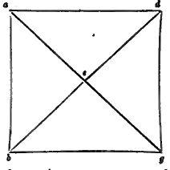

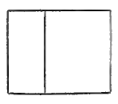
square, and twelve roots are equal to .64. dragmas: and thus we ought always to reduce questions to one census; and according to that which falls proportionally as the reduction of several squares, or parts of one square, to one square, in the same proportion are the roots and numbers to be reduced which are proposed with the squares or against them, so that we may come to the knowledge of squares and their roots, as we shall show in what follows. If indeed in square .abgd., which in each of its sides has .10. perticas, you desire to have its diameter .ag. or .bd., double its area, namely .100., there will be .200.; take the root of which, and you will have the length of one of the diameters. For example: since the angle is right which is under .abg., triangle .abg. is right-angled; wherefore the multiplication of side .ag., which is subtended under the right angle, into itself is equal to the two squares of lines .ab. and .bg. But the square of side .bg. is the area of tetragon .abgd.; and the square of side .ab. is equal to the square of side .bg.; wherefore the two squares of lines .ab. and .bg. are double the square of side .bg. But the square of diameter .ag. is equal to the squares of lines .ab. and .bg.; therefore the square of diameter .ag. is double the square of side .bg.; but the square of side .bg. is the area of tetragon .abgd.; therefore the square of side .ag. is double the area of tetragon .abgd.; which was to be shown.
And this is that in which a census is equal to a number, namely the area is equal to 100. Wherefore double the area, namely the square of the diameter, will be 200. I say again that diameter .ag. is equal to diameter .bd.; since straight line .bg. is equal to straight line .ad. If commonly straight line .ad. is taken, the two straight lines .ab. and .bg. will be equal to the two straight lines .ba. and .ad.; and angle .abg. is equal to angle .bad.: wherefore diameter .ag. is equal to diameter .bd. I say again that diameters .ag. and .bd. cut one another into equal parts upon point .e. Since straight lines .ad. and .bg. are equal to one another, and at their ends are joined straight lines .ab. and .gd., which are equal to one another, straight lines .ad. and .bg. will indeed be parallel: and since upon them fall straight lines .bd. and .ag., angle .adb. is equal to angle .dbg., and angle .dag. to angle .agb.; the remaining .aed. is equal to the remaining .beg. Wherefore triangle .aed. is equal to triangle .beg., and straight line .be. is equal to straight line .ed. Similarly also straight line .ge. is equal to straight line .ae.; therefore diameters .ag. and .bd. cut one another into equal parts; which was to be shown. For if the diameter of a given tetragon is the root of two hundred, and you do not know the area nor its side, take half of .200., there will be .100., which you have for the area; and their root, namely .10., you will have for
f. 0066 · p. 59
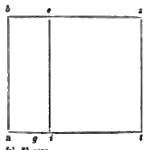

the side; that is, two squares are equal to .200.: wherefore one square, namely the area of the tetragon, will be .100. And if the square of the diameter with the area of the tetragon make .300.; therefore three squares are equal to .300.; wherefore the third part of them, namely .100., will be the area. The remaining .200. indeed will be had for the square of the diameter; and the root of the area will be the side of the tetragon. And if the area and four of its sides make .140.; and you wish to separate the sides from the area. Let tetragon .ezit. lie adjacent, and let rectangular surface .ae. be added to it; and let .ai. be in a straight line with straight line .it., and .be. in a straight line with .ez.; and let each of straight lines .be. and .ai. be .4. on account of the number of sides of the tetragon; wherefore surface .ae. is equal to four sides of tetragon .et., since its side .ei. is one of the sides of surface .ae.; and surface .et. indeed contains the area of tetragon .zi., and also its four sides; therefore surface .za. is .140.; and this is what we said, namely a census with four roots are equal to .140.; and the census is tetragon .et., four of its roots are surface .ae. Let straight line .ai. indeed be divided into two equal parts upon point .g.; and since line .ti. has been added to line .ai., the rectangular surface .it. into .at. with the square of line .gi. will be equal to the tetragon of line .gt. But surface .it. into .at. is as surface .zt. into .at., since .it. is equal to .tz. Therefore surface .zt. into .at. with the square of line .gi. is equal to the square of line .gt. But .zt. into .at. is surface .za., which is .140.; to which, when the square of line .gi., namely .4., is added, they return .144. for the square of line .gt.; wherefore .gt. is .12., namely the root of .144. Wherefore if from .gt. there is left .gi., namely .2., there will remain .it. .10., which is the side of tetragon .et.; to whose area, namely .100., if four of its sides are added, which are .40., there will be .140., as is fitting. And thus let it be done in all questions in which a number is equal to a square and roots, namely upon the number itself let the square of half the roots be added, and let the root of the sum be found; from which let half of the posited roots be taken away, there will remain the root of the sought census; which multiplied into itself will make the census. For example: .133. dragmas are equal to one census and twelve roots. Wherefore if we add the square of half the roots, namely .36., upon .133., they will make .169.; of whose root, namely .13., when .6., namely half of the roots, has been subtracted, there will remain .7. for the root of the sought census; and the census will be .49.
Likewise there is a tetragon, from whose area if four of its sides are taken away, there remain .77. Let tetragon .bd. lie adjacent, and let point .a. be taken on straight line .gd.; and let .ga. be .4. perticas; and through point .a. let straight line .az. be produced parallel to either of straight lines .gb. and .de.: and since .ga. is .4., surface .ba. must necessarily contain four sides, namely .4. roots from tetragon .bd. Wherefore if from tetragon .bd. quadrilateral .ba. is extracted, namely four of its sides, surface .zd. will remain 77. And since the two surfaces .ba. and .zd. are equal to tetragon .bd.; therefore the census is equal to roots and a number, that is, square .bd. is equal to .4. of its roots and .77. And let .ga. be divided into two equal parts. And since straight line .ga. has been divided into two equal parts upon point .i., and to it has been joined in a straight line straight line .ad., the multiplication of .ad. into .gd. with the square of line .ai. will be equal to the square of line .di. But the multiplication of .ad. into .dg. is as the multiplication of .da. into .de., since .de. is equal to line .dg. But .da. into .de. is surface .zd., which is .77.; therefore .da. into .de. makes .77.: to which if the square of line .ai. is added, which is .4., there will be .81. for the square of line .di., whose root, namely .9., is line .di.: to which if line .ig. is added, .11. will be had for side .dg. Wherefore the area of square .bd. is eleven times eleven,
f. 0067 · p. 60

namely .121.; and four of its sides, namely surface .ba., is .44., surface .zd. remains 77, as was fitting. And thus is to be done in all questions in which a square is equal to roots and a number; namely upon the number let the square of half the roots be added; and from the collected sum let the root be taken, and to it let half of the roots be added; and thus will be had the root of the square, which multiplied into itself will make the sought square: as if it is proposed that a census is equal to ten roots and .39. dragmas, let the square of five roots, namely .25., be added upon .39., there will be .64.; upon whose root, namely upon .8., let half of the roots be added, namely .5., and you will have .13. for the root of the census; and the census will be .169.; and its ten roots are .130., which are produced from the multiplication of .10. into 13. Likewise there is a tetragon, whose area if it be taken away from the sum of its four sides, namely from its four roots, there will remain .3. perticas. Let tetragon .ge. lie adjacent, having in each of its sides less than .4. perticas; and let line .da. lie adjacent to .de.; and let the whole .ae. be 4; and let .ae. be divided into two equal parts upon point .b.; and let straight line .az. be drawn parallel and equal to .dg.; and let .fg. be drawn to point .z.; and since straight line .ae. is 4, and .ef. is the side of tetragon .ge.: therefore .fe. into .ea., namely surface .ze., will be equal to four roots, namely the sides of tetragon .ge.: from which if tetragon .ge. is taken away, surface .ga. remains 3. perticas. But tetragon .ge. and surface .ga. are equal to surface .ze.; therefore four roots are equal to a census and three perticas: it is fitting therefore that we find the census and its root. Since line .ae., which is .4., has been divided into two equal parts upon point .b., and into two unequal parts upon point .d., the multiplication of .ed. into .da. with the square of line .bd. will be equal to the square of line .be., which is described from half of line .ae. But from the multiplication of .ed. into .da. arises surface .ga., which is .3.; since .dg. is equal to .de.; therefore surface .gd. into .da. with the square of line .bd. is equal to the square of line .be., which is .4.; therefore the square .bd. is .1.; whose root, namely .1., if it is taken away from line .be., there will remain .de. .1., which is the side of tetragon .ge.; whose area, namely the sought census, will likewise be .1. And if the half of line .ag. is between .de. upon point .b., as is seen in this other figure; add upon .eb., namely upon .2., line .bd., and the whole .de. will be 3., which is the root of the sought square .ge.; and the square will be .9.; and surface .ga. will likewise be .3., as we said before. And thus let it always be done in all questions in which roots are equal to a square and a number. Namely, from the square of half the roots let the number be taken away, and for the remainder let the root be found, which let be taken away from the said half, or added upon it, and you will have the root of the sought square. As in this in which it is proposed that twelve roots are equal to one square and .27. dragmas: half therefore of the roots is .6., whose square is .36.; from which .27. being extracted, there remain .9.; whose root, namely .3., if it be extracted from half of the roots, there will remain .3. for the sought root; and the census will be .9.: or if .3. are added upon .6., you will have .9. for the sought root; and the square will be 81: and thus always, when roots are equal to a census and a number, questions are solved in two ways. Whence in certain questions sometimes one solution falls, sometimes another. Likewise the square of the diameter and the area, and also the four sides of a given tetragon, are equal to 279 perticas; and the quantity of the side of the tetragon is sought. Since the square of the diameter is double the tetragon; therefore the square of the diameter with the tetragon will be triple the tetragon; and three squares and four roots are equal to 279. Wherefore, so that you may reduce these to one census, take the third
f. 0068 · p. 61
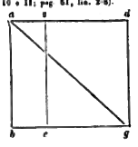
from all the aforesaid, and you will find that a census and 1 1/3 roots are equal to 93 perticas. Take therefore half of the roots, namely 2/3, and multiply them into themselves, there will be 4/9; which add with 93, there will be 93 4/9; from whose root take away 2/3, namely half of the roots, there remains 9 for the side of the tetragon; therefore the area is 81, and the square of the diameter is 162. Again, four sides of a tetragon are equal to 2/9 of the whole tetragon. Let tetragon .abgd. lie adjacent; and on .bg. and .ad. straight lines let points .e. and .z. be taken; and let each of straight lines .be. and .az. be 4 perticas; and let straight line .ez. be joined, and .ae. and .zg. will be parallelograms between parallels .ad. and .bg.: wherefore as parallelogram .ae. is to parallelogram .zg., so base .be. is to base .eg. But parallelogram .ae. is equal to four roots of tetragon .ag.; therefore parallelogram .ae. is 2/9 of tetragon .ag.; there remains therefore parallelogram .zg. 7/9 of tetragon .ag.; therefore surface .ae. to surface .zg. is as .2. to 7. Wherefore as .2. is to 7., so .be., namely .4., is to .eg. Wherefore multiply .4. by .7, and divide by .2., there will come out .14. for line .eg.: or otherwise since .4. is double 2., so straight line .eg. is double .7.; therefore .eg. is .14.; to which having added .4., namely .eb., you will have .18. for .bg., namely for the side of tetragon .ag.; which was to be shown. Or otherwise according to the computation of algebra, since surface .ae. is equal to four roots, or 2/9 of tetragon .ag.; therefore four roots are equal to 2/9 of a census. Whence, so that the census may be made whole again, multiply .9. by 4., and divide by .2.; or multiply half of .9. by .4. Because as many times as two ninths are in .9. ninths, namely in the census, so many times .4. will be in the root of tetragon .ag. Wherefore square .ag. is equal to .18. roots, as we said before; and .324. perticas are contained in its area. Again, .4. sides and 3/8 of the area of a tetragon are equal to 77 1/2. Wherefore reduce 3/8 of a census to one census, and you will have that a census and 10 2/3. roots are equal to 206 2/3.: and this we shall find by multiplying the .4. roots and 77 1/2 by 8., and dividing each multiplication by .3. Halve therefore the roots, there will be 5 1/3.; take whose square, which is 28 4/9.; which number add with 206 2/3., there will be 235 1/9.; from whose root, namely from 15 1/3., subtract half of the roots, there remain .10. for the side of the tetragon; and the area is .100. And if four of its sides are equal to the area of the tetragon, then four of its roots are equal to the census. Wherefore each side is .4., and the census is .16. And if the sides were double the area, then four roots would be equal to two census; therefore the side of the tetragon would be .2., and the area would be .4. Likewise if from the area of a tetragon three sides are taken away, namely three of its roots, there remain .40., therefore three roots and .40. are equal to the census. Multiply indeed half of the roots into itself, there will be 2 1/4.; which add upon .40., there will be 42 1/4.; upon whose root, namely upon 6 1/2., add half of the roots, there will be .8., which is the side of the tetragon. Likewise I divided the area of a square by its diameter, and there came out .10., how great is the diameter and its side? Since from the division of the area by the diameter there comes out .10.; therefore from the multiplication of the diameter into .10. there comes out the area. Wherefore from the multiplication of the diameter into double .10. there will come out double the area. But double the area is equal to the square of the diameter; therefore from the multiplication of the diameter into .20. there comes out the square of the diameter. But from the multiplication of the diameter into itself there comes out the same square. Wherefore the diameter is .20., and its square .400.; and the area is half of it, namely .200.: the side also is the root of .200., which is a little less than 14 1/7. Likewise when four sides are taken away from the area let .4. remain; how great therefore is its side? Let tetragon .abgd. lie adjacent; and let points .e. and .z. be taken; and let each of straight lines .az. and .de. be 4.; and let .ze. be joined.
f. 0069 · p. 62


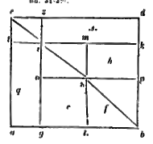
Surface .dz. will therefore be equal to four sides of tetragon .db., therefore surface .eb. remains 4.; therefore four roots and .4. are equal to tetragon .db.: let straight line .az. therefore be divided into two equal parts upon .i.; and the multiplication of .zb. into .ab. with the square of line .iz. will be as the tetragon of line .ib. But .zb. into .ab. is as .zb. into .ze. But .zb. into .ze. makes surface .eb., namely .4.; therefore from .zb. into .ab. there come out .4.; to which having added the square of line .iz., there will be .8. for the square of line .ib.; therefore straight line .ib. is the root of .8.: to which if straight line .ia. is added, namely .2., we shall have .2. and the root of .8. for the whole line .ab., which is the side of tetragon .db.
And if the diameter of a square exceeds each side of the same quadrilateral by .6.; how great will its side be? Multiply therefore .6. into itself, there will be .36.; which double, there will be .72.; upon the root of which add .6., and you will have the side; therefore the side is .6. and the root of seventy-two. For example. Let a certain straight line .ab. lie adjacent, and let it be equal to the diameter of the given quadrilateral; and let its side be .bg., there remains .ga. 6., in which the diameter exceeds the side: and let tetragon .ad. be constructed upon straight line .ab.; and let diameter .eb. be drawn in it; and through point .g. let straight line .gz. be drawn parallel to straight lines .ae. and .bd.; and through point .i. let straight line .tk. be drawn parallel to straight lines .ed. and .ab.: then let point .l. be taken on straight line .bg.; and let .gl. be equal to .ga.; and let the same figure be completed in tetragon .gk.: and since a tetragon is quadrilateral .ad., those which are about its diameter are tetragons, namely .tz. and .gk.: for the side of tetragon .tz. is straight line .ti., which is equal to straight line .ag.; therefore .ti. is .6.; and tetragon .tz. is .36. Likewise quadrilaterals .om. and .lp. are tetragons; for they are about the diameter of tetragon .gk.; and tetragon .om. is equal to tetragon .tz. on account of straight line .on., which is equal to straight line .gl., and .gl. to straight line .ga., and .ga. has been shown to be equal to straight line .ti. And since straight line .bg. is the side of a tetragon whose diameter is .ba.; the tetragon which is described from straight line .ba. is double that which is described from straight line .bg.; therefore tetragon .ad. is double tetragon .gk. Wherefore gnomon .q.r.s. is equal to tetragon .gk.: let tetragon .tz. therefore be taken away from gnomon .q.r.s., and from tetragon .gk. tetragon .om., which are equal, there remain supplements .ai. and .id. equal to gnomon .c.f.h. But supplement .ai. is equal to surface .il.; for it has one common side, which is .ig.; and straight line .lg. indeed is equal to straight line .ga. Similarly also supplement .id. is equal to surface .ip.; therefore the two surfaces .il. and .ip. are equal to gnomon .c.f.h. Wherefore if surfaces .gn. and .nk. are commonly taken away, double tetragon .om. will remain equal to tetragon .lp. But tetragon .om. is .36. Wherefore tetragon .lp. is .72.; whose side, namely .bl., is the root of seventy-two: to which if .lg. is added, which is .6., we shall have for the whole .6. and the root of seventy-two, as was to be shown. To which if .ga. is added, the whole .ag., namely the diameter of the given quadrilateral, will be .12. and the root of seventy-two. Or otherwise, since straight line .ag. is .6.; and .gi. is the side of a tetragon whose diameter is equal to line .ab., on account of this quadrilateral .ai. will be equal to six roots of tetragon .gk.; and quadrilateral .id. is equal to quadrilateral .ai.; therefore quadrilateral .id. is six roots of square .gk.; and square .tz. is .36.: wherefore the whole gnomon .q.r.s. is .36. and .12. roots of tetragon .gk. And gnomon .q.r.s. is equal to tetragon .gk., as has been shown. Whence if we put straight line .bg. as a thing, tetragon .gk. will be a census, which is equal to .12. of its roots and .36. dragmas: operate therefore in this according to what has been said when a census is equal to roots and a number.
f. 0070 · p. 63

Again, I multiplied the diameter by the side, and there came out .100.; how great is therefore the diameter and the side of the tetragon? Since when the diameter is multiplied by the side there comes out .100., if we multiply the square of the diameter by the square of the side, namely by the area of the tetragon, there comes out the square of .100., namely ten thousand. Wherefore if we multiply the square of the diameter by double the area, namely by the square of the diameter, there will come out double of it, namely twenty thousand. Therefore the diameter is the root of the root of twenty thousand. Wherefore the area, since it is half of the square of the diameter, will be the root of five thousand; wherefore the side will be the root of the root of five thousand. Likewise I multiplied the diameter by the area of a tetragon, and there came out .500.; how great is therefore its diameter and side? Since the multiplication of the diameter by the area makes .500.; therefore the multiplication of the diameter by double the area, namely by the square of the diameter, will be .1000.; therefore the diameter is the cube root of .1000. For the root cube of .1000. is .10.; therefore the diameter is .10.; and its square is .100.; and the area is half of it, namely .50.; and the side is the root of .50.
Here ends on the quadrilateral: here begins on the rectangle (parte altera longiori).
Let quadrilateral .abcd., longer on one side, lie adjacent, having in each of its shorter sides, which are .ab. and .dc., .6. perticas: and in its longer sides .ad. and .bc. .8. perticas; and its area is gathered from the multiplication of side .ab. into .bc.; wherefore its area is .48. For if you desire to have its diameter .ac., add the squares of lines .ab. and .bc. into one, namely .36. and 64., there will be .100.; whose root, namely .10., is diameter .ac. Likewise let the diameter be .10., and let side .cb. be .8.; how great is therefore side .ab.: from the square of line .ac. extract the square of line .bc., and there will remain the square of line .ab., and conversely, as we said above in the right-angled triangle. In a similar manner also we shall find diameter .bd. to be .10. on account of the equality of triangles .abc. and .bad. I say indeed that those diameters cut one another into equal parts upon point .e.; for straight lines .ad. and .bc. are parallel; wherefore angle .ade. is equal to angle .ebc.: for the same reason therefore also angle .dae. to angle .ecb. is equal: the remaining .aed. is equal to the remaining .bec.: for triangles .aed. and .bec. are equiangular, and they have sides .ad. and .bc. equal to one another; wherefore the remaining sides to the remaining sides, which subtend equal angles, will be equal to one another; side .be. also to side .ed., and side .ce. to side .ea. And since diameter .ac. is equal to diameter .bd., and they are cut into equal parts upon point .i. Indeed straight lines .ia., .ib., .ic., and .id. are equal to one another: for each of them is .5., namely half of its diameter; which was to be shown. For if the area is .48.; and the short side added with the longer is .14.; and you wish to know how great is the longer or the shorter side; therefore multiply half of .14., namely .7., into itself, there will be .49.; from which take away the area, there remains .1.; add whose root upon .7., there will be .8. for the longer side; from which up to .14. there are lacking .6. for the shorter side. For example: let quadrilateral .b.g.d.e., longer on one side, lie adjacent; and let .bg. be the shorter side, and let .gd. be the longer; and let straight line .bg. be produced to point .a.; and let straight line .ga. be equal to straight line .gd.; and let straight line .ab. be divided into two equal parts upon point .c.; therefore the whole line .ba. will be 14.; wherefore .bc., or .ac., is .7.: and since straight line .ba. has been divided into two equal parts and just as many unequal parts at points .g. and .c., .bg. into .ga. with the square of line .gc. will be equal to the square of line .ca. But .bg. into .ga. is as .bg. into .gd.; and from .bg. into .gd. there comes out the area; therefore .bg. into .ga. is .48.: to which if the square of line .gc. is added,
f. 0071 · p. 64

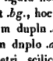
it will make .49.: therefore the square of line .gc. is .1.; whose root, namely .1., is line .gc., which added upon .ac., the whole .ag., namely .gd., will be 8, which is the longer side; therefore .gb. remains 6., as we said before. Likewise let the area be 48 and let the longer side exceed the shorter by the quantity of two. Take half of that two, it will be .1.; add whose square upon .48., there will be .49.; from which take the root, which is .7., and add upon it .1., which was half of the two aforesaid, there will be .8., which is the longer side; from which take away .2., by which the longer side exceeded the shorter, there remain .6.; which we can also grasp in the above-written figure. Let the longer side be as we said before .gd., to which lies equal straight line .ga.; and let straight line .gf. be taken away from straight line .ga., which let be .2.; therefore straight line .af. will be equal to straight line .gb. Let straight line .gf. therefore be divided into two equal parts upon point .c., straight line .ac. will be equal to straight line .cb.; therefore straight line .ab. has been divided into two equal parts upon point .c., and into two unequal parts upon point .g.; and straight line .gc. is .1., which lies between the sections. Therefore the multiplication of .ag. into .gb. with the square of line .gc. is equal to the square of line .ac. But .bg. into .ga. is .48.; and the square from .cg. is .1.; therefore .bg. into .ga. with the square of line .gc. is .49.; whose root, namely .7., is line .ac.: to which if .cg. is added, which is .1., the whole .ag. will be 8., which is the longer side. Likewise if from .cb., which is .7., since it is equal to .ca., .cg. is taken away, there remains .gb. .6., as we said before. Or otherwise: put the shorter side of the two anywhere as a root; and then the longer side will be a root and .2. And since from the multiplication of the shorter side into the longer there comes out .48.; therefore from the multiplication of a root into a root and into .2. there similarly comes out 48. For from the multiplication of a root into a root comes out a census; and from the multiplication of a root into .2. come out two roots; therefore a census and two roots are equal to .48.: do therefore as we said above in those in which census and roots are equal to a number, and you will have what is desired. Likewise let the diameter be .10., and let the area be .48.; how great is therefore each side: upon the square of the diameter add double the area, there will be .196.; whose root, namely .14., is the length of both sides. For example: let quadrilateral .abgd. lie adjacent, whose diameter .ag. let be .10.: let straight line .ab. indeed be produced to point .e.; and let .be. be equal to .bg. And since straight line .ae. is divided into two parts upon point .b., the two squares of portions .ab. and .be. with double .ab. into .be. will be equal to the square of the whole line .ae. But portion .be. is equal to side .bg.; therefore the squares of lines .ab. and .bg. with double .ab. into .bg. are equal to the square of line .ae. But the squares of sides .ab. and .bg. make the square of diameter .ag.; and double .ab. into .bg. makes double the area, namely .96.; which joined with .100. make .196. for the square of line .ae.; therefore .ae. is their root, namely .14., as we said before: after this, so that you may separate .ab. from .bc., namely from .bg., proceed as was said above where we said the area will be .48., and the two sides joined .14. Again let the diameter be .10., and let the two sides joined be .14.; and I wish to know the area, and also each side: multiply therefore .14. into itself, there will be .196.; from which take away the square of the diameter, namely .100., there remains .96.; half of which, namely .48., is the area: after this by the aforesaid things take care to separate the sides. Which are found in the above-written figure in this order: the square of diameter .ag. is equal to the two squares of sides .ab. and .bg., that is, to the squares of portions .ab. and .be. But the squares of portions .ab. and .be. with double .ab. into .be. are equal to the square of line .ae.; therefore the square of diameter .ag. with double .ab. into .be. is equal to the square of line .ae. Wherefore if the square of the diameter, namely .100., is taken away from the square of line .ae., namely from .196.,
f. 0072 · p. 65
there will remain .96. for double .ab. into .be., that is, for double .ab. into .bg.: therefore .ab. into .bg. makes 48., namely half of .96. But .ab. into .bg. makes the area; therefore the area is .48., as we said before: with which in the aforesaid manner you will separate the sides; and the shorter side will be .6., and the longer .8. Again, I joined the diameter with one side, and there came out thence .16.; and the other side is .8. How great is therefore the diameter, and how great is the side joined to it? Multiply .16. into itself, there will be .256.; from which take away the square of the given side, namely .64., there remain .192.; which divide by double .16., there will come out .6., which is the side joined to the diameter; which side take away from .16., there remain .10. for the diameter. For example: let quadrilateral .b.g.d.e. lie adjacent; and let diameter .bd. with side .bg. be .16. perticas; and let side .dg. be .8.: put therefore side .bg. as a root, there remains diameter .db. 16 minus a root; which multiply into itself, you will have .256. and one square minus .32. roots for the square of diameter .bd. But the two squares of sides .bg. and .gd. are equal to the square of diameter .bd.; therefore the squares of sides .bg. and .gd. are equal to 256. and one square of side .bg., when .32. roots have been subtracted thence: restore therefore those roots, and the squares of lines .bg. and .gd. with .32. roots will be equal to .256. and one square of side .bg.: let the square of side .bg. be commonly taken away, there will remain the square of side .gd. with .32. roots equal to .256.: let the square of line .gd., namely .64., be commonly taken away, there will remain 32. roots equal to .192. Behold, we have reduced this question to one of the six rules aforesaid, namely to that in which roots are equal to a number. Wherefore divide .192. by .32., there will come out .6. for the root, that is, for side .bg.; which being extracted from .16., there remain .10. for diameter .bd., as I said before. And if the diameter exceeds the shorter side by .4., and the longer side is .8., how great is therefore the diameter? Multiply .8. into itself, there will be .64.; to which add the multiplication of four into itself, there will be .80.: and double that .4., there will be .8.; by which divide .80., there will be .10. for the quantity of the diameter; from which take away .4., by which the diameter exceeds the shorter side, there will remain .6. for that side. For this question is brought to one of the six rules aforesaid in this manner: first indeed it is manifest that the two squares, namely of the shorter and of the longer side, are equal to the square of the diameter. Wherefore put the diameter as a root, which multiply into itself, it makes the square of the diameter. Likewise for the shorter side put the root of the diameter minus .4.; which multiply into itself, there will come the square of the diameter and .16. minus .8. roots of the diameter for the square of the shorter side; with which add the square of the longer side, you will have the square of the diameter and 80. minus .8. roots of the diameter, which are equal to the square of the diameter. Restore therefore those roots on each side, there will remain the square of the diameter and .80., which are equal to the square of the diameter and .8. roots: take away therefore from each side the square of the diameter, there remain 80., which are equal to .8. roots of the diameter. Wherefore 80 being divided by 8 there will come .10. for the diameter, as I said before. And if from the multiplication of the longer side into the area there comes out 384.; and the shorter side is .6.; and you wish to know how great the area is. Because from the multiplication of the shorter side into the longer comes out the area; and from the multiplication of the area into the longer side comes out .384.; therefore from the multiplication of the shorter side into the square of the longer the same comes out. Wherefore if we divide 384. by .6., namely by the shorter side, there will come out .64. for the square of the longer. Whose root, namely .8., is the longer side. And if it is proposed that the area is .48., and when the greater side is divided by the lesser there comes out 1 1/3.; and you wish to know each side, put the shorter side as .3. on account of 1/3., which is named from it; and multiply .3. by 1 1/3., there will be .4., which put for the greater
f. 0073 · p. 66side. Therefore in whatever ratio .3. is to .4., in the same is the shorter side to the greater: multiply therefore .3. by .4., there will be .12.; by which divide 48., there will come .4.; of which take the root, which is .2.; and multiply by it the posited .3. and 4, and you will have .6. for the shorter side, and .8. for the greater. Or otherwise: multiply 3 by 48, and divide by 4, there will come out .36.; whose root is the shorter side. Likewise multiply .4. by 48, and divide by .3., there will come out .64., whose root is the longer side. And if the lesser side is divided by the greater, and there come out 3/4.; put for the greater side .4. on account of 3/4., which are named from it; and take 3/4. of .4., there will be .3.; which put for the lesser, and do as above, and you will have .6. for the lesser side, and .8. for the greater.
Likewise the shorter side with the diameter is .16.; and the greater side exceeds the lesser side by .2.; and you wish to know how great is the diameter and each side. Since the greater side exceeds the lesser side by .2.; therefore if we add the greater side with the diameter, there will come .18.: multiply therefore .16. into itself, and .18. into itself; and gather their multiplications, there will be .580.; from which take away the square of the two aforesaid, there remain .576.; whose root, namely .24., is the sum of the two sides and the diameter: from which take away the diameter and the shorter side, namely .16., there will remain .8., which is the greater side: from which take away .2., there remain .6. for the shorter side or take .16., namely the greater side and the diameter, from .24. Which if you wish to reduce to the computation of algebra, put the shorter side as a thing, there will remain the diameter .16., except a thing: multiply therefore a thing into a thing, there will come out a census; which you shall gather with the square of the greater side; which square you shall find thus: because the greater side exceeds the lesser by .2.; you shall put that greater side as a thing and two dragmas; which multiply into itself, there will come out a census and .4. roots and .4. dragmas for the square of the longer side: which add with the square of the shorter, namely with a census, there will be two census, namely two squares of the shorter side and .4. roots and .4. dragmas, which are equal to the square of the diameter, namely to the multiplication of 16., except a thing, into itself. Which multiplication is 256 and a census, except thirty-two roots. Restore therefore the roots, there will remain 256 and a census, which are equal to two census and 36 roots and .4. dragmas: take away therefore from each side a census and .4. dragmas, there will remain a census and 36 roots, which are equal to 252.: halve therefore the roots and find the census, according to what we said above, where census and roots are equal to a number. And if the greater side with the diameter is 18.; and the greater exceeds the lesser by .2.; then the lesser side with the diameter would be .16.; with which you will operate as above. Again, two sides with the area rise to 62.; and the greater side exceeds the lesser by .2.; how great is therefore each side: the manner of finding this will be that you subtract .2. from 62., and there will remain .60. Join therefore two to half of the sides, and there will come out .4.; join that therefore to .60., and there will come out .64.: take therefore the root of these, which is .8.; for that is the longer side: but if you wish the shorter, subtract .2. from .8., there will remain 6, which is the shorter side. For example: put the lesser side as a thing, then the greater side will be a thing and two dragmas. From multiplication indeed multiply a thing, namely the lesser side, into a thing and into two dragmas, and you will have a census and two roots for the area: to which if the two sides are added, namely 2 roots and .2. dragmas, there will be a census and 4 roots and 2 dragmas, which are equal to .62. dragmas: take away therefore from each side .2. dragmas, and there remain a census and 4 roots, which are equal to 60 and so forth.
And if the multiplication of the greater side into the diameter is 80., and the shorter side .6., multiply 80 into itself and 6 into itself, there will be .6400 and 36: take therefore the square of half of
f. 0074 · p. 67.36., namely .324.; and add with .6400., there will be .6724.; upon whose root, which is .82., add half of 36., there will be .100.; whose root, namely .10., is the diameter; by which divide 80., there will come .8., which is the longer side: or from .82. subtract .18., there remain .64., whose root is the longer side. But if you wish to reduce these to the computation of algebra; because from the multiplication of the longer side into the diameter there come out 80; therefore from the multiplication of their squares comes out the square of 80., namely .6400. But the square of the diameter is equal to two squares, namely of the longer and of the shorter side; and the square of the shorter side is .36. Therefore from the multiplication of the square of the greater side into itself and into 36 there come out 6400. Wherefore put the square of the greater side as a thing, which multiplied into itself and into .36. makes a census and 36 roots, which are equal to six thousand and four hundred and so forth. Similarly according to this rule you shall do if from the multiplication of the shorter side into the diameter there comes out 60; and the greater side is .8.; then a census and 64. roots will be equal to 3600. Likewise the shorter side with the area make 54.; and the greater side exceeds the lesser by .2. How great is therefore each side? Because from the multiplication of the shorter side into the longer there comes out the area; if we put the shorter side as a thing, the side longer is a thing and two; which if we multiply by a thing, namely by the shorter side, there will come out a census and two roots for the area: to which if we add the shorter side, namely a root, there will be a census and three roots, which are equal to 54.: multiply therefore half of the roots into itself, there will be 2 1/4.; which add with 54, there will be 56 1/4.; from whose root, namely from 7 1/2, take away 1 1/2., there remain .6., which is the shorter side; the greater therefore will be .8.: and if the longer side rises to 56 with the area, and the lesser side is .2. less than the greater; put the greater side as a thing, the lesser side will be a thing, except two: multiply therefore the greater side by the lesser, there will come a census minus two roots; upon which add a root, namely the longer side, there will be a census, one root excepted, which are equal to .56. Restore therefore the root, and oppose it, there will remain a census, which is equal to one root and 56: take indeed half of the root, and multiply it into itself, it will be 1/4.; which add upon 56, there will be 56 1/4.; upon whose root, namely 7 1/2., add half of the root, there will be .8., which is the longer side. But if from the gathering of the 4 sides with the area of a rectangle there come out 76; and the greater side exceeds the lesser by .2.; then put the shorter side as a thing, and the longer side as a thing and two: multiply therefore a thing into a thing and two, there will be a census and two roots, which are equal to the area; with which add two roots for the two shorter sides, and two others for the two longer sides and .4., by which the greater sides exceed the lesser, there will be a census and six roots and 4. dragmas, which are equal to 76.: take away therefore .4. from each side, there will remain a census and six roots, which are equal to .72.: put therefore the square of half the roots upon 72, there will be 81.; from whose root, namely from .9., take away half of the roots, there will remain .6. for the shorter side. But if from the area the shorter side is diminished, and there remain .42.; and the greater side exceeds the lesser by .2.; put therefore the lesser side as a thing, which multiply by a thing and two, namely by the longer side, there will come out a census and two roots, which are equal to the area; from which take away one root, namely the shorter side, there remains a census and a root, which are equal to 42.: put therefore upon 42 the square of half of a root, namely 1/4., there will be 42 1/4.; from whose root, namely from 6 1/2., take away 1/2., there will remain .6., which is the shorter side. And if from the area the greater side is taken away, and there remain .40.; and the greater is two more than the lesser, then it will be manifest that if the lesser side is taken away from
f. 0075 · p. 68
the area, there will remain two more than that which remains when the greater side is taken away from the area; therefore having taken away the lesser side from the area, there remain 42: do therefore as above, and you will have what was proposed, if God wills.
Or otherwise: put the greater side as a thing, and multiply it by the shorter side, namely by a thing, except two, there will be a census, minus two roots, which are equal to the area: subtract therefore thence one root, namely the greater side, there will remain a census, except three roots, which are equal to forty. Restore therefore the roots, and oppose them, and you will have a census, which is equal to three roots and .40. and so forth. Likewise when .4. sides are diminished from the area, there remain .20.; and the greater side exceeds the lesser by .2. How great is therefore each side: put the shorter side as a thing, and the greater as a thing and two. Wherefore .4. sides will be .4. things and 4 dragmas. From the multiplication indeed of a thing into a thing and two there come out a census and two things, which are equal to the area. From which take away 4 sides, namely 4 things and 4 dragmas, there will remain a census minus two things and 4 dragmas, which are equal to 20. Restore therefore the two, namely things, namely .2. roots, and 4 dragmas, there will come a census, which is equal to two roots and 24 dragmas. Halve indeed the roots, it will be .1.; add whose square upon .24., there will be .25.; upon whose root add that same .1., there will be .6., which is the shorter side, and so forth. Likewise if the greater side and the lesser are added with the diameter, and they are as half of the area; and the area is .48.; and you wish to know how great the diameter is, and also each side. Take therefore half of the area, namely .24., which is the sum of the two sides and the diameter; and multiply it into itself, there will be 576.: from which take away double the area, there remain 480; divide half of which by 24., namely by the sum of the joining of the two sides with the diameter, there will come out .10. for the diameter. Or otherwise: double the area, there will be 96.; which divide by 24., there will come .4.; which extract from .24., there remain .20.; half of which you may have for the diameter; which being extracted from 24., there remain .14. for the quantity of the two sides. From this therefore such a question arises. The gathering of the two sides is 14., and the area is .48.: do therefore as was said above: and you will have what was proposed. For if you wish to know whence these things proceed; let a certain straight line .ab. of .24. ells lie adjacent, in which is contained the sum of the joining of the two sides and the diameter; and let .ac. be equal to the greater side of the given rectangle, and .cd. to the lesser; there will remain therefore .bd. equal to the diameter. Let indeed there be constructed upon straight line .ab. tetragon .ae.; and let there be drawn diameter .fb.; and through points .c. and .d. let straight lines .cpig. and .dkmh. be drawn parallel to either of straight lines .af. and .be.; and through points .i. and .k. indeed let straight lines .lim. and .nko. be drawn. Since .ae. is a tetragon, those which are described about its diameter are tetragons; therefore .kdbc. and .knfh. are tetragons. Again because
f. 0076 · p. 69
quadrilateral .nh. is a tetragon, .pimk. and .ilfg. indeed are tetragons; and the side of tetragon .do. is straight line .db. Wherefore tetragon .do. is equal to the square of the diameter; and tetragon .pm. indeed has side straight line .pk., which is equal to straight line .cd., and .cd. is equal to the lesser side. Therefore tetragon .pm. is equal to the tetragon of the lesser side. Similarly it will be shown that tetragon .lg. is equal to the square of the greater side on account of straight lines .fg. and .li., which are equal to straight line .ac.; and .ac. lies equal to the greater side of the given rectangle. And since .pm. is a tetragon, straight line .kp. is equal to straight line .pi.; therefore .pi. is equal to the lesser side, and .il. is equal to the greater. Therefore supplement .ni. is equal to the area of the given quadrilateral; and supplement .ih., as Euclid shows, is equal to supplement .ni. Therefore supplements .ni. and .ih. are double the area of the given rectangle; which supplements are 96.: if they are taken away from the area of tetragon .ae., namely from 576, there will remain tetragons .lg. and .pm., and gnomon .rst. 480. But tetragons .lg. and .pm. are equal to tetragon .do., namely of the diameter; therefore tetragon .do. with gnomon .rst. are .480. But of .do. tetragon and gnomon .rst., half is surface .ao.; therefore surface .ao. is 240., which consists of the product of .ab. into .bo.: therefore if we divide .240. by .ab., namely by .24., there will come .10. for line .ob., namely for line .bd., which is equal to the diameter; therefore the diameter is .10. Or according to the other aforesaid rule when from the square of line .ab., namely from .24. times .24., double the area is taken away, namely supplements .ni. and .ih.; and the area is double the quantity of line .ab.; therefore double the area is quadruple .24.; therefore if from 24. times .24. quadruple .24. is taken away, there will remain .20. times .24. for the area of tetragons .lg. and .pm., and gnomon .rst.; of which surface .ao. contains half, as has been shown. Wherefore surface .ao. consists of .10. times 24.: therefore since .ab. is .24., it follows necessarily that .bo. is .10.; which was to be shown. Likewise the gathering of the two sides with the diameter is .24.; and the greater side exceeds the lesser by .2. How great is therefore each side: double therefore the square of .24., namely .1152.; upon which add the square of the excess by which the greater side exceeds the lesser, namely of two, there will be .1156.; from whose root, namely from .34., take away the aforesaid .24., there remain .10., which is the diameter; from which up to .24. there are lacking .14., which are the two sides: from which .14. take away .2., there remain .12.; half of which, namely .6., is the shorter side. For the demonstration of which rule let tetragon .abcd. lie adjacent, having in each of its sides the quantity of the two sides and the diameter; and let .be. be equal to the greater side, and .ef. to the lesser. There will remain .fc. equal to the diameter: and let diameter .ac. be drawn; and through point .f. let line .fgh. be drawn parallel to either of lines .ba. and .cd.; and through point .g. let straight line .igk. be drawn; and straight line .ig. will be equal to straight line .bf.: and let straight line .gl. be taken away from straight line .gi., which let be equal to straight line .fe.; there remains therefore .li. equal to straight line .eb.; therefore .gl. is equal to the lesser side, and .li. to the greater: let therefore straight line .im. be taken away from .li., namely that by which the greater side exceeds the lesser, there will remain .ml. equal to .lg., namely to the greater side: and let .ad. be drawn out to point .n.; and let .dn. be equal to .fc., namely to the diameter; and let tetragon .nopa. be constructed upon .an.; and since .bd. and .pn. are tetragons, and they are about one angle, that at .a., they are about the same diameter; therefore if diameter .ac. is produced to point .o., then straight line .ao. will come as the diameter. Let straight line .dc. indeed be produced to .q., and straight line .bc. to .r.; therefore .qr. is a tetragon containing in itself the square of the diameter of the given rectangle: the whole tetragon .pn. therefore is equal to tetragon .bd. and gnomon .stu.
f. 0077 · p. 70I shall indeed demonstrate that gnomon .stu. is equal to tetragon .bd., and to the tetragon of line .im., which is the excess by which the greater side exceeds the lesser. For supplements .pc. and .cn. are equal to surfaces .bk. and .fd. But the two surfaces .bk. and .fd. are equal to gnomon .xyz. and tetragon .fk. To which let there be added the equal to tetragon .qr., which is equal to tetragon .fk., double tetragon .fk. with gnomon .xyz. will be equal to gnomon .stu. It remains indeed to be demonstrated that double tetragon .fk. is equal to tetragon .ih. and .ei., which is described from straight line .im.; for straight line .gm. is divided into two equal parts at point .l., to which in a straight line is joined straight line .mi.; therefore the tetragon which is described from straight line .gi., namely tetragon .ih., with that which is described from straight line .im., will be double those which are described from straight lines .gl. and .li. But the tetragons which are described from straight lines .gl. and .li. are equal to tetragon .fk.; wherefore double tetragon .fk. is equal to tetragon .ih. and .ei., which is described from straight line .im.; therefore gnomon .stu. is equal to tetragon .bd., and to the square of the excess of the greater side, as we said before. Now let us come to the reason. We multiplied above .24. by .24., and we had square .bd.; which we doubled, that is, we added upon it its equal; and we added on afterwards .4.; that is, upon square .bd. we added gnomon .s.t.u.; and thus we had .1156. for square .pn., whose side is its root: therefore .po. is 34.; from which having extracted .pq., namely .bc., there remains .qo. 10., to which straight line .cf. is equal; therefore .cf. is .10., as I said before. We can also otherwise come to the knowledge of the aforesaid sides. Namely that you put the lesser side as a thing. And the longer side will be a thing and two; which being extracted from .24., there remain for the diameter .22., except two things. Multiply a thing into itself, there will be a census; and a thing and two into itself, there will be a census and 4. things and four dragmas: which being joined into one, there will be two census and .4. things and .4. dragmas, which are equal to the square of the diameter, namely to the multiplication of 22, except two things, into itself; which multiplication is 4 census and 484, except .88. roots. Restore therefore the roots, and oppose the two census and 4 dragmas, and you will find 92 roots to be equal to two census and 480. Reduce therefore these to one census, and there will be a census and 240, which are equal to 46 roots and so forth. Or put the longer side as a thing, and the shorter side will be a thing minus two; which extract from 24., there remain .26., except two things: and operate thence as above; and you will find a census and 336 to be equal to 50 roots. But if the diameter exceeds the greater side by .2., and the greater the lesser by as much; and you wish to know the diameter and each side. Always when the excesses of the sides are equal, you shall multiply that excess by 5., and you will have the diameter; and it by .4., and you will have the longer side; and it by 3, and you will have the shorter. For example: the excess indeed of the sides is .2.; which being multiplied by .5. and by .4. and by .3., there come out .10. for the diameter, and 8 for the longer side, and 6 for the shorter: and these things happen on account of the rectangle whose longer side is .4., shorter .3., diameter also .5.: the excess indeed of these sides is one. Wherefore as .1. will be to whatever excess you wish, so these three sides will be to the sides of that rectangle of which some excess has been given. For example: if the excess will be .3.; because 3 is triple one, therefore triple will be its sides from the aforesaid sides, namely the diameter will be .15.; the greater side also .12., and the lesser .9. Whence if it is proposed that the diameter is .20.; and you wish to know the excess of the sides, divide .20. by .5., there will come out .4., which is the excess of the sides: which multiply by
f. 0078 · p. 71
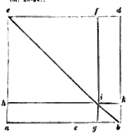
4, and by .3., there will be .16. and 12, which are the sides. Likewise let the longer side be .20.; divide it therefore by .4., because the four is similar to the longer sides and 3 to the shorter and 5 to the diameters. Having divided .20. therefore by .4., there come .5. for the excess; which multiply by .3. and by .5., there will come .15. for the shorter side and 25 for the diameter. Again let the shorter side be .18.: divide it therefore by .3., there will come out .6. for the excess of the sides; which multiply by 4. and by 5., there will come 24 for the longer side, and 30 for the diameter. For if the excesses are unequal, as in the quadrilateral in which it is proposed that the diameter exceeds the greater side by .1., and the greater exceeds the lesser by .7., then we shall work by algebra: we shall indeed set the shorter side to be a thing, and the longer side will be a thing and 7; and the diameter will be a thing and .8.: multiply therefore the thing into the thing, it makes a census. And the thing and .7. into itself makes a census and 14 things and 49 dragmas; which joined together will be two census and 14 things and .49., which are equal to the square of the diameter, namely to the multiplication of one thing and 8 into itself; which multiplication is a census and 16 things and 64.: take away therefore from both parts a census and 14 things and .49., there will remain a census, which is equal to two roots and 15. Wherefore halve the roots, there will come .1.; which multiply into itself, it will be .1.; which add with .15., there will be .16.: upon whose root, namely upon .4., add half of the roots, there will be .5., which are the lesser side: upon which add .7., there will be 12, which are the greater side: upon which add .1., there will be .13., which are the diameter. Likewise the greater side exceeds the lesser by .7.; and the diameter is .13.; how much is therefore each side? Cast therefore the square of the excess from the square of the diameter, namely 49 from 169., there will remain .120.; whose half, namely 60., is the area. For the sake of example: let there lie straight line .ab. equal to the two sides; and let .bg. be equal to the lesser side, there remains .ga. equal to the greater; and let .ac. be 7., by which the greater side .ag. exceeds the lesser .bg.; therefore .gc. is equal to straight line .gb. Let therefore upon straight line .ab. the square .ad. be constructed, and let the figure be completed; indeed the side of square gk. will be straight line .gb., that is .gi.; the side also of square hf. is straight line .hi. or .if., which are equal to straight line .ag.: the complement therefore .ai. is equal to the given quadrilateral, because it consists of straight lines .ag. and .gi., which are equal to the two sides of the given quadrilateral. And complement .id. is equal to complement .ai.; therefore complements .ai. and .id. are double the area of the given quadrilateral; therefore double the area with squares .hf. and gk. is equal to square .ad. But the two squares .hf. and .gk. are equal to the square of the diameter; therefore complements .ai. and .id. with the square of the diameter of the given oblong are equal to square .ad. But square .ad. together with that which is described upon straight line .ac. is double the squares which are described upon straight lines .ag. and .gb. But those which are described upon straight lines .ag. and .gb. are equal to the square of the diameter. Therefore double the square of the diameter is equal to square .ad. and that which is described upon straight line .ac. But once the square of the diameter is equal to squares .hf. and .gk.; there remains therefore the square of the diameter equal to complements .ai. and .id., and the square which is upon straight line .ac. Wherefore we subtracted the square which is upon straight line .ac., namely .49., from the square of the diameter, and there remained to us .120. for complements .ai. and .id.: whose half, namely .60., is the area of quadrilateral .ai., which is equal to the given quadrilateral; therefore the area of the given quadrilateral is .60., as I said before. But so that you may have the sides, you will say: the area is 60; and the greater side exceeds the lesser by .7.; do therefore as we taught above. Otherwise set the lesser side to be a thing; and the greater side will be a thing and .7.: multiply therefore the thing into the thing, and the thing and 7 into itself; and add them, and there will be two census and 14 roots and 49 dragmas; which set opposite to the square of the diameter, and you will have what you seek.
f. 0079 · p. 72Likewise there is an oblong, whose diameter is .20.; and that by which the diameter exceeds the greater side is not equal to that by which the greater exceeds the lesser. How much is therefore each side? You may indeed find some quadrilateral whose sides and diameter are rational, and whose increase is not equal. And let it be the above-said quadrilateral, whose lesser side is .5., and greater is .12., and the diameter indeed is .13.; which .13 you may have as the antecedent, since the diameter is set to be .20. Wherefore you will multiply 20 by 12, and 20 by 5; and divide each multiplication by 13, and you will have the greater side 18 6/13, and the lesser also 7 9/13. And if the greater side is .20., and you wish to find the lesser side or the diameter, then you will multiply .20 by 5, and 20 by 13; and you will divide each multiplication by 12; and you will have the lesser side 8 1/3, and the diameter also 21 2/3. Again let the lesser side be .20.; then you will multiply .20 by 12, and 20 by 13, and you will divide each multiplication by 5.; or multiply the fifth of .20., namely .4., by 12 and by 13; and you will find that the greater side is 48., and the diameter .52. But so that we may be able to proceed more soundly in similar matters, let certain things lie at hand to be demonstrated. Namely, that upon any given number we may teach how to add a square number, and a square number may come forth. Let the given number be .a.; it is necessary to add a square number upon number .a., and let their sum become square, that is, that it have a root. Indeed you may find two unequal numbers which multiplied together make number .a.: and let them be .bg. gd.; and let .bd. be divided into two equal parts upon point .e.; and since number .bd. is divided into two equal parts upon point .e. and unequal parts upon point .g., the multiplication of .dg. into .gb. with the square of number .ge. will be equal to the square of .de. But the multiplication of .dg. into .gb. makes number .a.; therefore number .a. with the square of number .ge. is equal to the square of number .de.; which was required to be done. But if one of the sides of the quadrilateral containing the right angle is given, and you wish another side, and also the diameter to find in numbers; and let the given side be .13., multiply therefore 13. into itself, there will be .169., which let be line .ab.; and let two numbers be found, which multiplied together make number .ab. And let them be .ab., and unity .bg. For when unity is multiplied into any number you wish, the same number comes forth; therefore the multiplication of .bg. into .ba. makes the number, namely .169.: and let number .ag. be divided into two equal parts upon point .d., and .gd. will be half of .ag., namely .85., which is the diameter; there will remain .bd. 84., which is the other side. And since we can find infinitely many two unequal numbers, albeit with fractions, whose surface would contain number .ab., infinitely many sides and diameters indeed can be found agreeing with the given side. Truly if it is proposed that the diameter is 34, and you wish to find the sides: double indeed 34, and let there come forth thence number .ef., namely .68.: and let .ef. be divided into two equal parts upon point .g., and .gf. will be 34.; and let point .d. be taken upon number .ef., and let the proportion of .fd. to .de be as some square number to some square number. Let .fd. therefore be 4., there will remain .de. 64: and since .fd. and .de. have the proportion of squares, from .fd. into .de. a square number will come forth, namely .256., whose root, namely .16., will be one side; the remainder will be .dg., which is .30.; and the diameter is .gf., namely .34. Likewise if it has been said: the increase of the diameter above the longer side is equal to the increase of the longer above the shorter; and the multiplication of the increase into the diameter makes .20. By the above-said reason divide .20 by 5, there come out .4., whose root, namely .2., is the increase; multiply therefore the increase by .5. and by .4 and by .3., and you will have the diameter .10.; the greater side also .8., and the lesser .6.
f. 0080 · p. 73
And if it is proposed: there is an oblong quadrilateral, whose diameter’s proportion to its length is as the proportion of its length to its breadth, and the diameter is 10. In this moreover .10. is to be divided according to mean and extreme proportion; and what falls to the mean proportion will be the lesser side; and it is to be multiplied by .10; and the root of that multiplication will be the longer side: for example: let there lie right-angled triangle .abg., namely half of the oblong quadrilateral, whose diameter is .ag., longer side .ab., and shorter also .bg.; and let cathetus .bd. be drawn upon .ag.; and let it be as .ga. to .ab., so .ab. to .bg. And since straight line .bd. is a cathetus upon straight line .ag., triangles .bdg. and .bda. are similar to one another, and to the whole triangle .abg. Wherefore it is as .ga. to .ab., so .ba. to .ad. But as .ga. to .ab., so .ab. is to .bg.; therefore straight line .ab. has the same proportion to straight lines .bg. and .ad. Wherefore straight line .ad. is equal to straight line .bg. Likewise because triangles .abg. and .bdg. are similar to one another, it is as .ag. to .gb., so .bg. to .gd.; for .bg. is equal to straight line .ad.: it is therefore as .ag. to .ad., so .ad. is to .dg. Therefore .ag., namely .10., has been divided according to mean and extreme proportion; and the mean, namely its greater part, is .ad., to which the lesser side of the sought oblong, namely .gb., lies equal. For so that you may find its quantity, according to Euclid’s rule, multiply half of .10., namely .5., into itself; and add what comes forth with the square of line .ag., namely with .100., there will be .125.; from whose root cast away .5., namely half of line .ag.; and thus you will have for the lesser side, namely for line .gb., the root of .125. minus .5. Now so that we may have the greater side .ab.: since it is as .ga. to .ab., so .ab. to .bg., indeed the surface of .bg. into .ga. will be equal to the square of line .ab. Wherefore multiply .ag. into .gb., namely 10., into the root of .125. minus .5., and there will come forth the root of 12500 minus .50. for side .ab. Many and diverse questions proceed also from the sides and from the diameter, or from the area of the above-said two quadrilaterals, the solutions of which you will be able to find through the things that have been said.
Here begins the second part of the third difference.
The remaining quadrilaterals indeed are divided into four parts: in the first of which are rhombuses, which have all four sides equal to one another, but have angles by no means right. In the second indeed are rhombuses, that is, those which only have opposite sides equal and equidistant to one another, and also have opposite angles equal. In the third are fields which have two equidistant sides, but not equal: which are divided into four kinds, according to what we shall demonstrate below. And in the fourth are diuersilateri fields, which have no equidistance in their sides.
Here begins on the rhombus.
Let there be a rhombus .a.b.c.d. having in each of its sides 13. perticas; and when we wish to measure this, it is necessary for us to have knowledge of one of the diameters. Let therefore its shorter diameter .bd. be of .10. perticas. Therefore rhombus .a.b.c.d. will be by that diameter divided into two equal triangles, each of which is isosceles. For the two sides which are .ab. and .ad. are equal to the two sides .cb. and .cd.; and their common side is .bd. Wherefore the angle which is under .bad. is equal to the angle which is under .bcd.; and the whole triangle .abd. is equal to the whole triangle .cbd. Therefore if we wish to have the area of this rhombus, we shall double the area of triangle .abd. or .bcd.; and thus we shall have what was proposed. For the area of triangle .abd. is gathered from the drawn cathetus .ae. into half of base .bd., as in triangles
f. 0081 · p. 74
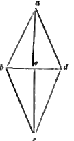

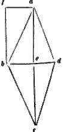
has been demonstrated. Wherefore if we multiply cathetus .ae. into the whole .bd., there will come double the area of triangle .abd., that is, the area of rhombus .abcd.: therefore cathetus .ae. falls in the middle of .bd., since isosceles is triangle .abd. Wherefore if you wish to have knowledge of it, subtract the square of line .eb. from the square of line .ab., namely .25. from 169, there will remain 144.; whose root, namely .12., is cathetus .ae.: for the same reason therefore also cathetus .ce. is likewise .12.; and .c.e. is a straight line in continuation of straight line .ea., since angles .aed. and .dec. are right. Wherefore the diameter is straight line .ac., and it is .24. Therefore the area of rhombus .abcd. is gathered from the multiplication of half of diameter .ac. into the whole diameter .bd.; which multiplication is .120.: likewise if diameter .ac. of 24 perticas has been given, we indeed find diameter .bd. through it in the above-said way. Because triangles .bac. and .dac. are isosceles, and are equal to one another. Wherefore if from the power of side .ba. we subtract the power of line .ae., namely .144 from 169, there will remain .25. for the power of cathetus .be.; therefore .be. is .5. Wherefore the whole diameter .bd. is .10. And since if we multiply cathetus .be. by half of base .ac., the area of triangle .abc. will come forth to us, wherefore if we multiply cathetus .be., namely half of diameter .bd., into the whole diameter .ac., the area of the whole rhombus .abcd. will be rendered to us. For the multiplication of .be. into .ac., namely .5. into .24., makes .120., which is the area of rhombus .abcd. Therefore the area of all rhombuses is gathered from the multiplication of one diameter into half of the other; and this is the universal rule in them.
Now if it is proposed that the greater diameter is 24., and the lesser .10.; and you wish to know the sides of the rhombus: join together into one the squares of half the diameters, namely of lines .ae. and .eb.; whose root, namely .13., you may have for each side. We can indeed propose many questions from the diameters and from the area, and also from the sides of a rhombus; all of which can be reduced to the questions of that oblong whose longer side is half of the longer diameter of the rhombus, and the shorter also is half of the shorter. Which quadrilateral we shall prove to contain half of the area of the rhombus: let therefore be drawn, as is seen in this other figure, .af. equal and equidistant to line .eb.; and let .fb. be joined. I say indeed that quadrilateral .ef. is half of rhombus .abcd.; and its sides are equal to half of the diameters .ac. and .bd. For .ae. contains half of .ac., and .be. of .bd.: for triangle .abd. is half of rhombus .abcd. But triangle .abd. is equal to quadrilateral .ef.; for each consists of the product of .ae. into .eb.; therefore quadrilateral .ef. is half of rhombus .abcd., as I said before. Now in order that how the questions of a rhombus are led to a quadrilateral, we wish to propose certain ones out of many. If it has been said to you: I added the two diameters together, and it was .34.; and the area of the rhombus is .120. How much is therefore each diameter? Since therefore the diameters are .34., half of them, namely .ae. and .eb., are .17.; and the area of quadrilateral .ef. is .60.: therefore you have brought this question to one of the questions of the oblong; to that namely in which it is proposed that the area is .60., and the sum of the sides .17.: from the square indeed of half of .17, namely from 72 1/4, take away 60, there remains 12 1/4.; whose root take away from half of .17., there will remain 5. for line .be.: the remainder which is up to .17. is line .ae.; therefore the double of them, namely .24. and .10., are the diameters. Likewise the sum of the diameters is .24.; and the greater exceeds the lesser by .14. How much is therefore the area? Take away .14 from 34., there will remain .20.; whose half, namely .10., is the shorter diameter. The remainder, namely .24., is the longer; multiply indeed half of one of the diameters by the other, and you will have the area.
f. 0082 · p. 75
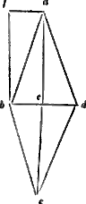
Again I added the two diameters together with the area of the rhombus, and there came forth .154.; and the greater diameter exceeds the lesser by .14. Since the two diameters of the rhombus are equal to the four sides of quadrilateral .ef.: set the shorter side to be a thing; and the longer side will be a thing and 7.: multiply therefore the thing into the thing and into .7., there will come forth a census and .7. roots, which are the area of quadrilateral .ef. And since quadrilateral .ef. contains half of the rhombus, double therefore the census and 7 roots, there will be two census and .14 things, which are equal to the rhombus: upon which add .4 things and 14., namely the four sides, there will be two census and 18. roots and .14., which are equal to .154.: take away therefore from both parts .14.; and reduce them to one census, there will come a census and 9. roots, which are equal to .70.: halve therefore the roots, there will be 4 1/2.; which multiply into itself, there will be 20 1/4.; which add with .70, there will be 90 1/4; from whose root cast away 4 1/2., there will remain .5. for .be.; whose double, namely .10., is diameter .bd.: to which having added .14., there will be .24. for the longer diameter; from which diameters up to .154. there remains .120. for the area. Moreover I added together the shorter diameter and the side of the rhombus, and they were .23.; and the greater diameter exceeds the lesser by .14. How much is therefore the side, and also each diameter? Since the greater diameter exceeds the lesser by .14, therefore half of the longer diameter exceeds half of the shorter by .7., namely side .ae. above side .eb. Therefore .be. with .ae. exceeds diameter .bd. by .7. But .bd. with side .ab. are 23; therefore .be. and .ea. with .ab. are .30. Whence such is this question: I added together two sides of a quadrilateral with its diameter, and it was .30.; and the greater side exceeds the lesser by .7: do therefore as was said above, and so forth. Likewise you multiplied each diameter into itself, and added them together: and what came forth was .676.; and the area is .120. How great therefore is each diameter? Take therefore the fourth part of .676.; because the squares of lines .ae. and .eb. are the fourth part of the squares of the diameters, since their sides are half of them, there will come out .169., whose root, namely .13., is the diameter of quadrilateral .ef., namely the side of the rhombus. And since it was shown above that the square of the diameter of an oblong exceeds double the area by the square of the excess of its sides; therefore if we subtract the area of rhombus .abcd., which is double the area of quadrilateral .ef., from the square of its diameter, namely 120 from .169., there will remain .49., whose root, namely .7., is the excess of the sides: therefore the area of the quadrilateral is .60., and the greater side exceeds the lesser by .7.; how much is therefore each side, and so forth. Likewise I multiplied the greater diameter of the rhombus by the lesser, and there came forth 240.; and the greater diameter exceeds the lesser by .14.; how great is therefore each diameter? From the multiplication indeed of half of one diameter into the whole other there comes forth the area of the rhombus; therefore .240., namely the multiplication of one diameter into the other, is double the area of the rhombus; therefore the area of the rhombus is .120., which is double the area of quadrilateral .ef. Therefore the area of quadrilateral .ef. is .60. Whence such a question arises: there is an oblong quadrilateral whose area is .60.; and the greater side exceeds the lesser by .7., namely half of .14., by which the greater diameter exceeds the lesser, and so forth.
Again I added the diameters together, and what came forth was .34.; and from the multiplication of one diameter by the other there came forth .240. How great is therefore each diameter? To show these things indeed, let there lie straight line .ab. of 34. perticas; and let it be divided into two equal parts, and as many unequal upon points .g. and .d.; and let .ad. be equal to the shorter diameter; there remains therefore .db. equal to the greater. From the multiplication indeed of .ad. into .db. with the square of line .dg. there comes forth the square of line .gb., namely of .17., which is .289.: from which if you subtract
f. 0083 · p. 76
the multiplication of .ad. into .db., there will remain .49. for the square of .dg.; therefore .dg. is .7.; which being added with .bg., the whole .bd., namely the greater diameter, will be .24.; there remains .da. 10., which is the lesser diameter. Again I divided the greater diameter by the lesser, and there will come forth from the division 2 2/5, and the area of the rhombus is .120.; how great is therefore each diameter? Since it is as the whole to the whole, so is any part to the same part. Therefore as the greater diameter is to the lesser, so half of the greater will be to half of the lesser; and half of the greater is the greater side of quadrilateral .ef., namely line .ae.; and half of the lesser is line .eb., namely the lesser side. For all numbers which have one and the same proportion, if the greater are divided by the lesser, the same thing will always come from the division. Therefore if we divide the greater side of quadrilateral .ef. by the lesser, there will come forth likewise 2 2/5.; therefore such is the question: the area of the quadrilateral is .60., namely half of the area of the rhombus; and I divided the greater side by the lesser, and there came forth 2 2/5.: and multiply thus .1. by 2 2/5.; which multiply by .60., there will be .144., whose root is .12.; which divide by the numbers of the proportion, namely by .1., and by 2 2/5., there will come out 12 and 5., which are the sides of the quadrilateral, namely half of the diameters; therefore the greater diameter is .24., and the lesser is .10. Now if you wish to know whence these things proceed, let unity .a. lie at hand; and let 2 2/5. be .b.; let .a. be multiplied by .b., and let .g. come forth; and let the lesser side of the quadrilateral be .d., and the greater .e.; and let the area be .f.; and since from the division of the greater side by the lesser there comes forth 2 2/5.; it is as .1. to 2 2/5., so the lesser side is to the greater, that is, as .a. to .b., so .d. to .e. Wherefore the product of .a. into .e. is as the product of .b. into .d. Let therefore the multiplication of .a. into .e., or of .b. into .d., be number .h.; and let .h. be multiplied into itself, let .t. come forth: and let indeed .d. be multiplied into .f., and let .k. come forth: I say that number k is equal to number .i. You multiplied indeed .a. into .b., and there came .g.; and .d. into .e., and there came .f.; and .g. into .f. made .k.: therefore number .k. is made from the multiplication of .a. into .b. multiplied into .d. and produced into .e. Likewise you multiplied .a. into .e., and there came forth .h.; and .b. into .d., and there came forth likewise .h.; and from .h. into .h. was made .t.: therefore .t. is made from the multiplication of .a. into .e. multiplied into .b. and produced into .d. But the multiplication of .a. into .b. multiplied into .d. and produced into .e. is equal to the multiplication of .a. into .e. multiplied into .b. and produced into .d.; therefore .k. is equal to .t., as we said before. We multiplied indeed above .a. into .b., and which we multiplied by the area, namely .g. by .f., and we had number .k., that is number .i., which was .144.; of which we took the root, which was .h.; because from the multiplication of .h. into itself there came forth .t.; therefore .h. is .12. And since from .a. into .e. there came forth .h., namely .12., and .a. is .1., therefore we divided .12 by 1., namely .h by a, there came forth .12., which is .e., namely the greater side. Likewise from b. into d. there came forth .h., namely .12; and b is 2 2/5. Wherefore we divided .12, namely h, by b, namely by 2 2/5; and we had .d., namely the lesser side, which was .5. For if the area, namely .f., were .100, then k, namely .t., would be .240., whose root is .h. But 240. does not have a root; whence since we cannot divide .h. by .a. and by .b., we shall take their squares, and by them we shall divide number .t. Or otherwise we shall take in whole numbers the proportion which unity .a. has to .b., and they will be .5. and 12. Let therefore .a. be 5., and .b. 12., and .g. 60. Wherefore .k. or t will be .6000.; which we shall divide by the squares of numbers .a and b., namely by 25, and by 144., there will come out for the greater side the root of two hundred and forty; and the lesser will be the root of 41 2/3. Or otherwise: set the lesser side to be a thing, and the greater side will be two things and two fifths of a thing: multiply therefore the thing into two things and two fifths, there will be
f. 0084 · p. 77
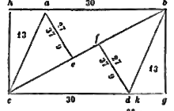
two census and two fifths of a census, which are equal to the given area. Let therefore the given area be .100.; which divide by 2 2/5., there will come forth 41 2/3; whose root is .d., namely the lesser side. And since it is as .a. to .b., so d. to .e.; therefore as the square of number .a. is to the square of number .b., so the square of quantity .d. will be to the square of quantity .e. Wherefore multiply the square of number .b. by the square of quantity .d., namely .144 by 41 2/3.; and divide the sum of the multiplication by the square of number .a., namely by 25, there will come out .250., whose root is the greater side.
Here begins on the rhomboid, the second difference.
A rhomboid indeed is a parallelogram figure having only opposite sides and angles equal, as we said. And when we wish to measure this, we shall draw in it a diameter, by which the figure will be divided into two equal triangles. Wherefore if we multiply the cathetus of one by the whole base, namely by its diameter, it will render the area of the whole rhomboid. For the evidence of which matter let there be rhomboid .abcd. having in each of the sides .ab and cd. .30. perticas, which are opposite and equidistant to one another. And the remaining two sides .ac. and .bd. are likewise equal and equidistant, containing in each side .13. perticas: and let diameter .bc. be of .37. perticas, by which rhomboid .abcd. is divided into two equal triangles, which are .abc. and .dbc.; each of them is obtuse-angled on account of the power of diameter .bc., which is greater than the two powers of sides .ba. and .ac., or .bd. and .dc. Upon base .bc. indeed let a cathetus be drawn from point .a. in triangle .abc.; and let it be .ae.; and you will multiply cathetus .ae. by base .cb., and you will have the area of the whole rhomboid .abcd.; or you will find cathetus .df. in triangle .bcd. upon base .bc.; and you will multiply that cathetus .df. by base .bc., and you will likewise have the area of rhomboid .abcd. For example: rhomboid .abcd. is double triangle .bcd., the area of which triangle is gathered from the multiplication of cathetus .df. into half of base .bc.: wherefore the multiplication of cathetus .df. by the whole base .bc. makes double the area of triangle .bdc.; therefore it makes the area of the whole rhomboid, which is double triangle .bcd. For each cathetus .ae. and .df. you will find to be 9 27/37 perticas. Which 9 27/37. you will multiply by diameter .bc., namely by 37; they yield 360 perticas for the area of the whole rhomboid .abcd. Similarly if outside triangle .bcd. you draw cathetus .bg. upon base .cg.; and we multiply that cathetus .bg. by the base of the triangle, namely by line .cd., you will have the area of the whole rhomboid .abcd. Likewise when cathetus .ch. is multiplied by base .ab., it will render the area of the same rhomboid. Each cathetus moreover is found by the rule which we demonstrated above in the obtuse-angled triangle. For example: having subtracted the powers of sides ca and ab, or bd and dc., namely 169 and 900. from the power of side .bc., namely from 1369., there remain 300;
f. 0085 · p. 78


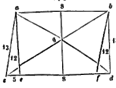
whose half, if it is divided by base .cd., namely by 30, yields .5. for the quantity of .dg. or .ah.; whose power, namely .25., having been subtracted from the power of .bd., namely from .169., there remains .144.; whose root, namely .12., is cathetus .bg. Which being multiplied by base .cd., namely 12 by 30, they yield .360 perticas for the area of the said rhomboid, as we taught above. Indeed the area of this rhomboid is investigated through two other catheti, which are .di. and .ak., which are found through diameter .ad. and through the sides of the rhomboid. Because when that diameter is drawn, the rhomboid itself is resolved into two acute-angled triangles, as is depicted in this other figure, one of which is triangle .acd., the other .abd.; and cathetus .id., or .ak., is of .12. perticas: and it is to be noted that from .a. to .i., wherever one draws a cathetus within the rhomboid between k and d., it will fall upon line .kd. For the fall of that cathetus you will be able to find through the things which we said in acute-angled triangles, or with a cord just as we taught in triangles. For sometimes there is a rhomboid which by its shorter diameter is resolved into two right-angled triangles, as rhomboid .bcde.; whose sides .bc and .de. are of 35. perticas; and the remaining two sides .bd and .ce. of .37. perticas; and let shorter diameter .be. be of 12. perticas. I say indeed that rhomboid .bcde. is divided into two right-angled triangles on account of the power of line .ec., which is equal to the powers of lines .cb and .be. Wherefore the angle which is under .cbe. is right. Similarly that which is under .bed. is found right. And triangle .cbe. is equal to triangle .bed. And since from the multiplication of cathetus .be. into half of base .ed. the area of triangle .bed. is gathered, but if we therefore multiply diameter .be. into side .ed., we shall have .420. perticas for the area of the whole rhomboid .bc.de.: similarly there occurs a rhomboid which by each diameter is divided into two obtuse-angled triangles.
Here begins on the figures which have cut-off heads, of which there are four kinds in the first difference.
The first kind of the third difference of quadrilateral fields, which have two equidistant and unequal sides, is a figure which is called an equally cut-off head, whose remaining two sides are equal to one another, as quadrilateral .abcd., whose side .ab. is .8. perticas; and it is equidistant to side .cd., which side is 18 perticas; and let each of the remaining .ac. and .bd. be .13. perticas. In this figure moreover side .a.b. is called the cutting-off of the head, and side .cd. the cutting-off of the base. The area of which figure is gathered from the multiplication of the cathetus into half of sides .ab. and .cd.; and the cathetus is drawn from the head to the base. Whence if from point .a., or from point .b., you wish to erect a cathetus upon base .cd., take away the cutting-off of the head, namely .8., from the cutting-off of the base, namely from .18., there remain 10; whose half, namely .5., will be the casus .ce. or .df.: for from point .a. the cathetus falls upon .e.; and from point .d. it falls upon .f. Wherefore if you subtract the power of .ce. from the power of .ae., or the power of .df. from the power of .bd., namely .25 from 169, there will remain .144.; whose root, which is .12., is perpendicular .ae. or .bf.: which .12. being multiplied into half of sides .ab. and .cd., namely into half of .26., that is into .13., they will render .156. for the area of quadrilateral .abcd. itself. For example: when catheti .ae. and .bf. are drawn, there is produced the oblong quadrilateral .aefb.; whose area is gathered from the multiplication of cathetus .ae. into .ef., which is equal to line .ab.; therefore .ef. is .8. perticas. Into which when the .12. perticas of cathetus .ae. are multiplied, they render .96. perticas for the area of quadrilateral .aefb.: which quadrilateral having been subtracted from quadrilateral .abcd., there remain two equal right-angled triangles, which are .aec. and .bfd.:
f. 0086 · p. 79for the multiplication of cathetus .ae. into half of .ec. renders the area of triangle .aec. Wherefore the multiplication of line .ae. into the whole .ec. renders the area of the two triangles .aec. and .bfd., which multiplication is .60.; which being added with 96., namely with the area of quadrilateral .aefb., renders .156., as we said before for the area of quadrilateral .abcd. Now if you wish to find diameter .da. or .cb., add the power of line .de. or .cf., namely .169., with the power of cathetus .ae. or .bf., namely with .144., there will be 313.; whose root is the length of diameter .da. or .bc. And if you wish to have the point in which the diameters intersect each other, add the head with the base, there will be .26.; which multiply into itself, there will be 676. Likewise multiply head .ab. into itself, there will be .64.; and the base into itself, there will be 324.: multiply therefore .64. by the square of one of the diameters, namely by 313, and divide the sum by 676.; or the fourth part of 64, namely .16, multiply by 313, and divide by the fourth part of 676., that is by 169., there will come out 29 8/13 3/13.; whose root is line .ag. or .bg. Similarly multiply the fourth part of 324., namely 81., by 313; and divide the sum by the fourth part of 676., namely by .169., and you will have the square of line .gc. or .gd. And note that for this reason we took the squares of the aforesaid lines, because 313, namely the square of one of the diameters, does not have a root. For if the diameter were rational, we would have multiplied it by 8 and by 18, and we would have divided their sum by 26; and thus we would have had the cuttings-off of the diameters; all of which things we wish to demonstrate geometrically. Since straight line .ab. is equidistant to line .cd., therefore triangle .agb. is similar to triangle .dgc.; and angle .abg. is equal to angle .gcd.; and angle .bag. to angle .gdc. Wherefore it is as .ab. to .bg., so .dc. to .cg.; and alternately it is as .ab. to .cd., so .bg. to .gc. Similarly it is again as .ab. to .cd., so .ag. to .gd. For ab is 4/9. of cd; wherefore .bg. of .gc., or .ag of gd., are likewise 4/9. And since they are proportionally separated, they will also be proportionally compounded: it is therefore as .ab. to itself and to .cd., that is as 8 is to .26., or 4 to 13., which are the least numbers having the same proportion, so .bg. is to the whole .bc., and .ag. to the whole .ad.; therefore .bg. is 4/13. of .bc., and .ag. of .ad. is likewise 4/13. Wherefore if, being rational, we took 4/13. of diameter .bc., we would have line .bg. or .ag. And the remainder .gc. or .gd. would be 9/13. of the whole diameter. But because the square of the diameter, namely of .313., does not have a root, we took the squares of 4. and of 13, namely 16 and 169; and we multiplied 16 by 313, and divided by 169.; because since it is as .ab. to itself and to .cd., so .bg. to .bc.; therefore as the square of line .ab. is to the square of the sum of the joining of lines .ab. and .cd., namely as 64. is to 676, or as the fourth part of 64. is to the fourth part of 676., namely 16. to 169, so the square of line .bg. is to the square of diameter .bc., namely to 313.; and in the same proportion is the square of line .gc to the square of line .ad. Wherefore straight line .ag. is equal to straight line .bg.; for they have the same proportion to equals: and since when equals are taken away from equals, those which remain are equal to one another. Straight line .gc. is therefore equal to straight line .gd.; and they have proportion to the whole diameter, namely to the root of .313., as .cd. has to itself and to straight line .ab. Which proportion is as .9. to 13. Wherefore the proportion of the square of line .gc. or .gd. is to 313., namely to the square of the diameter, as the square of .9. is to the square of 13, namely as .81. is to 169. Wherefore we multiplied above 81 by 313, and divided by 169, and we had the square of line .gc. or .gd.; which was required to be shown.
Now if line .ca and .db. are drawn into the parts of .ab., until at point .h.
f. 0087 · p. 80
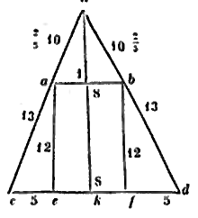

they meet, as in this other figure, in which quadrilateral abcd is transformed into triangle hcd.; and you wish to know the quantity of line .ah. or .bh. Subtract half of the head from half of the cutting-off of the base, namely .4. from .9.; and upon the remainder, namely upon .5., divide the multiplication of half of the cutting-off of the head into line .ca., namely of .4. into 13., there will come out 10 2/5. for the quantity of line .ah. or .bh.: and if you multiply the same 4 by cathetus .ae., namely by 12; and divide by 5., there will come out 9 3/5 for the cathetus of triangle .hab., namely for line .ih.: which having been drawn up to point .k., the whole line .hk. will be the cathetus of triangle .hcd.: and since in triangle .hcd. a certain straight line ab is drawn equidistant to base cd., triangle .hai. will be similar to triangle .hcd., that is, they have equal angles to one another, namely angle .hab. is equal to angle .hcd., namely the exterior to the interior; and angle .hba. is likewise equal to the angle at .d.: and the common angle is that which is under .ahb. Now similar triangles have proportional sides about equal angles, as is declared in geometry. Wherefore as side .ha. is to .ab., so hc is to .cd.; and as hb is to .ba., so .hd. is to .dc.: alternately therefore as .ha. is to hc., so hb. is to hd., and .ab. to .cd. Again as .ab., namely the base of triangle .hab., is to base .cd., so side .ha. is to side .hc., and hb. to hd, and also cathetus .ih. to cathetus .hk.; therefore whatever part .ab. is of .cd., namely .8. of 18., the same part will .ha. be, namely 10 2/5. of .ac., namely of 23 2/5.; and hb of hd, and cathetus .ih. of cathetus .hk. For .8 of 18 is 4/9; wherefore .ha. of hc. and hb. of hd., and also .ih of hk., are four ninths. In this figure also triangle .cea. is similar to triangle .aih., for they have equal angles. For angle .hia. is equal to angle .aec., because each of them is right; and the angle at .c. to angle .iah., because line .ab. is equidistant to line .cd. The remaining angle therefore under .ahi. is equal to the remaining under cae, on account of the three angles of any triangle, which are equal to two right angles. For it is as .ce., namely .5., to .ea., namely to .12., so .ai., namely .4., is to .ih. Wherefore we multiplied above .4 by 12.; and divided by 5., and had 9 3/5 for cathetus .hi. Likewise as .ec. is to .ca., namely .5. to .13., so .ia., namely .4., is to .ah. Wherefore we multiplied above .4. by 13.; and divided by 5, and had 10 2/5 for line .ha.: for through these proportions are investigated the heights, and lengths, and depths of things, as we shall demonstrate in its own place. Now the second kind of this third difference is the figure which is called a half-cut-off head, whose two sides are equidistant, but not equal. And the remaining two are unequal, of which one is raised upon the base according to a right angle, making likewise a right angle with the cutting-off of the head; while the remaining side is raised from the other part of the base according to an acute angle, as quadrilateral .abcd., whose side .ad., namely the head, is equidistant to base .bc., whose length is .18. perticas; base .bc. of 30. perticas; cathetus .ab. 16.; and side .dc. also 20. To have therefore the area of the whole quadrilateral, add 18 with 30., namely the head with the base, there will be .48.; whose half, namely .24., multiply by line .ab., namely by .16.: for the reason that it is erected orthogonally, there will be 484 perticas in the area of quadrilateral .abcd. For example: upon straight line .bc. from point .d. let cathetus .de. be drawn; indeed quadrilateral .abcd. will be divided into two, namely into the oblong quadrilateral .abcd., and into the right-angled triangle .dec.; and .be. is equal to .ad., and .ad. is 18., and .be. is likewise .18.; and cathetus .de. is equal to cathetus .ab.: for each of them is 16.; the area therefore of quadrilateral .abed. is .288., which is gathered
f. 0088 · p. 81
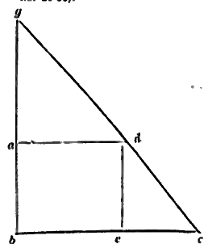
from the multiplication of .de. into .eb., that is of 16. into .18.: the area indeed of triangle .dec. is gathered from the multiplication of cathetus .de. into half of .ec., namely .16. into 6. make .96.; which having been added with 288., namely with the area of quadrilateral .abed., render 384. for the area of quadrilateral .abcd., as I said before.
And if you wish to have diameter .ac.; because triangle .abc. is right-angled, add the powers of lines .ab. and .bc., namely .259 with .900., there will be .1156.; whose root, namely 34., is the length of diameter .ac. Likewise so that you may have diameter .bd., add the power of cathetus .de. with the power of base .eb., namely 256. with .324, there will be .580.; whose root, which is surd, is the length of diameter .bd. Wherefore we shall say that diameter .bd. is the root of 580., or that the square of diameter .bd. is .580. But so that we may know the intersection of the diameters, we shall do as above, namely we shall add the head with the base, namely .18. with 30, there will be .48.: it is therefore as .18 to .48., so .af. is to the whole diameter .ac. For .18. to .48. is as 3 to .8. Wherefore it is as .3. to .8., so .af. is to .ac. Wherefore you will multiply .3 by 34, and we shall divide by 8., that is 3 by 17; and we shall divide by 4., there will come out 12 3/4. for line .af. The remainder which is up to .34., namely 21 1/4., is line .fc. Similarly because .afd. is similar to triangle .bfc., it will be as .af. to .ac., that is as .3 is to .8., so .df. is to .db.; therefore .df of .db. is 3/8; there remains .fb. 5/8 of .db. But because line db. is surd, we shall take their proportion in their squares. Therefore the square of .3. is to the square of .8, that is as .9. is to .64., so the square of line .df. is to the square of diameter .bd., namely to 580.: wherefore we shall multiply .9. by 580., and divide the sum by 64.; or we shall multiply .9. by the fourth part of 580., namely by 145., and divide the sum by the fourth part of .64., namely by .16.; because we ought always to imitate the method of avoidance which we taught in the Liber Abaci, namely to take the least numbers having the same proportion in multiplications and divisions: for .580 is to 64. as the fourth of 580. to the fourth of 64, there will come out 81 9/16. for the square of line .df. Again because line .fb. is 5/8 of diameter .bd.; you will multiply the square of 5, namely 25, by 145, and we shall divide the sum by .16., there will come out 226 9/16 for the square of line .fb.
Now if straight lines .ba. and .cd. are produced into the parts of .a and d., until they touch each other at point .g., as is shown in this other figure; and you wish to know the quantity of line .ag.; multiply indeed .ed. by .da., namely .16 by 18, and divide by .ce., namely by 12., there will come out .24. For triangle .dec. is similar to triangle .gad.; wherefore it is as .ce. to .ed., so .da. to .ag.: for by equality it will be as .ec. is to .cd., so .ad. is to .dg. Wherefore .cd., namely .20., having been multiplied by .da., namely by 18; and divided by ec., it renders .30 for the quantity of .dg., as is shown in the above-written figure.
Now the third kind from this third difference is the figure which is called an unequally cut-off head. whose head and base are equidistant and unequal. And the remaining sides are raised upon the base according to an acute angle; and they are unequal, as quadrilateral .abcd., whose head .ab. is of .10. perticas; and is equidistant to base .cd., which is of .24. perticas; and side .ac. is .13.; and side .bd. .15. perticas: for the area of this figure is gathered from the multiplication of the cathetus, which is drawn down from the head to the base, into half of the head and base. Now if that cathetus from point .a., or from point .b., you wish to draw upon base .cd., it is necessary first to find the falls of the catheti themselves; the way of finding which is that you subtract the head from the base, namely .10. from 24, there remain .14.: from
f. 0089 · p. 82

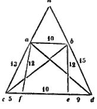
thence subtract the power of side .ac., namely .169., from the power of side .bd., namely from 225, there remain .56.; which divide by the above-written .14., there will come out .4.; which add with .14., there will be 18.; whose half, namely .9., is the longer fall .de. on the part of side .bd.: from which .9. up to 14. there are lacking .5., which are the shorter fall .fc. from side .ac., as we said in acute-angled triangles. Indeed when the power of the lesser fall, namely of .cf., which is .25., is subtracted from the power of side .ac., namely .169., there remain .144.; whose root, namely .12., is cathetus .af. Similarly when the power of .ed. is subtracted from the power of .bd., the power of .be. will remain 144.; wherefore .be. is .12., just as .af.: indeed the addition of the head and base, namely .10. and .24., makes .34.; whose half, namely .17., having been multiplied by cathetus .af., or .be., namely by 12., renders .204. for the area of quadrilateral .abcd.
You will also gather the square of diameter .cb. if you unite the square of line .ce. with the square of cathetus .eb., and it is .369., whose root is diameter .cb. Now if you desire to know where it intersects cathetus .af., you will be able to do this in two ways: first indeed because line .ab is equidistant to line .cf., it is as .ab. to itself and to .cf., so .ag. is to .af.; therefore .ag. is 2/3 of .af., namely .8., there remains .gf. 4. For triangles .agb. and .cgf. are similar. Similarly also .bg. is 2/3 of .bc. Similarly its square is 4/9 of the square of the diameter itself. Wherefore multiply .4. by 369, and divide by 9.; or multiply the ninth part of 369 by .4., there will be .164 for the square of line .bg.: and because .bg. is 2/3 of .bc., there remains .gc. 1/3 of .bc.; wherefore its square is 1/9 of 369, namely .41. Otherwise because triangles .ceb. and .cfg. are similar, it is as .cf. to .ce., so .fg. to .eb., namely the third part; therefore .fg. is .4. as I said before. Similarly on account of the same also cg is 1/3 of cb., and so forth.
We can indeed, according to the things that have been said in this part, and also in triangles, find diameter .da.; and know where it intersects cathetus .be., and also where it cuts itself with diameter .bc., even if from angles .cd., or from some given point upon straight line .cd., either inside or outside the figure, a line were drawn upon given parts of sides .db. or .ca.; and were sent out outside the figure equally with line .ab., until they were joined together, we can know the point of their conjunction, and also the quantity of the produced lines. Now if you wish to lead out sides .ca. and .db. outside, until at point .h. they meet: subtract the head, namely 10, from the base, namely from .24, the remainder, namely by 14. divide the multiplication of head .ab. into side .ac., namely of .10. into .13, there will come out 9 2/7 for line .ah. Similarly if you divide the multiplication of .ab. into .bd., namely of .10. into .15., by 14., there will come 10 5/7. for the length of line .bh. Now the fourth kind is the figure which is called an inclining cut-off head, whose head and base are unequal and equidistant. Of the remaining two sides, one is raised upon the base according to an acute angle; the remaining one upon the same base makes an obtuse angle, as in quadrilateral .abcd. written below, whose head .ad. is .12. perticas; and base .bc. .16. perticas; and side .ab. .15. perticas; and side .dc. .13. perticas: this figure also is gathered from the multiplication of the cathetus into half of its head and base. For from point .a. upon base .bc. the cathetus falls inside quadrilateral .abcd.; while from point .d. the cathetus will fall outside. Wherefore so that we may find the quantity of the interior or exterior cathetus, it is necessary that its fall be found first. The way of finding which is that the head be subtracted from the base, namely .12. from .16., there remain .4.; whose power, namely 16, let be added with the power of side .cd., namely with .169., there will be 185.; which let be subtracted from the power of .ab., namely from .225., there remain
f. 0090 · p. 83

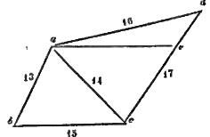

.40.; whose half, namely 20, is to be divided by the above-written .4., there will come out .5. for the exterior fall .ce., as we demonstrated in the obtuse-angled triangle: which .5. having been added with base .cb., namely with .16., render .21. for the whole line .eb.; from which having subtracted .12., which are the quantity of the head, there remain .9. for the quantity of the interior fall .fb. Wherefore when the power of .fb., namely .81., is subtracted from the power of side .ba., namely .225.; or the power of .ce., namely .25., is subtracted from the power of .cd., namely from 169, there will remain .144.; whose root, namely .12., is cathetus .af. or .de.: which namely 12 having been multiplied by half of the head and base, namely by 14., render .168. perticas for the area of the whole quadrilateral .abcd. In similar figures also, which are called inclining heads, of the two catheti which are produced from the angles of the head to the base, sometimes one falls inside and the other outside, as in the above-written figure. Sometimes one falls inside upon the angle of the base which is opposite to that angle from which the cathetus is produced, and the other falls outside; sometimes both fall outside, as is shown in these figures written below; the catheti of which figures are found according to what we demonstrated above. Indeed the square of .be. is .441., and .ed. is .144.; which being joined together into one make 585. for the square of diameter .bd. Likewise when the square of line .cf., namely .49., is added with the square of cathetus .fa., namely with .144., there will come out .193. for the square of diameter .ac. Now you can have the cutting of the diameters through the things that have been said above. Truly if into the parts of .a.d. we produce sides .ba. and .cd. to point .k., indeed ka. will be to kb., and kb and kd. to kc., as .ad. is to .bc., that is 3/4. Wherefore .ab. of kb., and dc of kc., are the fourth part; therefore .ka. is triple of .ab., and kd. of .dc. Wherefore ka. is .45., and kd is .29.
If the sides of a quadrilateral are by no means equidistant, as in quadrilateral .abcd., whose side .ab. is .13. perticas; let side bc also be .15. perticas; and side .dc. .17. perticas; and side da .16. perticas; which quadrilateral can be measured, if knowledge is had of one of the diameters, by which the quadrilateral itself is divided into two triangles, whose area joined into one renders the area of the whole quadrilateral. For example: let diameter .ac. be .14. perticas, and the area of triangle .abc. will be .84. perticas; of triangle .acd. 104 1/3. perticas; which areas being joined together into one render 188 1/3. for the area of the whole quadrilateral .abcd.: and this method is universal in all quadrilaterals. Or otherwise from point .a. let straight line .ae. be drawn equidistant to side .bc.; and according to the things that were said in the preceding part let the area of quadrilateral .abce. be taken, to which let triangle .ade. be added above, and the area of the whole quadrilateral .abcd. will be had. Moreover there is a figure which is called barbata, likewise having diverse sides, in which one of the diameters falls inside, while the other falls outside, as in quadrilateral .defg., whose diameter .eg. falls inside; from point .f. to point .d., line .fd. falls outside quadrilateral .d.e.f.g.: you will therefore have the area of this figure if you unite the area of triangle .deg. with the area of triangle .feg.; or if from the area of triangle .def. you take away the area of triangle .d.g.f.
Here begins the third part, on the measurement of fields having more than four sides.
The manner therefore of measuring multilateral figures is that you divide them into triangles, and gather the areas of all the triangles into one, and thus you will have the area of any multilateral figure whatsoever. And it is to be noted that a multilateral figure which consists of five sides is resolved at least into three triangles. Those indeed which consist of six sides into four; and thus always every multilateral figure is resolved into two triangles fewer than its sides. And although
f. 0091 · p. 84
through the resolution of them into triangles multilateral figures can be measured, yet sometimes we can proceed more subtly in certain ones, namely when the figure is a pentagon, that is, of five sides; and you will be able to make from it two pieces, of which one will be a triangle, and the other becomes a quadrilateral, in which its sides will be equidistant, as in pentagon .abcde., from which triangle .abe. having been cut off, there remains quadrilateral .ebcd. with cut-off head, whose side .be. is equidistant to side .cd.; then you will gather the area of triangle .abe., and you will add it with the area of quadrilateral .bcde., and you will have the area of pentagon .abcde. Similarly when it is possible from a hexagon, namely from a figure which has six sides, you will make two quadrilaterals, each of which has two equidistant sides. Or let one make therefrom one quadrilateral, which has two sides equidistant to one another, and two triangles; and thus take care to work in the remaining multilateral figures. Truly if the multilateral figure is equilateral and equiangular, which you desire to measure, otherwise than has been said, you will be able to arrive at its area, since in it there falls a circle touching the middle of each of its sides. You will multiply therefore the semidiameter of that circle by half of the sides of that figure, and you will have its area. For the evidence of which matter let there lie at hand an equilateral and equiangular pentagon .abcde. In which we wish to describe a circle touching its sides, which is done thus: I shall divide the angles .eab. and abc. into two equal parts by two lines .af and fb., and I shall draw lines .fc. fd. fe., and I shall mark points .g.h.i.k.l. in the middle of its sides, and I shall join lines .fg. fh. fi. fk. fl.; which I shall demonstrate to be equal to one another. Since pentagon .abcde. is equiangular, angle .fab. will be equal to angle .fba.; since they are half of the angles of the pentagon. Wherefore triangle .fab. is isosceles, having the sides subtending equal angles equal to one another. Wherefore straight line .fa. is equal to straight line .fb., and .fg., which is a cathetus upon line .ab., since it falls in the middle of it: for .la., since it is half of straight line .ae., is equal to straight line .ag.: let straight line .fa. lie in common, the two straight lines .ga. and .af. will be equal to the two straight lines fa and al.; and the angle which is under .gaf. is equal to the angle which is under .fal.: wherefore also base .fl. is equal to base .fg.; and angle .afl. is equal to .afg. angle .agf., and right is that which is under .agf., and that which is under .alf. will be right: wherefore straight line .fl. is a cathetus
f. 0092 · p. 85

upon straight line .ae.; and because .al. is equal to straight line .el., if straight line .fl. lies in common, the two straight lines .fl. and .la. will be equal to the two straight lines .fl. and .le.; and the angles which are at .l. are equal, since each of them is right: wherefore straight line .fe. is equal to straight line .fa.; and triangle .afl. is equal to triangle .lfe.; and the whole triangle .bfa. is equal to the whole triangle .afe. Similarly it will be shown that each of the straight lines .fh. fi. fk. is equal to each of the straight lines .fg. fl. Wherefore with center .f. and distance of one of the straight lines .fg. fh. there will be described circle .ghikl., and pentagon .abcde. will be divided into five equal triangles, which are .fab. fbc. fcd. fde. fea.; and the catheti falling in it are equal to one another, which are .fg. fh. fi. fk. fl.: and because from the product of .fg. into half of .ab. comes forth the area of triangle .fab.; if we multiply the semidiameter of the circle falling in the pentagon, namely .fg., into five times half of .ab., that is into half of the sides of pentagon .abcde., there will certainly come forth five times the area of triangle .fab., this will be the area of pentagon .abcde., as we said before. Similarly it will come in every equilateral and equiangular figure in which a circle falls. From this indeed it is manifest that the multiplication of the semidiameter of the circle into more than half of the circumferential line makes more than the area of that circle. We can also measure an equilateral and equiangular pentagon in another way, when it falls in a circle touching all its angles. Let there indeed be multiplied the half, that is dodrans and a fourth of its diameter, by the half, that is destuns and a third of the chord of the pentagonal angle, and you will have its area: for the evidence of which matter let pentagon .abgde. be described in circle .abgde., whose diameter let be .az., and let its center be .c.; and let straight line .be. be joined, which is the chord of pentagonal angle .bae.; and let .c.i. be taken, half of semidiameter .cz., and the whole .ai. will be half and a fourth of the whole diameter .az.; and let it be as .ai. to .ac., so .te. to .tk.: for .ac. is two thirds of .ai.: similarly also .tk. is two thirds of .te., that is of .tb.; wherefore .tk. is the third part of the whole chord .be.; wherefore .bk. is half and a third of chord .be. I say indeed that from the multiplication of .ai. into .bk. comes forth the area of pentagon .abgde.; which is proved thus: because it is as .ia. to .ac., so .te. to .tk.; the multiplication of .ca. into .te., that is, into .tb. (for .bt. is equal to .te.), will be equal to the multiplication of .ia. into .tk. But from the multiplication of .ca. into .bt. comes forth double of triangle .cba.; therefore from the product of .ia. into .tk. comes forth double of triangle .cba.: and because .tk. is double of .ek., if we multiply .ia. into .ek., there will come forth an equal to triangle .cba., which is the fifth part of the whole pentagon .abgde. Wherefore if we multiply .ai. into .bk., namely five times .ke., there will certainly come forth five times the area of triangle .cba.: but five times triangle .cba. is equal to pentagon .abgde.; therefore from the product of .ai. into .bk. comes forth the area of pentagon .abgde., as I said before. And it is to be noted that if the diameter of the circle is rational, then the pentagonal side falling in it will be a minor line, namely the root of a fourth recisum, or fourth abscisio; which abscisio consists of a number minus a root: of which two names the greater name has power over the lesser by that which is from a line incommensurable to itself in length; and the chord of the pentagonal angle will be a major line, namely the root of a fourth binomial; which consists of a number and a root, whose greater name has power more than the lesser by that which is from a line incommensurable to itself in length: of the same names are the pentagonal side and the chord of the pentagonal angle: as if the pentagonal side .ab. is the root of .40. minus the root of .320.; and chord .be. will be the root of .40., and of the root of 320.; and this is when we set diameter .az. to be .8., as will be demonstrated in its place.
f. 0093 · p. 86
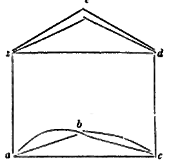

If indeed a field is not rectilinear, as quadrilateral .abcdez., whose two sides .az. and .cd. are rectilinear, while the remaining .abc. and .dez. are curved; in what manner you ought to measure it and similar ones, I shall show. From .a. indeed into .c. and from .z. into .d. let straight lines .ac. and .dz. be drawn; then take care to gather the area of rectilinear quadrilateral .acdz., according to those things which have been said; upon which add the area of belly .zed.; and from which whole diminish the area of belly .abc., and you will have the area of the sought field. For how the area of belly .zed. is had I shall show: upon the middle of arc .zed. fix point .e., and you will join straight lines .ez. ed., and triangle .ezd. will be rectilinear, and there will remain from the whole belly .zed. the bellies .zge. and .ead.; in each of which, if in the same manner you arrange rectilinear triangles, there will remain four bellies, which you will resolve into rectilinear triangles; and if this is always done in the same manner in the remaining bellies, there will come a time when from the whole belly .zed. nothing sensible will remain: whence if one joins the area of all triangles contained within belly .zed., you will indeed have the area of belly .zed. Similarly if you proceed in the same way in belly .abc., you will certainly have its area.
Archimedes’ Circle Measurement Proved with Small Numbers¶
Latin Locus: De Mensuratione Circulorum (pp. 88–91) · Commentary: Notes on the 96-gon Bounds & 864/275
Here begins the fourth part, on the measurement of circles and their parts.
When therefore you desire to measure a round field, that is, a circle, have knowledge of its diameter; which multiply by 3 1/7, or extend into .22; and divide what comes forth from the multiplication by 7, and you will have the quantity of the circumferential line, which contains that circle. When you draw half of the diameter through half of the circumferential line, doubtless the area of that circle will come forth therefrom: or from the square of its diameter take eleven fourteenths; and you will similarly have the area of the circle. Or if you desire to measure according to the Pisan manner, multiply the diameter into itself; and divide what comes forth by 7, and you will have the panora of the area of that circle. And so that all these things may be declared more openly, let circle .abgd. lie at hand, in which let two points .b.d. be taken; and let straight line .bd. be joined, and let it be divided into two equal parts upon point .e., from which let straight line .ag. be drawn, making right angles with straight line .bd.; and straight line .ag. will certainly be the diameter of the circle, in whose middle is the center of that circle, which let be .z.; and let us set diameter .ag. to be .14 perticas; which if we multiply by 3 1/7., there will come forth .44. perticas for the circumferential line .abgd.; which is called the periphery: or multiply 14. by 22; and divide what comes forth by 7, and there will similarly come 44 for curve .abgd.; whose half, namely .22., if we multiply by half of the diameter, there will come forth 154 for the area of circle .abgd. Or if from the square of the diameter, which is 196., you take 11/14, namely you will multiply 196 by 11, and divide by 14.; or extend the fourteenth part of 196., which is .14., by .11., and there will similarly come forth 154 for its area. Similarly if we multiply the diameter into itself, there will be 196; which being divided by 7, there will come 28 panora for the area of circle .abgd., to which 154 perticas are equal; found above; since each of the panora contains 5 1/2 perticas. And if through knowledge of the circumferential line you desire to have the diameter of the circle, divide it by 3 1/7, that is, divide sevenfold of it by 22. For example: let the circumferential line be 44.; whose sevenfold if we divide by 22; or if we multiply the twenty-second part of 44 by .7., doubtless .14. will come forth for its diameter: and if you desire to have the area of the circle from the circumferential line alone, multiply the square of its half by 7; and divide what comes forth by 22. For example: half of curve .abgd. is 22, whose square is .484.; which multiplied by 7 will make 3388.; which divided by
f. 0094 · p. 87
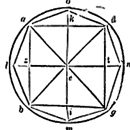
22, there come 154., as we found above: or if we divide 484 by 22, there will come .22; which multiplied by 7 similarly make 154. And if the diameter of the circle is .10., the circumferential line will certainly be 31 2/7., which come forth from the multiplication of .10. by 3 1/7. Wherefore if we multiply half of the diameter, namely .5., by half of the circumferential line, namely by 15 5/7, there will come 78 4/7. Or if we multiply the square of the diameter, namely 100., by 11, and divide the sum by 14.; or if we multiply .11. by half of 100, and divide the sum by half of 14, namely by 7, there certainly come forth 78 4/7 for the area of the above-written circle. Or if we divide 100 by 7, there will come forth 14 2/7 panora, which are equal to the 78 4/7 perticas written above. And if you wish to reduce 2/7 of one panorum into the customary parts, namely into soldi and denarii, multiply the 2, which are above the fraction bar, by the soldi of one panorum, there will be 33 soldi; which divide by 7, there will come 4 soldi and 8 4/7 denarii of measure. Therefore for the area of the above-written circle is had one stariorum and two panora and four soldi and 8 4/7 denarii; and thus take care to do in similar cases. Truly if you wish to know whence it is had that from the multiplication of the semidiameter by half of the circumference the area of the circle comes forth, I shall repeat circle .abgd., whose center let be .e.; and I shall describe in it some rectilinear figure, and of however many sides one wishes; and let it be quadrilateral .abgd., which I shall resolve from center .e. into four triangles, namely according to the number of its sides, which let be .eab. ebg. egd. eda.; and each of them is isosceles; since lines .ea. eb. eg. ed. are equal to one another; for they are drawn from the center to the periphery: wherefore if in those triangles catheti are produced from center .e., each will fall upon the middle of the base of its triangle. Wherefore let us place upon the middle of the bases of those triangles points .z.i.t.k., through which points let there be produced from center .e. to the periphery straight lines .el. em. en. eo.; and let .al. lb. bm. mg. gn. nd. do. oa. be joined, and there will be four triangles constituted upon bases ab. bg. gd. da.: and since straight line .ez. is a cathetus upon straight line .ab.; if we multiply .ez. into half of .ab., there will certainly come forth the area of triangle .eab. Similarly because .lz. is a cathetus of triangle .lab., there will certainly come forth from .zl. into half of .ab. the area of triangle .lab. Wherefore if we multiply the whole .el., namely the semidiameter of the circle, into half of .ab., there will certainly come forth the area of quadrilateral .ealb. In a similar manner also if we multiply .em., namely .el., into half of line .bg., there will come forth the area of quadrilateral .ebmg. And in the same way if we multiply .en. into half of .gd., and .eo. into half of .da., there will come forth the areas of quadrilaterals .egnd. and .edoa.; that is, if we multiply .el., namely the semidiameter, into half of the sides of quadrilateral .abgd., there will come forth the area of the multilateral figure falling in the circle. But the area of that multilateral figure, which is .albmgndo., is less than the area of the circle. Therefore from the multiplication of the semidiameter of the circle into half of straight lines .ab. bg. gd. da. there will come forth less than the area of the circle. But half of lines .abgd. is less than half of circumference .abgd. Therefore from the multiplication of the semidiameter of the circle into less than half of the circumference of that circle it makes less than the area of the circle: and we demonstrated in the preceding part, on the measurement of multilateral figures containing a circle, that from the multiplication of the semidiameter of the circle into more than half of its circumference there comes forth more than the area of the circle. Wherefore it is concluded that from the multiplication of the semidiameter of the circle into half of the circumferential line comes forth its area. But it is to be sought again whence proceeds the finding of the area of the circle through
f. 0095 · p. 88the taking of eleven fourteenths of the square of its diameter. Since the area of any circle to the area of another is as the square of the diameter of the one to the square of the diameter of the other, as Euclid demonstrated in the second theorem of his twelfth book. Alternately it will be as the square of the diameter of any circle to its area, so all squares of the diameters of all circles will be to the areas of those circles. Wherefore when the proportion of the square of the diameter of one circle to its area was found, then was found the proportion of the square of the diameter of any circle whatsoever to its area. For the square of the diameter of the above-written circle was 196., and its area .154., whose proportion is as 14 to 11. in least numbers. Wherefore it will be as 14 to the square of the diameter of any circle whatsoever, so .11. will be to its area. Whence when we multiply .11. by the square of the diameter of any circle you wish; and divide the sum by .14., there will come forth the area of that circle; which was necessary to show. Similarly if we reduce 154 perticas into panora, there will come 28 panora. Therefore it will be as 196 to .28. panora, so the square of the diameter of any circle you wish will be to the panora containing its area. But 196 to .28. are as .7 to .1.; wherefore it will be as .7. to .1., so the square of the diameter of any circle you wish will be to the panora of its area. Wherefore if from the square of the diameter of any circle you wish we take the seventh, doubtless the panora which are in the area of that circle will come forth, as we demonstrated above. And it is to be noted that whatever proportion there is of one quantity to another, the same will be of any multiple of the one to the same multiple of the other. Wherefore whatever proportion there is of the diameter of a preceding circle to the diameter of a consequent one, the same will be of the circumferential line of the preceding circle to the circumferential line of the consequent one. And the same will be the proportion of half of the circumferential line of the preceding circle to half of the circumferential line of the consequent one. Wherefore it will be as the square of the diameter of the preceding circle to the square of the diameter of the consequent one, so the square of the semicircumference of the preceding to the square of the semicircumference of the consequent: and because it is as the square of the diameter of the preceding circle to the square of the diameter of the consequent, so the area to the area: it will certainly be as the square of the semicircumference of the preceding circle to the square of the semicircumference of the consequent one, so the area of the preceding circle to the area of the consequent one: alternately therefore it will be as the square of the semicircumference of the preceding circle to its area, so the square of the semicircumference of the consequent one will be to its area; half of the circumferential line of the above-said circle was 22, whose square is 484; and its area was 154.; whose proportion in least numbers is as 22 to .7; therefore as 22 is to .7, so the square of the semicircumferential line of any circle you wish will be to its area. Wherefore when .7 are multiplied by the square of the semicircumferential line of any circle; and the sum is divided by 22, there certainly comes forth the area of that circle.
It is to be shown also how it was found by Archimedes the philosopher that the circumferential line of every circle is triple and a seventh of its diameter; and that discovery was very beautiful and subtle: which also I shall repeat not with his numbers, which he used to demonstrate; since it is possible with small numbers to demonstrate most fully the things which he showed with large ones. Let there lie at hand indeed circle .abgd., whose diameter let be line .ag.; and let its center be .c.; and I shall draw line .ez. touching the circle upon point .a. Wherefore diameter .a.g. is a cathetus upon straight line .ez.: then upon straight line .ac., and in that point .c., I shall draw angle .ace., which
f. 0096 · p. 89let be the third part of a right angle; wherefore angle .aec. will be 2/3 of one right angle, since angle .eac. is right. For the three angles of every triangle are equal to two right angles: and let .az. lie equal to straight line .ae.; and let straight line .cz. be joined, and triangle .caz. will be equal to triangle .cae.; and angle .cza. is equal to angle .cea.: for each of them is 2/3 of a right angle. Similarly since angle .ecz. is double angle .eca., angle .ecz. will similarly be 2/3 of a right angle: triangle .cez. is therefore equiangular and equilateral; wherefore straight line .ez. will be the side of an equilateral and equiangular hexagon containing circle .abgd. With these things thus in order having been carried out, I shall set .ce. to be 30; wherefore .ae. will be 15: and because triangle .cae. is right-angled, if from the square of side .ce. the square of side .ae. is taken away, namely .225 from 900, there will remain 675 for the square of side .ca.; therefore side .ca. is the root of 675: which if we take subtly, we shall find it to be according to nearness .26. perticas minus 2 1/13 unciae. For a pertica consists of .108. unciae: then let angle .eca. be divided into two halves by line .cf., which will divide arc .ab. upon point .y. And since it is had from the demonstrations of Euclid that equal angles at the center stand upon equal peripheries; periphery .ay. is therefore equal to periphery .by.: therefore .ae. was the half-side of the hexagon. Wherefore also .af. will be the half-side of the dodecagon containing circle .abgd. And because angle .eca. is divided into two equal parts by line .cf., proportionally it will be as .ec. to .ca. so .ef. to .fa., as Euclid declared in the sixth book: wherefore it will be as the joined sum of .ec. and .ca. to .ea., that is, as 56 minus 2 1/13 unciae is to .ea., so the joined sum of .ef. fa., which is .15., to line .fa.: alternately therefore it will be as the joined sum of .ec. and .ca. to .ea., that is, as 56 minus 2 1/13 unciae are to 15., so .ca. will be to .af. Wherefore I shall set .ea. to be 56 minus 2 1/13, and .af. will be 15. Wherefore if we join the squares of lines .ca. and .af., we shall have for the square of line .cf. 3359 minus 16 2/3 unciae; whose root, which is 58, minus 4 4/5 unciae, is side .cf. Then I shall divide angle .fc. into two equal parts by line .ch.; and .ah. will be the half-side of an equilateral figure having .24. sides, and described about circle .abgd.: and because angle .fca. is divided into two equal parts by line .ch., the proportion of the joined sum of .fc. and .ca. to .ca. will be as .fa. to .ah.: alternately therefore it will be as the joined sum of .fc. and .ca. to .fa., that is, as 114 minus 6 7/8 unciae to .15., so .ca. to .ah.: wherefore I shall set .ca. to be .144 minus 6 7/8 unciae, and .ah. will be 15; wherefore if from the joining of their squares we take the root, we shall have 115 minus 8 16/23 unciae for line .ch. Again I shall divide angle .hca. into two equal parts with line .ci.; and .ai. will be the half-side of an equilateral figure having .48 sides, and described about circle .abgd., whose .ai. proportion to .ac. will be as .15. to the joined sum of .ac. and .ch., that is, to 229, minus 15 11/72 unciae, according to the greatest nearness. For we cannot truly proceed when it is necessary to find the roots of surd numbers, of those namely which do not have a root in numbers. I shall set therefore .ca. to be 229 minus 15 11/72 unciae; and .ai. I shall set to be .15.; and I shall divide again angle .ica. into two equal parts by line .ck., and .ak. will be the half-side of the figure described about circle .abgd., having .96. sides containing that circle. I shall add again the squares of lines .ca. and .ai.; and I shall have the square of side .ci., whose root is 229, and 7 1/32 unciae a little less; but the proportion of .ca. to .ak. is as the proportion of the joined sum of .ic. and .ca. to .ai.; therefore the proportion of .ca. to .ak. is almost 458 4/5 to 15. But the proportion of .ca. to .ak. is as the proportion of diameter .ga. to double
f. 0097 · p. 90
.ai. But double .ai. is the side of the equilateral figure described about circle .abgd., having 96 sides; wherefore it is as 458 4/5 to 15., so diameter .ga. to one of the sides of the above-said figure having .96. sides. Wherefore if we multiply 15 by 96, there will come forth .1440. for the sum of the sides of that figure: therefore the proportion of all the sides of the above-said figure to the diameter of the circle falling in it is as 1440 to 458 4/5. I shall find again the proportion of the circle to its diameter by the side of the figure falling in it having .96. sides in this manner: I shall set in the same circle .abgd. the side of the hexagon .ad., which is equal to semidiameter .ca.; and I shall join .gd., and triangle .gda. will be right-angled, since it is in semicircle .gda.: for every angle, as is had in the third book of Euclid, which is in a semicircle, is right; and because line .ad. is the hexagonal side, periphery .ad. will be the third part of periphery .dag.; wherefore periphery .gd. is double periphery .da. Whence angle .gad. is double angle .agd.; and both together are equal to one right angle; wherefore angle .agd. is the third part of a right angle. I shall set in the above-written order diameter .ag. to be 30; wherefore straight line .ad. will be .15, and straight line .gd. will be 26, minus 2 1/13 unciae by those things which I demonstrated above: and I shall divide angle .agd. into two equal parts by line .gm.; and I shall join straight line .am., and the proportion of straight line .al. to .ld. will be as .ag. to straight line .gd.: and when we join them, the proportion of straight line .ad. to .ld. will be as the joined sum of straight lines .ag. and .gd. to straight line .gd.; and when we permute, it will be as
f. 0098 · p. 91line to straight line .ad., that is, as 56 minus 2 1/13 unciae to 15., so .gd. to .dl.: and because angle .agd. is divided into two equal parts by line .gm., angle .agm. is equal to angle .dgm., and angle .gdl. is equal to angle .gma.: for each of them is right, since it is in semicircle .gdma.; the remaining angle therefore, which is under .gld., is equal to the remaining one, which is under .gam.; triangle .gdl. is therefore equiangular to triangle .gma.: wherefore it is as straight line .gd. to .dl., so straight line .gm. to .ma.: wherefore I shall set .gm. to be 56 minus 2 1/13 unciae; and straight line .ma. will be 15; and straight line .am. is the side of the dodecagon, since periphery .am. is half of periphery .amd. Again I shall divide angle .agm. into two equal parts with line .gno.; and I shall join straight line .ao., and I shall find the joined root from the squares of lines .gm. ma., which is 58 minus 4 4/5 unciae for side .ag.; and it will be as the joined sum of .ag. and .gm. to line .ma., that is, as .114 minus 6 7/8 unciae to 15., so .gm. to .mn. But as .gm. to .mn., so .go. to .oa.; for triangles .gmn. and .goa. are similar and right-angled: it is therefore as 114. minus 6 7/8 unciae to .15., so .go. to .oa.: wherefore I shall set .go. to be .114 minus 6 7/8 unciae, and .oa. 15; and I shall take again the root from the squares of lines .go. and .oa., and I shall have for line .ga. 115 minus 8 16/23 unciae; and line .oa. is the side of the figure described within circle .abgd., having .24. sides: I shall divide again angle .ago. into two halves by line .gq.; and I shall join .qa., and it will be as .ag. and .go. to .oa., so .go. to .op. But as .go. to .op., so .gq. to .qa.; it will be therefore as 229, minus 15 11/72 unciae, to 15., so .gq. to .qa.: wherefore I shall set .gq. to be .229 minus 15 11/72 unciae, and .qa. 15; and I shall join their squares; and from the joined sum I shall find the root, and I shall have .229, and a little less than 37 1/2 unciae; and .aq. is the side of the figure having 48 sides. I shall divide again angle .agq. into two equal parts by line .grs.; and I shall join .sa., which will be the side of the figure having .96. sides falling within circle .abgd.; and because angle .agq. is divided into two equal parts with line .gs., the proportion of .gq. to .qr. will be as .ag. and .gq. to .qa., that is, as 458 1/5 to .15., so .gq. to .qr. But as .gq. to .qr., so .gs. to .sa., since triangles .gqr. and .gsa. are similar: wherefore it will be as 458 1/5 to .15., so .gs. to .sa.: I shall join again the squares of lines .gs. and .sa., and from the joined sum I shall find the root, and you will have 458 4/9 for diameter .ga.: I shall multiply therefore straight line .sa. by .96, there will be .1440 for the sum of all sides of the figure described within circle .abgd.: wherefore it is as .1440 to 458 4/9., so all the sides of the aforesaid figure described in circle .abgd. are to the diameter of circle .ga. We found through the investigation of the side of the exterior figure that the proportion of all its sides to the diameter of the circle is as .1440 to 458 1/5; and the circumferential line is less than all the sides of the figure containing the circle; and it is more than all the sides of the figure described within the circle; the proportion of the circle to its diameter will be as 1440 to 458 1/3, since it is in the middle between 458 4/9 and 458 1/5. But the proportion of 1440 to 458 1/3 is as triple of the one number to triple of the other, that is, as 4320 to 1375; whose proportion in least numbers is as 864 to 275: but the proportion of 864 to 275, minus 1/11, is as 3 1/7 to 1; and because the difference is small between the proportion which the circle has to its diameter, and the proportion which 3 1/7 have to 1.; therefore the ancient sages laid down that the circle is triple and a seventh of its diameter; and this I wished to show. If however you desire to measure a semicircular field, seek the area of that circle by one of the demonstrated ways; and have half of it for the area of that semicircle.
f. 0099 · p. 92
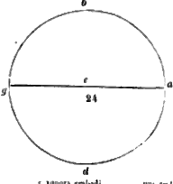

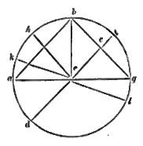
For the evidence of which matter let there be semicircle .abg., whose diameter .ag. let be .24.; and let circle .abgd. be completed; and the supplement .adg. will similarly be a semicircle. Wherefore if we take half of the area of circle .abgd., we shall certainly have the area of the given semicircle .abg. Or multiply half of the diameter, namely 12, by 3 1/7, and you will have 37 5/7 for arc .abg.: and when you multiply half of the diameter by half of arc .abg.; or if you draw the fourth part of the diameter into the whole arc .abg., there will come 226 4/7 for the area of semicircle .abg.: or if from the square of the diameter, which is .576., you take eleven twenty-eighths; or if from the square of its diameter you take the twenty-eighth, and multiply it by 11, you will arrive at the same area: and if from the square of the diameter you take the fourteenth part, you will have the panora of the above-written area, which are 41 1/7. And if to the knowledge of arc .abg., which is the half-line circumference of the circle, you desire to come otherwise, from center .e. upon diameter .ag. erect line .eb. orthogonally, which will be the semidiameter of circle .abgd.; and you will join straight lines .ab. bg., and the angle which is under .abg. will be right; since it is in semicircle .abg.: or because .be is equal to straight lines .ea. and .eg., each triangle .aeb. and .beg. will be isosceles: wherefore the angles which are under .eba. and .eab. and .ebg. and .bge. are equal to one another; and each of them is half of a right angle: wherefore the two angles which are under .abe. and .ebg. are equal to one right angle; the angle therefore which is under .abg. is right: and because the two straight lines .ae. and .eb. are equal to the two straight lines .be. and .eg.; and the angles which are under .aeb. and .beg are right, straight lines .ab. and .bg. were equal to one another; wherefore the square of diameter .ag. is double the square of each of lines .gb. and .ba., and also each of the squares of lines .gb. and .ba. is double each of the squares of lines .ae. and .be. and again .be and .eg.: wherefore it is as .ag. to .gb., so .gb to .be., or to .eg.: wherefore if we multiply .ag. into .be., namely .24. by 12, we shall have .288. for the square of each of lines .ab and bg.: or if we take half of the square of diameter .ag.; or double the square of semidiameter .ge. or .ea., we shall similarly have .288 for the square of each of lines .gb and ba.; and .ge. is the arc of half of semicircle .abg.: then if we divide chord .bg upon point .c. into two equal parts; and through points .c.e. we draw line .df., .df. will be the diameter of circle .abgd.; and it will make right angles upon point .c. with chord .bg., and will also divide arc .bfg. into two equal parts. Wherefore if from point .f. we draw lines .fb. and .fg., each of them will be the chord of a fourth part of semicircle .gba.: to whose knowledge we shall come thus: because the angle which is under .bce. is right; if we subtract the square of line .bc., which is 72, namely the fourth part of the square of chord .bg., from the square of line .be. subtending the right angle which is under .bce., there will remain .72. for the square of line .ce.: wherefore the whole .dc. is 12, and the root of 72.; and it is called a binomial, since it cannot be expressed in numbers. Whence if we subtract .ec. from .ef., there will remain .12 minus the root of .72. for line .cf.: and that line .cf. is called an abscisio, or recisum, or apotome, since it consists of a number minus a root: then we shall take the squares of lines .fc. and .cb., and you will have the square of chord .bf. or .fg.: for how we take the square of abscisio .cf., I wish presently to demonstrate: you will set its names, namely 12 and 72, as is seen in the margin; and you will multiply 12 by 12, there will be 144; and the root of 72 by the root of 72, there will be 72; which joined together, there will be .216.; from which you will subtract double of 12 multiplied into the root of 72,
f. 0100 · p. 93there will come 24 roots of 72; and thus are had for the square of line .cf. 216, minus 24 roots of 72, which are one root of 41472. Or because line .ef. is divided as you please upon point .c., the two squares of lines .ef. and .ec. will be equal to the square of .cf., and double the rectangular surface of .ec. into .ef. For the squares of lines .ef and ec. are 216; from which if we take away double the multiplication of .ef. into .ec., namely 24. into the root of .72., there will certainly come forth 216 minus the root of 41472; and it is called a first recisum, as will be demonstrated in its place: to which square if we add the square of line .bc., that is 72, we shall have 288 minus the root of 41472 for the square of chord .bf.; which is called a fourth recisum, whose root is that line which is called minor. For if according to nearness you wish to have knowledge of line .bf., subtract the root of 41472, which is a little less than 203 2/3, from 288, there will remain a little more than 84 3/8 for the square of each of the four chords .gf. fb. bh. ha.: or otherwise find the root of the square of line .ce., which is a little less than 8 1/2; and subtract it from line .ef., namely from 12., there will remain a little more than 3 1/2 for line .cf.; whose square, which is a little more than 12 1/4, if we add with the square of line .bc., we shall similarly have a little more than 84 1/3 for the square of each of the above-written four chords: which if we multiply by the square of four, namely by 16., we shall have 1350 for the square of the sum of those four chords, whose root is about 36 3/4. But arc .abg is 37 5/7. Whence we are still somewhat far from the knowledge of it through the finding of four chords. Wherefore I shall divide again one of the four aforesaid chords into two equal parts; and let chord .ah. be divided upon point .I.; and I shall draw through points .i.e. diameter .kl., which divides arc .akh. into two equal parts upon point .k.; and I shall draw chord .ak., it will be the side of a figure falling in circle .abgd. having 16 sides: and I shall come to its knowledge according to that which has been demonstrated, namely from the square of line .ae., that is from 144., I shall take away the square of line .ai., which is about 22 1/11., namely the fourth part of the square of line .ah., there will remain 121 10/11 for the square of line .ei.: wherefore that line is about 11 1/11.; which if we take away from line .ek., there will remain .ak. about 10/11 of one pertica; to whose square, which is about 9/11, if we add with the square of line .ai., we shall have 21 10/11 for the square of chord .ak., which is the chord of the eighth part of arc .abg.: wherefore if we multiply 21 10/11 by the square of eight, namely by 64, we shall have about .1402. for the square of eight equal chords falling in semicircle .abg., whose root is less than 37 1/2. But arc .abg. is more, namely 37 5/7. Wherefore if in the same manner we find the chord of the half-arc .ak., we shall be nearer in length to arc .abg.; and thus always dividing the arcs we shall come to knowledge of a chord whose difference from its arc will be as if insensible; and thus you will be able to arrive at knowledge of any arc of a circle you wish. And so that this may be grasped more clearly, let circle .abcd. lie at hand, whose diameter .ac. let be 10; and in it let a known chord .bd. be given, which let be .8.; and we wish to find arc .bad through knowledge of that chord: first indeed I shall show how to find through knowledge of the chord the length of each arrow; and through knowledge of the arrow to find also the length of the chord; and this demonstration is upon this; because line .ac. is divided into two equal parts upon point .f., and into two unequal parts upon point .e.; the multiplication of .ae. into .ec. with the square of line .ef. will certainly be equal to the square of line .fa. But .fa. is equal to .fb., since both of them are produced from center .f. and terminate in the periphery of the circle: wherefore the multiplication of .ae. into .ec. with the square
f. 0101 · p. 94
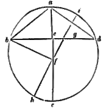

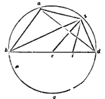
of line .ef. is equal to the square of line .fb. But the square of line .fb. is equal to the two squares of lines .be. and .ef.; therefore the multiplication of .ae. into .ec. with the square of line .ef. is equal to the two squares of lines .be. and .ef.: wherefore if the squares of line .ef. are taken away in common, there will remain the multiplication of .ae. into .ec. equal to the square of line .be.: wherefore if we subtract the square of line .be. from the square of line .bf., namely .16 from 25., there will remain .9 for the square of line .ef.: wherefore .ef. is .3.; which added with .cf., there will be 8. for arrow .ce.: similarly .fe. having been subtracted from .af., there will remain .2. for line .ae.: for the multiplication of .ae. into .ec., namely of .2 into .8., is equal to the square of line .be. Whence straight lines .ae. and .eb. and .ec. are continually proportional: for it is as .ae. to .eb., so .be. to .ec. Therefore the knowledge of arrows .ae. and .ec. has been found through the knowledge of chord .bd. But let .ae. and .ec. be known arrows; wherefore let .ae. be .2, and .ec. 8; and we wish to find chord .bd.: because the multiplication of .ae. into .ec. is equal to the square of line .be.; if we multiply .ae. into .ec., namely .2 by 8, we shall have .16 for the square of line .be.; whose root, namely .4., being doubled, we shall have .8. for chord .bd. But let chord .bd be known, and also arrow .ea., and diameter .ac. unknown, you will multiply half of chord .bd. into itself, there will be .16.; which divide by arrow .ae., namely by 2., there will come 8 for arrow .ec.: wherefore diameter .ac. will be 10.: similarly if we divide the square of line .be. by arrow .ec., there will come forth arrow .ae. It is to be noted that in semicircle .abc. straight line .be. is called the sinus rectus of each arc .ab. and .bc.; and straight line .ae. is called the sinus versus of arc .ab.; and straight line .ec is called the sinus versus of arc .bc., as is found in the art of Astrology: these things therefore having been demonstrated let us return to the matter: let us draw the chords of the two arcs .ba. and .ad., which are straight lines .ba and .ad; knowledge of which we shall have, if we join the squares of lines .ae and .ed., or .ae. and .eb., each of lines .ab. and .ad. will be the root of .20: wherefore if we halve chord .ad. at point .g.; and through points .gf. we lead diameter .hi., we shall find by the things which have been said knowledge of arrows .ig. and .gh.: and when we join the squares of lines .ag. and .gi., we shall have the square of chord .ai., which is the chord of arc .ai., which is the fourth part of the whole arc .bad.: and when we have frequently done so, we shall be able according to nearness to have knowledge of the whole arc .bad.; and when we subtract it from the circumferential line, namely from periphery .adbg., namely from 31 3/7, arc .b.c.d will remain known. There is indeed another way of finding the chords of half-arcs, from which arcs the chords are known; and which Ptolemy placed in the Almagest. Let there be indeed in circle .abgd. a known diameter .bd., and also chord .ad. known; I wish to find the chord of half of arc .ad.: I shall draw chord .ab., and it will be known, since chord .ad. is known; since angle .dab is right. Wherefore the square of diameter .bd. is equal to the squares of the two chords .da and ab.; and let straight line .be. lie equal to straight line .ba; and I shall divide the angle which is under .abe. into two halves by line .bz.; and I shall join straight lines .zd. and .ze. and .za.; and from point .z. upon diameter .bd. I shall draw cathetus .zi.; straight line .ab. is equal to straight line .be.: if straight line .bz. lies in common, the two straight lines .ab. and .bz will be equal to the two straight lines .zb. and .be.; and the angle which is under .abz. is equal to the angle which is under .zbe.; wherefore base .az. is equal to base .ze. But straight line .az. is equal to straight line .zd., since peripheries .az. and .zd. are equal to one another; because equal angles stand upon equal peripheries, whether the angles have been placed at the center or at the periphery: for the angles which are at .b. are to one another
f. 0102 · p. 95equal, and stand upon peripheries .az. zd.; wherefore straight line .ze. is equal to straight line .zd.; triangle .zed. is therefore isosceles; wherefore point .i., which is the fall of cathetus .zi., falls in the middle of .ed.: and because triangle .bzd. is right-angled, since it is in a semicircle; and in it upon the base from the right angle a cathetus is drawn, certainly triangle .bzd. is divided into two triangles similar to one another; for each of those triangles has one right angle, and one common with the whole triangle .bzd., as Euclid shows in the eighth theorem of the sixth book. Wherefore it will be as .bd. to .dz., so .zd to .di. Wherefore the multiplication of .di. into .bd. is equal to the square of line .zd.; for .id. is known, since it is half of .ed., which is known on account of .be., which is equal to the known chord .ba. Wherefore if chord .ba., that is .be., is taken away from diameter .bd., .ed. will remain known; wherefore its half .id. will be known. Whence if we multiply known .di into known .bd., the square of chord .zd. will come forth known; wherefore straight line .zd will be known, as we said before: let these things also be shown with numbers. Let diameter .bd. be 10; and let chord .da. be .8.; wherefore chord .ab will be .6.; to which since straight line .be. is equal, .be. will similarly be .6.; which being subtracted from diameter .bd., there will remain .4. for straight line .ed.; whose half, namely 2, will be straight line .id.: from the multiplication indeed of .id. into .bd. come .20, which are equal to the square of chord .zd.; wherefore chord .zd. is the root of .20.; which was necessary to show. Similarly if we subtract the square of line .zd. from the square of diameter .bd., there will remain .80 for the square of chord .bz.; whose root, which is 9 minus 1/18, if we subtract from diameter .bd., there will remain 1 1/18; whose half if we multiply into diameter .bd.; or if we multiply 1 1/18 by half of the diameter, namely by 5, there will come 5 5/18 for the square of the chord of the half-arc .dz. And according to this manner we can find the chords of halves of any given arcs whatsoever. But this such investigation is not to be performed by field surveyors, who wish to proceed according to the common manner. For when commonly they desire to have the length of any arc, let them have some measuring line, which is of one foot, which can be curved and extended; and with it let them take care to measure the arcs which they desire to measure; or let them have a rope of one pertica or of several; and with it let them take care to measure around the arcs of portions of circles by frequently fixing reeds along the circuit of the circle, so that the rope itself does not deviate from the circumference of the circle; and thus one will be able to have the measure of all arcs of circles. But so that those who desire to work according to geometric science more lightly than has been said, may be able through known chords to find their arcs, I have composed the following tables, in which in order I have set forth 66 known arcs; and before each one I caused its chord to be written out in perticas and feet and unciae and puncta. For a pertica is of six feet; and a foot is of eighteen unciae; and an uncia of twenty puncta; or a pertica is of .108. unciae and 2160. puncta; and the above-written .66. chords are understood to be drawn in one semicircle, whose diameter is 42 perticas; and because any chord which is drawn in a circle is the chord of two arcs, equal if that chord is a diameter, or unequal if it is not a diameter; therefore I have arranged two arcs before those chords, as is shown in the following tables:
f. 0103 · p. 96Arc (perticae) |
Arc (perticae) |
Chord (perticae) |
Feet |
Unciae |
Puncta |
|---|---|---|---|---|---|
1 |
131 |
0 |
5 |
17 |
17 |
2 |
130 |
1 |
5 |
17 |
13 |
3 |
129 |
2 |
5 |
17 |
4+ |
4 |
128 |
3 |
5 |
17 |
2 |
5 |
127 |
4 |
4 |
12 |
10 |
6 |
126 |
5 |
5 |
16 |
7+ |
7 |
125 |
0 |
5 |
14 |
5 |
8 |
124 |
7 |
5 |
12 |
0 |
9 |
123 |
8 |
5 |
8 |
16 |
10 |
122 |
9 |
5 |
7 |
8 |
11 |
121 |
10 |
5 |
4 |
2 |
12 |
129 |
11 |
4 |
17 |
18 |
13 |
119 |
12 |
4 |
13 |
6 |
14 |
118 |
13 |
4 |
7 |
10 |
15 |
117 |
14 |
4 |
1 |
0 |
16 |
116 |
15 |
3 |
11 |
16 |
17 |
115 |
10 |
3 |
3 |
12 |
18 |
114 |
17 |
2 |
12 |
8 |
19 |
113 |
18 |
2 |
0 |
15 |
20 |
112 |
19 |
1 |
8 |
12 |
21 |
111 |
20 |
0 |
13 |
16 |
22 |
110 |
21 |
0 |
9 |
0 |
23 |
100 |
21 |
5 |
2 |
19 |
24 |
109 |
22 |
4 |
4 |
5 |
25 |
107 |
23 |
3 |
4 |
8 |
26 |
109 |
24 |
2 |
3 |
2 |
27 |
105 |
25 |
1 |
0 |
6 |
28 |
104 |
25 |
5 |
16 |
2 |
29 |
103 |
26 |
4 |
8 |
6 |
30 |
102 |
27 |
3 |
0 |
3 |
31 |
101 |
28 |
1 |
9 |
7 |
32 |
100 |
28 |
5 |
19 |
4 |
33 |
99 |
29 |
4 |
3 |
9 |
34 |
98 |
30 |
2 |
0 |
17 |
35 |
97 |
31 |
0 |
8 |
5 |
39 |
00 |
31 |
4 |
6 |
7 |
37 |
95 |
32 |
2 |
5 |
15 |
38 |
94 |
33 |
0 |
1 |
0 |
39 |
93 |
34 |
3 |
13 |
9 |
40 |
92 |
35 |
1 |
4 |
15 |
41 |
91 |
35 |
4 |
12 |
10 |
42 |
90 |
36 |
2 |
0 |
9 |
43 |
89 |
36 |
5 |
3 |
5 |
44 |
88 |
37 |
2 |
4 |
6 |
45 |
67 |
37 |
5 |
3 |
2 |
46 |
86 |
38 |
1 |
17 |
15 |
47 |
05 |
38 |
4 |
12 |
13 |
48 |
84 |
38 |
1 |
4 |
0 |
49 |
03 |
39 |
3 |
11 |
15 |
50 |
82 |
39 |
5 |
17 |
2 |
51 |
81 |
40 |
2 |
2 |
1 |
52 |
09 |
40 |
4 |
2 |
10 |
53 |
79 |
40 |
0 |
0 |
11 |
54 |
70 |
40 |
1 |
14 |
5 |
55 |
77 |
41 |
3 |
7 |
8 |
56 |
76 |
41 |
4 |
19 |
2 |
57 |
75 |
41 |
0 |
4 |
12 |
58 |
74 |
41 |
1 |
0 |
1 |
59 |
73 |
41 |
2 |
0 |
0 |
00 |
72 |
41 |
3 |
7 |
14 |
61 |
71 |
41 |
4 |
0+ |
2 |
02 |
70 |
41 |
4 |
15 |
10 |
63 |
69 |
41 |
5 |
0 |
0 |
04 |
08 |
41 |
5 |
12 |
17 |
65 |
07 |
41 |
5 |
6 |
14 |
66 |
60 |
42 |
0 |
0 |
0 |

Since through these tables I have proposed to demonstrate how the arcs of circles ought to be found, so that this teaching may be better grasped, it must be shown that if in a circle there are two unequal arcs, the proportion of the greater arc to its chord will be greater than the proportion of the lesser arc to its own; which is clear, and can even be perceived by the eye in the above-written tables: indeed the proportion of the arc of a semicircle to its chord, namely to the diameter of the circle, is as .66 to 42; and this is as .11 to .7; and the proportion of the arc of the seventh part of the circle to its chord is as 22 to 21: indeed greater is the proportion of 11 to .7 than of 22 to .21. Similarly in all arcs of the above-written tables you will find that the proportion of the greater arc to its chord exceeds the proportion of the lesser arc to its chord. But so that this may be demonstrated geometrically, let there lie circle .abgd.; and in it let there be two unequal arcs .ab. and .bg.; and let arc .bg. be the greater; and let the chord be drawn to arc .abg., which let be straight line .ag.; and let the angle which is under straight lines .abg. be divided into two equal parts by line .bd., which cuts chord .ag. upon point .e.; and let straight lines .ad. gd. be joined; and because the angle which is under straight lines .abg. has been divided into two equal parts by line .bd., the angle which is under .abd. is equal to angle .dbg.; wherefore arc .ad. is equal to arc .dg.; since it is had in the third book of Euclid that equal angles stand upon equal circumferences, whether they are constituted at the center or at the circumference; wherefore straight line .ad. is equal to straight line .dg. Let straight line .db. lie in common. Indeed the two straight lines .ad. and .db. will be equal to the two straight lines .bd. and .dg. But base .ba is less than base .bg.; wherefore the angle which is under straight lines .gdb is greater than the angle which is under .bda.; or because circumference .gb. is greater than circumference .ba., the angle which is made by straight lines .gd. and .db. is greater than the angle which is made by straight lines .bd. and .da.; because as circumference .gb. is to circumference .ba., so is the angle which is under straight lines .gdb. to the angle which is under straight lines .bda. And since straight line .ad. is equal to straight line .dg., if from point .d. a cathetus is drawn upon line .ag., it will fall in the middle of it. Therefore it will fall between points .eg., namely upon line .eg.; because .ge. is greater than straight line .ae., since as straight line .gb. is to straight line .ba., so is .ge. to .ea.: let indeed the cathetus fall upon point .h. from point .d.; and because the angle which is under .dhe. is right, straight line .de. is greater than .dh., and straight line .da. is greater than .de.: let both of the straight lines .di. and .df. lie equal to straight line .de.; and with center .d. and distance of straight lines .di. and .de. let arc .ief. be described with a compass; for sector .die. is greater than rectilinear triangle .dhe., and sector .dif. is less than triangle .dea.; wherefore the proportion of sector .die. to sector .def. is greater than the proportion of triangle .dhe. to triangle .dea. But the proportion of sector .d.i.e. to sector .d.e.f. is as the proportion of angle .ide. to rectilinear angle .edf.; therefore the proportion of angle .ide. to angle .idf. is greater than the proportion of triangle .dhe. to rectilinear triangle .dae. But the proportion of triangle .hde. to triangle .ade. is as straight line .he. to .ea., since both triangles are under the same altitude, which is from .d. to .h. For cathetus .dh. is perpendicular to triangles .hde. and .ade.; therefore the proportion of angle .ide. to angle .eda. is greater than the proportion of straight line .he. to straight line .ea.: and if we compound, the proportion of angle .ida. to angle .eda. will be greater than the proportion of straight line .ah. to straight line .ae. But angle .gdi. is equal to angle .adh.; and straight line .gh. is equal to straight line .ah.; wherefore the proportion of angle .gdi. to angle .eda. is greater than the proportion of straight line .gh. to straight line .ae. But the proportion of angle .i.d.e. to angle .ade. was found greater than the proportion of straight line .he. to straight line .ea. Wherefore the proportion of the whole angle .gde. to angle .eda. is greater than the proportion of straight line
f. 0105 · p. 98
.ge. to straight line .ea. But the proportion of angle .gde. to angle .ade. is as the proportion of arc .gb. to arc .ba.; and the proportion of .ge. to .ea. is as the proportion of chord .gb. to chord .ba. Therefore the proportion of arc .gb. to arc .ba. is greater than the proportion of chord .gb. to chord .ba.: alternately therefore the proportion of arc .gb. to chord .gb. will be greater than the proportion of arc .ba. to chord .ba.; which it behooved to show. These things therefore being understood, if through a given chord of some circle whose diameter is known, you desire to find the arc of that chord; multiply that chord by the diameter of the tables, namely by 42, and what comes forth divide by the diameter of the given circle, and what comes forth will be the chord of the tables similar to the given chord: take its arc in the tables, and multiply it by the diameter of the given circle, and what comes forth divide by the diameter of the tables, and you will have the arc of the sought chord. For the evidence of which matter let there be circle .abg., whose diameter .bg. let be of .10. perticas; and in it let chord .ab. of 5 perticas be given; and you wish to have knowledge of arc .abe.; multiply chord .ab. by 42, and you will divide by diameter .bg., there will come forth .21. for the chord of the tables similar to chord .ab.: which seek in the tables, and take the arc which is opposite it; and that which is less than a semicircle, since you seek knowledge of arc .aeb., which is also less than a semicircle; and the lesser arc of its chord is of .22. perticas; which if you multiply by 10, namely by diameter .bg., and divide the sum by 42, there will come forth 5 5/21 for arc .aeb.: and if you wish to have knowledge of the greater arc .b.d.g.a., find the greater arc in the tables, which is opposite the found chord; and you will find it to be of .110 perticas: you will multiply them similarly by 10, and divide by 42, and there will come 26 4/21 perticas for arc .b.d.g.a. Likewise let chord .ab. be of .8. perticas, and .3. feet, and 16 2/7 unciae; and let diameter .bg. be .10., as we said: multiply therefore .8 perticas, and .3 feet, and 16 2/7 unciae by 42; and you will divide the sum by 10., there will come 36, and .2. feet, which are the chord of the tables similar to the given chord .ba.; wherefore seek its lesser arc, if you wish to know the lesser, or the greater, if of the greater, namely of arc .bdga., you wish to have knowledge; and the lesser arc of that chord is 42; which multiply by 10, namely by diameter .bg.; and what comes forth divide by the diameter of the tables, which is 42., and there will come forth 10 for arc .aeb.: and if you wish the greater arc of the chord of 36 perticas and 2 feet, which is .90, multiply by .10.; and if we divide the sum by 42, there will come 21 3/7 for the arc greater than a semicircle .bdg. Again let there lie another circle .abgd., whose diameter .ag. let be .12; and you wish chord .ad. to be of .6 perticas and one foot; and knowledge is sought of arc .afd., which is less than a semicircle; multiply therefore 6 and one foot by 42, there will be 259 perticas; which divide by 12, namely by .ag., there will come .21 perticas, and .3 feet, and .9. unciae for the chord of the tables similar to chord .ad.; which chord is not found in the tables, but falls between the chord of the arc of 22 perticas and the chord of the arc of .23. perticas, namely between 21 and 21, and .5. feet, and 2 unciae, and .16. points. Hence so that we may have the arc of the found chord, we wish to demonstrate through a geometric figure. Let there lie semicircle .ezitk., whose diameter .ek. let be of .42 perticas, namely the diameter of the tables; and from it let arc .ez. and .et. be taken, of which let .ez. be .22, and let .et. be .23; and let chords .ez. and .et. be drawn, chord .ez. will be of .21. perticas; and chord .et. of 21 perticas, and .5. feet, and .2. unciae, and .16. points, as above is contained in the tables; between which chords falls the found chord, whose arc we seek in the tables. Hence we know that that arc falls between arc .ez. and arc .et.: let it fall therefore at point .i.; and let chord .ei. be drawn, which will be of .21 perticas, and 3 feet, and
f. 0106 · p. 99

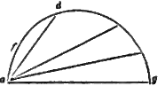
.9. unciae, as was found above. And from all these things we wish to find the quantity of arc .ei. But we know from the premises that the proportion of arc .ez. to chord .ez. is less than the proportion of arc .ei. to chord .ei.: but if we set the proportion of arc .ei. to chord .ei. to be that which arc .ez. has to chord .ez., arc .ei. will be of .22 perticas, and .3 feet, and .12. unciae, which come forth from the divided multiplication of chord .ez. into chord .ei. by arc .ez. But the proportion of arc .ei. to chord .ei. is greater than the proportion of arc .ez. to chord .ez.; therefore arc .ei. is more than the found 22 perticas, and 3 feet, and 12 unciae. Likewise if we set arc .ei. to chord .ei. in the proportion of arc .et. to chord .et., arc .ei. will be of .22 perticas, and .4 feet, and .4. unciae, and 13 points. But the proportion of arc .ei. to chord .ei. is less than the proportion of arc .et. to chord .et.; therefore arc .ei. is less than 22 perticas, and 4 feet, and 4 unciae, and .13. points: and above it was found that arc .ei. is more than 22 perticas, and 3 feet, and .12. unciae. Hence if we halve the difference which is from 22 perticas, and .3 feet, and .12 unciae up to 22 perticas, and .4. feet, and 4 unciae, and .13. points; and that half which comes forth we shall add upon 22 perticas, and 3 feet, and .12 unciae, we shall have by approximation the quantity of arc .ei. Or otherwise let us add together arcs .ez. and .et., it will be .45.; and let us add together chords .ez. and .et., there will be .42. perticas, and .5 feet, and .2. unciae, and .16. points; by which let us divide the multiplication of .45. into chord .ei., namely into .21 perticas, and 3 feet, and .9. unciae, and we shall have .22 perticas, and .4. feet, and .1. uncia, and .6. points for arc .ei. Or otherwise let us cut off from chords .ei. and .et. the quantity of chord .ez.; and let there remain from chord .ei. the quantity .oi., which is of 3 1/2 feet; and from chord .et. let there remain the quantity .nt., which is of .5. feet, and .2. unciae, and .16. points: and let us set arc .zi. to arc .zt., namely to one pertica, as .oi. to .nt., that is, we shall multiply arc .tz., which is of one pertica, namely .2160 points, by .oi., namely by .1260. points, and we shall divide the sum by .nt., namely by 1856. points, we shall have for arc .zi. .4. feet, and one uncia, and .6. points: which having been added with arc .ez., which is of .22. perticas, we shall have 22 perticas, .4. feet, and .1. uncia, and .6. points for arc .ezi., which is similar to the sought arc .ad. of the upper figure. Wherefore if we multiply it by the sixth of diameter .ag., namely by .2., and divide by the sixth of the diameter of the tables, namely by .7., there will come 6 perticas, and .2 feet, and .15 unciae, and .15 points for arc .ad. And if you wish to have arc .abd., which is greater than a semicircle, through chord .ad, you will subtract chord .e.i. from chord .et., there will remain .596. points; which multiply by arc .tz., namely by .2160. points; and what comes forth, divide by .nt., namely by .1856., extract .596 points, which are .1. foot, and .16 unciae, and .14. points for arc .ti.; to which if you add the greater arc of the tables, whose chord is line .et., and that arc is of .109. perticas, we shall have .109 perticas, and .1. foot, and .16. unciae, and .14. points for the arc of the tables: which if we multiply by 12, and divide by 42.; or if you multiply it by the sixth of .12., and divide the sum by the sixth of .42, you will have .31 perticas, and .1. foot, and .7. unciae, and 6 6/7 points for arc .abd. And if through known arc .afd you wish to have unknown chord .ad., multiply arc .afd. by the diameter of the tables, and divide the sum by diameter .ag., and you will have .22 perticas, and .4. feet, and .1. uncia, and .6. points for the above-written arc .ezi., which is an arc falling in the tables between arc .ez. and arc .ezt. Hence so that we may find the chord of it
f. 0107 · p. 100
.ei., which will be similar to chord .ad. of the given circle .abgd. from the found arc .ezi.; and you will subtract arc .ez., there will remain .4. feet, and .1. uncia, and .6. points, which are in sum 1466. points; which multiply by the difference which is between chord .ez. and chord .et., which are known from the tables; and that difference is line .nt., which is of 1856 points; and you will divide the sum by the points of one pertica, namely by arc .t.i.z., there will come out 3 1/2 feet for line .oi.; upon which add line .eo., which is equal to chord .ez., you will have 22 perticas, and 3 1/2 feet for chord .ei., which is similar to your chord .ad.: wherefore you will multiply it by the sixth of 12, and divide it by the sixth of 42., there will come out .6 perticas, and one foot for chord .ad.; and thus according to those things which we have said, when the diameters of circles are known, we shall be able through given known chords in them to find their unknown arcs, and so forth.
When therefore you know how to find arcs through chords, and chords through arcs, through those things which we have said; and you wish to find the area of some sector of a circle, take care to find its arc, and multiply half of it by the semidiameter of the circle; and what comes forth will be the area of that section. For example: let sector .abgd. be contained under straight lines .ab. and .ad. and arc .bgd.; since figure .abgd. is a sector, each of straight lines .ab. and .ad will be the semidiameter of the circle; wherefore point .a. is the center of the circle from which sector .abgd. is cut off, which let be circle .gbed.; and let arcs .be. and .ez. be equal to arc .bgd.; and let straight lines .ae. and .az. be completed, therefore each of sectors .abe. and .aez. will be equal to sector .abgd.: wherefore as arc .db. is to arc .be., so is sector .abgd. to sector .abe.: similarly also sector .aez. is equal to sector .adb.; wherefore as arc .db. is to arc .ez., so is sector .abgd. to sector .aez.; three therefore sectors .abgd. and .abe. and .aez. are equal to one another.
For two of them are double the remaining one. Wherefore sector .adbe. is double sector .aez.; and arc .dbe. is double arc .ez.; wherefore as arc .dbe. is to arc .ez., so is sector .adbe. to sector .aez. Hence if we divide the whole circle into sectors, we shall find that the proportion of one of them to the whole circle is as its arc to the whole circumferential line of the circle; but the proportion of the arc of any sector whatsoever to the whole circumferential line is as half of its arc to half of the circumferential line. For the proportion of the number made from the semidiameter of the circle into the semi-arc of the sector is to the number made from the semidiameter into half of the circumferential line, as the semi-arc of the sector to half of the circumferential line. But from the product of the semidiameter and into half of the circumferential line comes forth the area of the circle. Therefore as the multiplication of the semidiameter of the circle into half of the arc of the sector is to the area of the circle, so the sector is to the area of the circle; therefore the areas of all sectors are gathered from the multiplication of the semidiameter of their circles into half of their arc; and this I wished to demonstrate. And so that this may become clear in numbers; let each of straight lines .ab. and .ad. be of .5. perticas; and let arc .bgd. be of .8 perticas; therefore the whole diameter will be of .10. perticas; you will multiply therefore semidiameter .ad. by half of arc .bgd., namely .5 by 4, there will come 20 for the area of sector .abgd.: and if you wish to have the area of sector .abez., you will multiply semidiameter .ae. into half of arc .bez., there will come 40. for the area of sector .abez. And if you wish to have only the area of some sector less than a semicircle, as the area of sector .abg., whose chord .ag. is of 16 perticas, and sagitta .bd. is of 4 perticas; take care to find the diameter of the circle from which that section is, in this manner: you will draw line .bd. in a straight line up to
f. 0108 · p. 101


point .e.; and let the proportion of straight line .de. to straight line .da. be as .da. to .db.; wherefore .ed. will be .16, namely double line .da.; since .da. is double line .db. Or otherwise let .ad. be multiplied into .dg., namely .8 by 8., there will be 64; which let be divided by straight line .bd., namely by .4., there will come .16 for line .de., as we said; therefore the whole diameter .be. will be 20.; and let the center of the circle be taken as point .f.; and let .fa. fg. be joined, and there will be sector .fabg.: wherefore if we multiply .fb. into half of arc .abg., namely into arc .bg., there will come the area of sector .fabg.; from which if we take away the area of rectilinear triangle .fag., which is gathered from .fd. into .dg., there will certainly remain the area of the section contained under straight line .ag. and arc .abd. And if you desire to have the area of the remaining portion of the circle, which is contained under straight line .ag. and arc .aeg., multiply the semidiameter, namely .fe., into half of arc .aeg., and to the sum coming forth add the area of triangle .fag., and you will have the area of section .aeg.; and thus take care to work in similar cases.
And if it should occur to you to measure a field having the figure of a sector, namely that it is composed of a triangle and a portion of a circle, as field .abgd., which is composed of triangle .abd. and a section of a circle .bgd., which is known not to be a sector if lines .ab. and .ad. are unequal to one another; or if a straight line having been drawn within the figure, such as line .ag., is unequal to one of straight lines .ab. and .ad.; whose area you will have if you join together into one the areas of section .bgd. and of triangle .abd. Likewise if you wish to measure a field having the figure of a fish, namely which is composed of two sections of a circle, as figure .ezit., which is composed of two sections of a circle, which are .ezi. and .e.t.i.: you will indeed take the area of each section; and what comes forth from that joining will be the area of figure .e.z.i.t. Again there is a field whose figure is called oval, or oblique, which is surrounded by one line only, by no means making a circle, whose two diameters .ag. and .bd., cutting one another according to a right angle, are unequal to one another: this therefore you will be able to measure if you take care to resolve it into rectilinear figures; of which the first and greater will be the rectilinear quadrilateral contained under straight lines .ba. and .bg. and .da. and .dg., and there will remain from that figure four breasts, of which one is contained under straight line .ab. and curve .aeb. Another indeed is contained by straight line .bg. and curve .bzg. The third indeed is under straight line .gd. and curve .gid. And the fourth is contained under straight lines .da. and curve .dta.; in which four breasts if we draw rectilinear triangles .eab. and .zbg. and .igd. and .tad., there will remain of the whole figure only a little which is contained under .8. breasts: and if in each of them
f. 0109 · p. 102

a triangle is drawn; and in the remaining breasts you take care to work that same thing, the whole oval figure above-written and spoken of will be resolved into rectilinear figures; and there will not remain from it anything perceptible; of all which rectilinear figures, if we reduce the areas into one, surely we shall immediately have the area of the whole figure. Otherwise join the diameters .ag. and .bd. into one, and multiply half of them by 3 1/7; and what comes forth will be the quantity of curved line .a.b.g.d.; half of which if by half of the half of the two diameters you multiply, the area of the above-written figure will come forth. And so that these things may be had in numbers, let diameter .bd. be 16., and diameter .ag. 12; which joined together make .28.; half of which if you divide by 3 1/7, there will come .44. for curved line .abgd.; half of which, namely .22., if by half of half of the diameters, namely by .7., you multiply, they will yield .154 for its area.
If in a circle a triangle is described, whose three angles touch the circumference of the circle, it is possible through knowledge of the sides of that triangle to find the diameter. For the evidence of which matter let there lie triangle .a.b.g. described in circle .abdg., whose three angles touch the belt in points .a.b.g.: from point .a. indeed let diameter .ad. be drawn cutting side .bg. of triangle .abg. upon point .e. I say that through knowledge of the sides of triangle .abg. it is possible to find the quantity of diameter .ad. Let there lie indeed first the two sides of triangle .ab. and .ag. equal to one another; and let straight lines .bd. and .dg. be completed; and each of triangles .abd. and .agd. will be right-angled, since each of them is in a semicircle: and because side .ab. is equal to side .ag., side .bd. will be equal to side .dg.; wherefore circumference .bd. is equal to circumference .dg. Upon equal circumferences therefore equal angles stand; wherefore the angle which is under .bad. is equal to the angle which is under .dag.; wherefore base .be. is equal to base .eg. Therefore diameter .ad. cuts straight line .eg. into two equal parts; wherefore it is necessary that it cuts at right angles, as Euclid demonstrates in his third book; right-angled indeed are and equal triangles .aeb. and .aeg., and similar, since the angles of one are equal to the angles of the other; and because triangle .adb. has angle .bad. common with triangle .abe., and angle .aeb. is equal to angle .abd., since each of them is right: the remaining angle indeed which is under .adb. is equal to the remaining one which is under .abe.; equiangular therefore are triangles .abd. and .aeb. Similarly it will be shown that triangle .agd. is equiangular with triangle .aeg. Four therefore triangles .aeb. aeg. abd. agd. are similar to one another. For similar triangles about equal angles have their sides proportional. Wherefore as .da., subtending the right angle which is under .abd., is to .ab., containing it, so .ab. or .ag., which subtends, is to the subtending of angles right to straight line .ae.; wherefore the multiplication of .ad. into cathetus .ae. is equal to each of the squares of lines .ab. and .ag., or to the multiplication of .ab. into .ag.
Wherefore if we multiply .ab. into .ag., or take the square of line .ab., or of line .ag., and divide the sum by cathetus .ae., there will come forth the quantity of diameter .ad.; and cathetus .ae. is known, since the sides of triangle .abg. are known; wherefore also diameter .ad. will be known. Which things so that they may be demonstrated in numbers, let each of straight lines .ab. and .ag. be of 10 perticas, and let straight line .bg. be 12. Wherefore cathetus .ae. will be 8: indeed from the product of .ab. into .ag., or from the square of line .ab. or .ag., there come forth 100; which having been divided by .ae., namely by .8., there will come 12 1/2 for diameter .ad.: or otherwise because the two straight lines .ad. and .bg. cut one another in circle .abdg., the multiplication of .ae. into .ed. will be as
f. 0110 · p. 103

the multiplication of .be. into .eg.; wherefore if we multiply .be. into .eg., and divide by .ae., namely 36 by 8, there will come 4 1/2 for line .ed. Wherefore the whole diameter .ad. will be 12 1/2, as we said before. But let each of straight lines .ab and .ag. be known with diameter .ad.; and let straight line .bg. be unknown; since triangle .abd. is right-angled, and from its right angle upon base .ad. at right angles straight line .be. has been drawn, triangles .abe. and .bed. will be similar to one another, and also to the whole triangle .abd.; wherefore as .da. is to .ab., so is .ab. to .ae.; wherefore if we divide the square of line .ab., which is 100, by diameter .ad., there will come .8. for cathetus .ae.; whose square if it is taken away from the square of side .ab., there will remain 36 for the square of line .be.: or if we multiply .ae. by .ed., that is .8. by 4 1/2, there will come likewise 36 for the square of line .be.; therefore .be. is .6., and the whole .bg. is .12.: or otherwise because triangle .aeb. is similar to triangle .adb., as .ad. is to .db., so .ab. will be to .be.; for they have their sides about equal angles proportional: there is indeed an angle which is under .abe. equal to the angle which is under .adb.; wherefore if we multiply .db. into .ba., that is 7 1/2 into .10; and divide by .ad., there will come .6. for line .be., which is half of line .bg. But let straight lines .ab. and .ag. not be equal; let the lesser of them be .ab. as is seen in this other figure: and let cathetus .az. be drawn in triangle .abg.; and because in section .bdga. there are two angles, of which one is that which is under .bga., and the other that which is under .bda., those angles will be equal to one another; and the angle which is under .azg. to the angle which is under .abd. is equal, since each of them is right; the remaining angle under .zag. is equal to the remaining one which is under .bad.: for triangles .azg. and .abd. are equiangular. Similarly it will be shown that triangle .azb. is similar to triangle .agd.: for in the section contained by straight line .ga. and arc .abdg. are the angles which are under .abg. and .adg. Wherefore those angles are to one another equal; and angles .azb. and .agd. are right; wherefore the remaining one which is under .zab. is equal to the remaining one which is under .gad. Similar therefore is triangle .azb. to triangle .agd.; and because similar are triangles .abd. and .azg., it will be as .da. to .ab., so .ga. to .az. Wherefore if we multiply .ab. into .ag., and divide by .az., there will come forth diameter .ad. An example in numbers: let .ab. be 13., and .ag. 15, and let .bg. be .14.; wherefore .bz will be .5., and .zg. will be .9., and .az. will be .12. From .ab indeed into .ag. come .195.; which having been divided by .az., namely by 12, there come forth 16 1/4 for diameter .ad. But let diameter .ad. be known with each of straight lines .ab. and .ag., while straight line .bg., which is the chord of arc .bag., is unknown; because similar are triangles .adg. and .azb., about equal angles they have their sides proportional; wherefore as .ad. is to .dg., so .ab. is to .bz.; wherefore the multiplication of .ab. into .dg. is equal to the multiplication of .ad. into .bz. Again because triangles .abd. and .azg. are similar, it will be as .ad. to .db., so .ag. to .gz.; wherefore the multiplication of .ag. into .db. is equal to the multiplication of .ad. into .zg. But the multiplication of .ab. into .gd. was equal to the multiplication of .ad. into .bz.; therefore the multiplication of .ab. into .gd. with the multiplication of .ag. into .db. is equal to the two multiplications which are from .ad. into .bz., and from .ad. into .zg.; which two multiplications are equal to the product of .ad. into .bg.; therefore the multiplication of .ab. into .dg. with .ag. into .db. is equal to the product of .ad. into .bg.; therefore if we join the multiplication of .ab. into .dg. with the product of .ag. into .bd., and divide the sum by .ad., there will come the known chord .bg., as we said before. Which things let be demonstrated in numbers: from the square indeed of diameter .ad. let the squares of lines .ab and .ag. be taken away, and there will remain the known squares of lines .bd. and .dg., since triangles .abd. and .agd. are right-angled; and .bd. will be 9 3/4; and straight line .gd. will be 6 1/4. Hence if
f. 0111 · p. 104


we multiply 6 1/4 by .13., that is gd. by .ab., and 9 3/4 by 15, that is .bd. by ag., we shall have 227 1/2; which divided by diameter .ad., that is by 16 1/4, they yield .14. for chord .bg.; and when these are divided by 16 1/4, namely by diameter .ad., there will come 14 for chord .bg.: and this is very useful in finding the chord for any arc compounded of two arcs, whose chords are known. Indeed the chords of arcs .ba. and .ag. were known, namely straight lines .ab. and .ag.; through the knowledge of which we found chord .bg. for arc .abg., which was compounded from arc .ba. and .ag.; and this Ptolemy demonstrated in the composition of the table of arcs and chords in the Almagest in another way. Indeed Ptolemy demonstrated through a very similar figure that for any quadrilateral whatsoever inscribed in a circle, if two diameters are drawn in it, the multiplication of one diameter into the other is equal to the two multiplications of opposite sides; which is proved thus. In circle .abcd. let there be quadrilateral .abcd.; and in it let there be the diameters of that quadrilateral, .ac. and .bd, intersecting one another upon point .e. I say that the multiplication of .ac. into .bd. is equal to the two multiplications which are made from ab. into .cd., and from .ad. into .bc. Indeed angles .bae. and .ead. are either equal or unequal: let them first be equal; and it will be shown that triangle .aed. is similar to triangle .abc., since the angles which are under .adb. and .acb. are equal to one another. For they are in the same segment; the remaining angle which is under .aed. is likewise equal to the remaining one which is under .abc.; wherefore as .ac is to cb., so is ad. to .de.: therefore the multiplication of .ad. into .cb. will be equal to .ac. into de.
Similarly it will be shown that triangle .aeb. is similar to triangle .adc.; wherefore as .ac. is to .cd., so is .ab. to .be.: therefore the multiplication of .ac. into .eb. is equal to the multiplication of .ab. into cd.; therefore the multiplication of .ad. into .bc. with .ab. into .cd. is equal to the multiplication of .ac. into .bd., as I said before. But let angle .bae. be greater than angle .ead.; and let angle .bai. lie equal to angle .ead.; let angle .iae. be taken in common, angle .bae. will be equal to angle .iad.; wherefore it will be shown that triangle .iad. is similar to triangle .abc.; and triangle .aib. is similar to triangle .adc., and there will come forth in turn what we said above; and it will be shown that the multiplication of diameter .ac. into diameter .bd. is equal to the two multiplications of opposite sides. Hence if one of those chords is unknown, through knowledge of the remaining ones you will be able to find it. For example: let one of the diameters be unknown, while the remaining one with the sides of the quadrilateral is known.
I shall multiply indeed .ab. into .cd.; and I shall add what comes forth with the product of .ad. into .bc.; and the sum which comes forth I shall divide by the known diameter. And if side .ab. is unknown, from the multiplication of .ac. into .bd. I shall subtract the product of .ad. into .bc.; and the remainder I shall divide by .cd., and there will come .ab.; and thus you may understand in the rest.
If in a circle whose diameter is 8 you desire to find the side of an equilateral triangle inscribed in the circle, remove a fourth part from the square of the whole diameter, or triple the square of the semidiameter, and you will have .48. for the square of each of the sides of the triangle inscribed in that circle: which if you multiply into half of its cathetus, namely by .3, there will come three roots of .48., that is one root of .432. for the area of that triangle, which is .20. perticas, and .4. feet, and 12 3/4 unciae. Whence it is had that the ratio of the area of any triangle inscribed in a circle to the square of its diameter is as .20, and .4 feet, and 12 3/4 unciae to 64.: wherefore if we multiply these by the square of whatever diameter you wish, and divide by 64, we shall have the area of the triangle inscribed in that circle. And because a triangle inscribed in a circle is half of a hexagon inscribed in
f. 0112 · p. 105

the same circle, the ratio of the area of the hexagon to the square of the diameter of its circle will be as .41, and 3 feet, and 7 1/2 unciae to 64.; which having been multiplied by the square of the diameter of any circle whatsoever, if the sum is divided by 64, there will come indeed the area of the hexagon inscribed in that circle. And if in circle .abgd. its diameter .bd. is .8.; and you wish to find the pentagonal or decagonal side inscribed in that circle, upon diameter .b.d. from center .e. let cathetus .ea. be erected; and let .ed. be divided into two equal parts at point .z.; and let straight line .az. be joined; and let straight line .z. lie equal to straight line .az., and let straight line .ai. be joined. I say indeed that straight line .ai. is the pentagonal side: and straight line .ie. is the decagonal side; which is proved thus: because line .ed. is divided into two equal parts at .z.; and in a straight line with it is adjoined line .ei., the multiplication of .ei. into .id. with the square of line .ez. is equal to the square of line .zi. But straight line .zi. lies equal to straight line .az.; therefore the product of .ie. into .di. with the square of line .ez. is equal to the square of line .az. But to the square of line .az. are equal the squares of lines .ae. and .ez.; therefore the product of .ie. into .id. with the square of line .ze. is equal to the two squares of lines .ae. and .ez.: let the square of line .ez. be removed in common, the multiplication of .ei. into .id. will remain equal to the square of semidiameter .ae., that is to the square of semidiameter .de., since .de. is equal to line .ae.; therefore line .d.i. is divided in mean and extreme ratio.
For as .id. is to .de., so is .de. to .ei.; and the hexagonal side is line .de.: since therefore to the side of a hexagon a straight line is adjoined which with the whole is divided according to mean and extreme ratio at the point of their conjunction, that straight line which is joined to the hexagonal side is the decagonal side, as Euclid demonstrates in the thirteenth book. Wherefore straight line .ei. is the decagonal side. And because, as the same Euclid shows in the same book, the pentagonal side has power equal to the hexagonal and decagonal side, straight line .ai. will indeed be the pentagonal side, since it has power equal to the squares of lines .ae. and .ei., namely to the squares of the hexagonal and decagonal side, which side .ai. I shall show with numbers to be the minor line, namely the root of the fourth apotome.
For example: diameter .bd. is .8.; wherefore each of the straight lines .ae. and .ed. is .4.; whose half, namely .ze., is .2. Hence if we join together the squares of lines .ae. and .ez., we shall have .20. for the square of each of lines .az. and .zi.; therefore straight line .ei. consists of a root minus a number: for it is the root of .20. with two taken away from it: which if we multiply into itself, there will come 24., minus four roots of .20.; which four roots are one root of sixteen times 20., namely of .320.; which if we add with the square of line .ae., namely with .16., there will be had .40, minus the root of 320. for the square of line .ai.; whose root is line .ai.: and because it is the root of a number minus a root, we say that it is the minor line, since the difference which is between the square of 40, namely between .1600. and .320., is not a square number, the root of which apotome by approximation is taken thus: the root of 320., which is about 18, minus a ninth, is subtracted from .40., there remain 22 1/9, whose root, which is .4., and 4 feet, and 3. unciae, and .17. points, by the closest approximation is line .ai., namely the pentagonal side inscribed in the above-written circle. For from this all the pentagonal sides of any circles whatsoever can easily be had; because as 4, and 2. feet, and .3 unciae, and 17 points is to 8., so will the pentagonal side of any circle whatsoever be to its diameter. Hence if we multiply the diameter of any circle by 4, and 2 feet, and 3 unciae, and 17 points,
f. 0113 · p. 106
and divide by 8., we shall have the decagonal side of that circle. But if you desire to find the chord of the pentagonal angle .be. in pentagon .abcde., around which pentagon let circle .abgde. be described. Draw diameter .bz. of that circle, which let be .8.; and you will join .ze., which will be the decagonal side: and because angle .zeb. is in semicircle .zeb.; therefore it is right. Wherefore if from the square of diameter .bz., which is .64., the square of the decagonal side .ze. is taken away, which we found above to be .24., minus the root of 320.; whose root is called the major line, since it is the root of the fourth binomial, there will remain 40, and the root of 320., which is the length of chord .be. Whence it can be had that of whatever terms the square of the pentagonal side is, of the same terms will be the chord of the pentagonal angle. But the pentagonal side is the root of the fourth apotome, namely of a number minus a root; and the square of the chord is the fourth binomial; and because an apotome is less than its binomial; therefore the root of the fourth apotome is called the minor line: and the root of the fourth binomial is called the major.
Otherwise let diameter .ati. be drawn cutting chord .be. at point .t.; and I shall join straight line .ib., and triangle .iba. will be right-angled; and it is divided by cathetus .bt. into two triangles similar to one another and to the whole; wherefore as .ia. is to .ab., so is .ab. to .at.: wherefore if we divide the square of line .ab., which is .40, minus the root of .320., by diameter .ai., namely by .8., there will be had .5, minus the root of .5. for line .at.: which subtracted from the whole .ai., there will remain .3, and the root of .5. for line .ti.: hence if we multiply .ti. into .ta., and quadruple that which comes forth, there will similarly be had .40, and the root of .320 for the square of line .be.: for the root of 320. is 18 minus 1/9; which added with .40, make 58, minus a ninth, for the square of line .be., whose root is .7, and .3 feet, and .11 unciae, and .14 points. Through which chord also you will be able to have knowledge of similar chords inscribed in any circle, if you multiply it by the diameter of that circle, and divide the sum by .8. And so that we may have the area of the above-written pentagon, we shall multiply 3/4 of the diameter, namely .6, by 5/6 of chord .be.; or 5/6 of .6, which are .5., multiply by the whole chord .be., and there will come about .38 perticas, and 1 1/2 denarii of measure for the area of pentagon .abgde.: through which also we can have knowledge of the areas of all pentagons inscribed in any circles whatsoever: if we multiply 38 perticas, and 1 1/2 denarii by the squares of the diameters of those circles, and divide by the square of the proposed circle, namely by 64.; because Euclid also at the beginning of the twelfth book shows that similar rectilinear figures in circles are to one another as the squares of their diameters: alternately therefore as the square of the diameter of one circle is to the multilateral inscribed in it, so is the square of another circle to a similar multilateral inscribed in it: we can also otherwise have knowledge of chord .be.; and it will be had from those things which are proved in the fourteenth book of Euclid, that the chord of the pentagonal angle together with the pentagonal side has power equal to five times the square of the semidiameter of the circle: wherefore if we take five times the square of half of the diameter, we shall have .80.; from which if we subtract the square of the pentagonal side, namely 40, minus the root of 320, there will remain 40, and the root of 320. for the square of chord .be., as we said before: or if we multiply the diameter by 5/64, we shall have .40. for the greater term: and if from the square of the square of the diameter we take 5/64, that is from 4096, we shall have 320; whose root is the lesser term; and thus you will be able to do in other circles.
Indeed the area of an equilateral and equiangular triangle inscribed in a circle whose
f. 0114 · p. 107

diameter is .8.; we found above to be .20 square perticas, and .4. feet, and 12 3/4 unciae. Indeed the area of the tetragon is 32, namely half of 64., namely of the square of the diameter. That of the pentagon indeed is 38 1/24. That of the hexagon also is .41, and .3 feet, and 7 1/2 unciae. The area of the octagon indeed is 45 perticas, and .1 foot, and 9 4/9 unciae, which are had from the multiplication of the double diameter into half the side of the tetragon, namely from 16 into the root of .8. The area also of the decagon is 47 perticas, and 2 1/2 unciae, which are had from the multiplication of five times the fourth part of the diameter into the pentagonal side, namely from .10., into .4 perticas, and .4. feet, and .3 unciae, and .17 points. For the area of the dodecagon is .48 perticas, which come forth from the multiplication of half the diameter into half of all the sides of the hexagon inscribed in that circle. And when you have knowledge of all these things, you will easily be able to have the area of similar figures inscribed in other circles, if you are not unmindful of the aforesaid things. Having therefore unfolded those things which pertain to the demonstrations of circles, let us now proceed to the reduction of fields which lie on the ascent of mountains.
Here begins the fifth part, on the measurement of fields that lie on mountains.
When, therefore, you desire to measure any field that lies on the ascent or on the slopes of mountains, diligently inquire into the sides of the surface lying in the plane beneath it, through which take care to have the area of that plane surface.
For that will be the area of the fourth field. For mountains are not measured according to the apparent surfaces in them; since houses, and buildings, trees, and likewise crops do not rise at a right angle upon those surfaces themselves. Hence are sought the areas of those planes upon which the apparent surfaces of mountains lie: and upon which planes all the aforesaid things rise at a right angle. For how through the sides of sloping surfaces you may have knowledge of the sides of the plane surfaces existing beneath them, I wish at present to demonstrate. Let there lie indeed line .ab. for the side of some sloping surface lying on a mountain; and let line .bg. be the side of the plane existing beneath side .ab.; and let straight line .ag. fall perpendicularly upon .bg., making the angle at .g. right: it is indeed necessary through knowledge of the apparent side .ab. to find most truly the hidden side .bg., and likewise knowledge of the perpendicular .ag. Which is done in two ways. For the first way, and that which wise surveyors use, is that at point .a. you place the head of the measuring rod, extending it toward .b. upon line .ab., and hold immovably the head of the rod which is upon .a.: but raise the other upward until the rod itself lies equidistant to line .gb.; which is known through a certain instrument which is called an archipendulum, as I shall demonstrate below: and then through the lower head of the rod let a pebble fall upon line .ab.; and where the pebble falls, there with the same rod begin in the same order to measure with the rod; and thus you will do until you have finished measuring the whole line .ab.
For example: let the rod first be placed .ae., so that it is equidistant to side .gb.; and through point .e. let the pebble fall upon point .c.; upon which point let him place again the head of the rod, holding it with the archipendulum equidistant with line .gb., which let be .cf.; and from point .f. let the pebble fall upon point .h., and from point .h. toward .b.; and place the rod again equidistant to line .bg., which let be .hi.; and through .i. let the pebble fall upon point .b. For as many times as the rod is placed falling upon line .ab., so many times will there be one rod
f. 0115 · p. 108


in side .gb. For example: because rod .ae. is equidistant to side .gb., angle .eag. will be right, since the angle at .g. is right: and because .ec. is the fall of the pebble, if we send out a line through .c. from point .e. upon line .gb., which let be line .ek., straight line .ek. will be a cathetus upon straight line .gb.: wherefore straight line .ek. is equidistant and equal to straight line .ag.; wherefore .gk. is equal to the length of rod .ae. Similarly if through .h. we draw line .f.l., you will find, with the same things disposed, line .kl. to be equal to rod .ef. Again, if through the fall of the pebble falling from .i. onto point .b. we draw line .ib., it will be equidistant and equal to line .hl.; wherefore .lb. is also equal to .hi., namely to the rod; therefore as many times as the rod was taken equidistantly to line .gb. upon line .ab., so many times will the length of one rod be line .gb., as we said before. For an archipendulum is a wooden instrument having the form of an isosceles triangle; and from one of the angles hangs a thread with a plumb: and when you have placed the base of that archipendulum upon the rod, and from the upper angle the plumb with the thread falls upon the midpoint of its base: then the rod will stand equidistantly to that plane which you wish to measure; which you will be able to perceive by the eye in the underlying figure, in which is set for the rod line .po., upon which archipendulum .abg. is erected; and from point .a. falls the thread with the plumb .ad. through point .e., which is in the middle of .bg. And if in the preceding figure the apparent side .ab. descends in a straight line, it will not be necessary to place the rod with the archipendulum except once; because when you have placed rod .ae. equidistant to side .gb., and upon the fall .ec. have erected a reed equal to line .ec., triangle .aec. will be similar to triangle .abg.; because when upon equidistant lines .ae. and .bg. straight line .ab. falls, angle .aec. will be equal to angle .abg: similarly because upon equidistant lines .ag. and .ec. straight line .ab. falls, angle .gab. will be equal to angle .eca.; wherefore the remaining angle which is under .aec. remains equal to the remaining one which is under .agb.: wherefore proportionally as .ac. is to the whole .ab., so is rod .ae. to the whole .gb. Hence if we multiply .ab. into .ae., and divide by .ac., there will come forth indeed line .gb.; that is, if you make a rod equal to line .ac., and with it you measure the whole line .ab., you will similarly have line .gb.; because as many equal lines .ac. as there are in line .ab., so many equal rods .ae. are in side .gb.: similarly as many equal lines .ac. as there are in line .ab., so many equal lines .ec. are in altitude .ag. Hence if we multiply .ab. by .ec., and divide by .ac., there will come forth indeed the altitude of cathetus .ag.: and this investigation of the cathetus is very useful in finding the altitudes of pyramids.
Wise ancients indeed used to arrange a similar triangle with reeds in this manner. Having therefore drawn the above-written figure .agb., whose side .ab. lies on the apparent slope of the mountain, through which they wished to have the length of plane .bg., and likewise the altitude .ag.; they therefore erected upon the foot of the mountain a reed .bc. orthogonally of any magnitude whatsoever, upon which they placed another reed making angle .c. right, whose other head lay upon line .ab.; which reed let be line .ce.; and thus triangle .cbe. was similar to triangle .abg.; wherefore as .be. was to .ba., so was .ec. to .bg.: they therefore multiplied .ab. by .ce., and divided by .be.; and thus they had knowledge of side .bg. Similarly because as .be. was to .ba., so was .cb. to .ag.; they multiplied .ab. by .bc., and divided by .be.; and thus they had altitude .ag. And if a field placed on a mountain has the form of the surface of some portion of a column, so that the apparent surface is convex, like surface .abde., whose sides .ab. and .de. are arcs
f. 0116 · p. 109

of a circle; while the remaining sides .ad. and .be. are straight; and let side .be. be at the summit of the mountain; let side .ad. also be toward the foot. I shall understand first the sides of the plane existing beneath that surface to be .agdz. and .gz., and likewise the altitudes .bg. and .ez. falling orthogonally upon plane .adzg., and at points .g. and .z.; wherefore angles .agb. and .dze. are right: I shall measure indeed upon arcs .ba. and .ed. with the rod and archipendulum, throwing pebbles upon those arcs, beginning from points .be., which are at the height of the field, and descending all the way to points .ad.; and thus I shall have the quantities .ag. and dz.: and because side .ad. is straight, and likewise in the plane of surface .gadz., I shall measure it just as the sides of planes are measured.
Then I shall measure side .be. whether it is equidistant and equal to side .gz.; which is known if catheti .bg. and .ez. are equal; and thus I shall have knowledge of side .gz. For how it may be known whether catheti .bg. and .ez. are equal to one another or not will be demonstrated in the underlying figure: or it will be able to be perceived by the eye if points .b. and .e. are in the same plane: if, however, one of them is higher, line .be. at point .e. will be ascending or descending. Let .e. be a point higher than point .b.; wherefore upon side .eb. I shall measure with the rod and archipendulum in the above-written order; and thus I shall have knowledge of side .zg.: and if plane .adzg. is rectangular, I shall multiply .ga. into .ad., and I shall have the area of quadrilateral .az., which will be the area of the apparent convex surface: and if plane .az. is not rectangular, I shall take care to find diameter .gd., whose knowledge I shall have if I measure upon arc .bd. with the rod and archipendulum: then I shall join into one the area of triangles .gad. and .dzg., and I shall have what is sought.
And if the convexity of the field declines to both sides, like arc .cfh., whose highest part let be point .f. I shall understand again the side of the plane .ca. to be joined orthogonally with altitude .af.: and if arc .fc. is equal to arc .fh., the double of line .ca. will be the chord of arc .cfh., namely the length of the side of the whole plane falling under arc .cfh., provided however that arc .cfh. is not greater than a semicircle: because if it were greater than a semicircle, then the diameter of the circle would be the length of the apparent surface. But let arc .fh. be less than arc .fc.; and I shall understand line .hi. to be joined orthogonally with line .fi.; and I shall understand line .cak. to be equidistant to line .ih., and .ak. equal to line .ih.: wherefore if .hk. is drawn, line .ia. and .hk. will be equal and equidistant; wherefore the angle at .k. is right; wherefore the whole line .ck. will be the side of the plane falling under arc .cfh.; and .hk. is the altitude which is from .a. to .i.: these things therefore being understood, I shall measure with the rod and archipendulum from .f. to .c., and from .f. to .h., and I shall have the length of side .ck.: or otherwise I shall erect a reed upon point .c. orthogonally, which let be .cb.; and I shall fit with it another reed of such magnitude as when it makes a right angle at point .b., the other side touches arc .fc.; which reed let be line .bg. I shall investigate therefore as finely as I can the lengths of reeds .cb. and .bg., and I shall join their squares: and of the joined sum the root I shall find, which will be the length of chord .cg.; which I shall divide into two equal parts at point .d.; and from point .d. I shall understand cathetus .de. to be raised upon chord .cg.: wherefore point .e. will divide arc .cg. into two halves. And because as is held in the eleventh book, every triangle is in one surface; if I draw straight line .de. from part .e. through surface .bcg., it will fall upon one of sides .cb. and .bg., or into angle .b. contained by them. When .cb. and .bg. are equal, then it will fall
f. 0117 · p. 110upon point .b.; and if one of them is greater, then it will fall upon the greater of them. Let indeed .cb. be greater than .bg.; and let line .de. be drawn in thought until it meets line .cb. at point .l.; triangles .cbg. and .edl. will indeed be right-angled and similar, since they have angle .lcd. in common: wherefore as .bc. is to .bg., so is .cd. to .dl.: wherefore I shall multiply .bg. by .cd., and divide by .bc., and I shall have .dl. known. Likewise as .bc. is to .cg., so is .cd. to .cl.: wherefore I shall multiply .cg. by .cd., and divide by .bc., and I shall have the quantity of line .cl.; which I shall take finely, and I shall go; and I shall take a straight reed which falls from .l. to .e., whose length I shall take away from the found .ld., and the sagitta .ed. will remain known: wherefore if I multiply .cd. into .dg., and divide by .de., and add what comes forth with .ed., I shall have the diameter of the circle to which arc .cfh. belongs: and when through the found diameter you find the chord of double arc .gf. through those things which we spoke of in the tables, and take half of that chord, you will clearly have knowledge of line .gam.: to which if you add the length of reed .bg., you will have knowledge of the whole line .bm., that is of line .ce. Similarly if through the same diameter you find the chord of double arc .fh., half of it will be line .hi., which is equal to line .ak.; and thus you will have knowledge of the whole straight line .ck., namely the length of the plane existing beneath the convex surface. And when the sides of the planes upon which the apparent surfaces of mountains rise you know how to find, you will be able to find their areas finely through those sides: since those planes are of three sides, or of four, or of more: or round: or of some part of a circle: or that it even has an oblique form deviating from true roundness. And when you have the form of that plane through those things which have been said in this third distinction, you will be able to find its area: wherefore putting an end to this distinction, to the fourth distinction let us proceed, in which we shall teach how to divide fields of whatever form they may be.